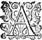
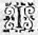

LE
SEPTIESME
LIVRE DE
LA
TROISIESME
PARTIE
de l'Astree
de Messire Honoré d'Urfé.
Éd.
Éd. de 1619, 256 verso sic 254 verso.

ADamas qui desiroit grandement de contenter toute la belle et honorable trouppetroupe qui estoit en sa maison, et de satisfaire particulierement à la promesse qu'il avoit faite à ces belles bergeres, qui l'avoient supplié d'aller en leur hameau, pour faire le sacrifice du remerciment. Soudain que le jour fut venu, il donna ordre à faire partir les Sacrificateurs, avec les animaux et autres choses necessaires, et pour faire advertir tous ceux des hameaux voisins, afin qu'ils y
peussentpussent assister. Et cependant qu'il ordonnoit toutes ces choses, la belle Daphnide, et toutes ces estrangeres et honnestes bergeres finirent de s'habiller, et incontinent apres se mirent toutes ensemble en chemin, pour s'en aller au petit pas au lieu où le sacrifice devoit estre faictfait . Alexis entre toutes estoit la plus interdite, car d'abord que sortant du logis, elle jetta les yeux sur la riviere de Lignon, et qu'elle apperçeut le lieu de sa derniere demeure, il luy sembla que ce voyage tant hors de son esperance, n'estoit point veritable, mais en songe seulement. Il est vray que quand elle eut descendu une partie de la coline avec Astree, et quequ' Hylas par sesces discours l'eust cent fois esveillee, et qu'enfinque veritablement elle recogneut que ce n'estoit pas un songe, mais un veritable voyage, elle se trouva si pleine de contentement, que chacun le pouvoit lire en ses yeux et en son visage. Astrée d'autre costé, qui ne pouvoit desirer un plus grand bon-heur, que d'estre aupres de ceste Druyde déguisee, et par qui le visage de Celadon luy estoit si naïfvement representé, s'en alloit si contente et satisfaite, qu'ayant presque oublié les traverses que la fortune luy avoit donnees par le passé, elle se disoit maintenant la plus heureuse bergere de LignonLygnon : Et parce qu'Adamas luy avoit faitfaict entendre, que ce soir il vouloit loger avec Phocion, et que Leonide et Alexis y seroient aussi, elle en donna advis au vieux Pasteur, afin qu'il se preparast à bien recevoir ses hostes, et à donner tel ordre en sa maison, qu'ils n'y receussent point d'incommodité. Et d'autant qu'Alcidon, Daphnide,
et sa trouppetroupe devoient loger dans celle de Lycidas, ce fut luy qui laissant ceste trouppetroupe , se mit devant pour en porter les nouvelles, cependant qu'au petit pas, ils s'en alloient chantant et discourant, pour tromper la longueur du chemin.
Calydon qui avoit le souvenir si present de la cruelle response qu'Astree luy avoit faite, n'ayant plus la hardiesse de s'approcher d'elle, et toutefoistoutesfois ne pouvant celer son desplaisir, ny son extreme affection, marchant quelques pas devant elle, ne se peut empescher de souspirer ces vers :

P
Ourquoy faut-il l'aymer, puis qu'elle est insensible,
OnOu n'aη
nul sentiment que pour s'armer le cœur
Contre un fidelle Amant de nouvelle rigueur,
A tout autre pouvoirennemy
se
rendant invincible ?
Pourquoy faut-il l'aymer, puis qu'il est impossible
De pouvoir par Amour en estre le vainqueur,
Ny gaignergagner
son esprit par peine ou par longueur,
Et qu'y perdre le temps, c'est l'espoirη
infaillible ?
Mais pourquoy ne l'aymer, si telle est sa beauté,
Que de ne l'aymer point, ce seroit lascheté,
Et que de la quitter n'est plus en ma puissance ?
Mais c'est perdre le temps, la peine et le soucy.
Peut-estre Amour vaincra, que s'il n'advient ainsi,
N'est-ce assez de l'aymer pour toute recompense ?
Hylas qui estoit aupres de luy, et qui ne pouvoit approuveraprouver ceste opiniastre affection, soudain que Calydon eut achevé, chanta à haute voix ces vers :
I.

C
Eux qui veulent vivre en servage,
Peuvent comme esclavesη
mourir,
Hylas jamais n'a peu souffrir
Que l'on luy fistfit un tel outrage :
Change d'humeur qui s'y plaira,
Jamais Hylas ne changera.
II.
Il est certain, Hylas vous ayme :
Mais sçavez vous belle Alexis,
De son amour quel est le prix ?
Le prix d'Amour, c'est l'Amour mesme : "
Change d'humeur qui s'y plaira,
Jamais Hylas ne changera.
III.
Languir aupres d'une cruelle,
C'est un bien maigre
passe tempspassetemp ;
Et c'est enquoy je ne m'entends,
Il vaut mieux estre infidelle :
Change d'humeur qui s'y plaira,
Jamais Hylas ne changera.
IIII.
Mais pour ne le trouver estrange,
Qu'égale entre nous soit la loy :
Comme je vous ayme, aymez moy,
Et me changez si je vous change.
Change d'humeur qui s'y plaira,
Jamais Hylas ne changera.
V.
Ainsi d'une si douce vie
Nul de nous ne se lassera,
Parce que celuy changera
Qui premier en aura l'envie.
Change d'humeur qui s'y plaira,
Jamais Hylas ne changera
VI.
Et si jamais je vous en blasme,
Que je puisse mourir d'amour,
Ou bien que j'ayme quelque jour
Longuement une laide femme :
Change d'humeur qui s'y plaira,
Jamais Hylas ne changera.
Et si jamais je vous en blasme,
Que je puisse mourir d'amour,
Ou bien que j'ayme quelque jour
Longuement une laide femme :
Change d'humeur qui s'y plaira,
Jamais Hylas ne changera.
Chacun se mit à rire de la chanson d'Hylas, et parce que Stiliane qui marchoit avec Carlis et Hermante assez pres de luy, avoit escouté attentivement ce qu'il avoit dit : - Il me semble Hylas, luy dit-elle, que ceux qui vous accusent d'estre inconstant vous font un grand outrage, puis que jamais homme ne fut plus constant que vous estes, d'autant que dés la premiere fois que je vous vis, vous estiez de la mesme opinion que je vous retreuve. - Que voulez vous ma vieille maistresse que je vous die ? c'est de la misere de nostre siecle qu'il faut que je me pleigne, puis que les hommes et les femmes sont de si peu d'esprit qu'ils ne sçavent recognoistre ceste verité : - Voila, dictdit -elle en sousriant, une mauvaise recompense pour le bon office que je vous rends, vous me nommez vostre vieille maistresse,
et ne sçavez vous, Hylas, qu'il n'y a rien qui "
offence plus une femme que
de l'appeller vieille ? "
- Je le croy, respondit Hylas, mais je ne sçay qu'y faire, le long temps qu'il y a que nous nous cognoissons est cause de ceste injure. Daphnide qui parloit avec le sage Adamas, oyant rire ceux qui estoient aupres de Hylas, et desireuse de sçavoir que c'estoit, le demanda à Diane qui estoit assez pres d'elle, et luiluy en ayant dit le subject :sujet - Il faut advoüer, dit Daphnide, que son humeur est la plus agreable que l'on puisse rencontrer, et que l'on le peut nommer l'unique en son espece, et je croy que toute cette trouppe seroit bien marrie de le perdre. Mais, belle bergere, dites moy je vous supplie, depuis quand est-il parmy vous, et qu'est-ce qui l'y a faictfait venir, et qui l'y arreste ? Diane alors luy respondit, - Il y peut avoir quatre ou cinqη
Lunes qu'il vint, et je croy que de vous dire ce qui l'arreste icy, il est superflu. Puis, Madame, que vous le pouvez assez imaginer, cognoissant son humeur comme vous faites, mais pour l'occasion qui le nous
a amené, je ne pense pas que personne le sçache que luy seul, ce n'est pas qu'il soit fort caché
ny retenu à raconter tout ce qui luy est arrivé : mais c'est qu'que ayant plusieurs fois commencé ou il a esté interrompu, ou le temps luy a manqué ;
et je m'asseure, Madame, que pour peu que vous fassiez semblant de le desirer, il ne fera pas difficulté de vous le dire, puis qu'il croit estre bien autant obligé à ceux qui le veulent escouter, que luy sçauroient estre ceux ausquels il raconte ses fortunes :
- Je pense adjousta
Daphnide, que ce ne seroit point un mauvais divertissement, s'il nous vouloit entretenir, et que le chemin en seroit beaucoup moins ennuyeux : mais pour en venir à bout, il faut que ceste belle Druyde, dit-elle monstrant Alexis, le luy commande. Alexis qui s'ouyt nommer, et qui prit garde au signe que faisoit Daphnide de la main, pour ne point monstrer qu'elle fust trop attentive à parler avec Astree, luy demanda, si elle vouloit quelque service d'elle, et sçachant par Diane ce qu'elle desiroit : - Je m'asseure, Madame, dictdit
Alexis, que personne n'y a plus de pouvoir que vous : et toutesfois, puis qu'il vous plaist de me le commander ainsi, je m'en vay faire preuve de celuyη
que j'y puisay ; et lors relevant la voix : - Mon serviteur, luy dit-elle, je deviens jalouze :jalouse - Il y a peu d'occasion de l'estre, respondit Hylas ; - L'occasion, adjousta Alexis, y est tres grande : car outre que le visage de ces belles estrangeres ne m'en donne que trop,
" encores sçavez vous bien que ce n'est pas sans
" raison si l'on soupçonne de larcin celuy qui a accoustumé
" de desrober : - Vous voulez dire, respondit Hylas en sousriant, que j'ay accoustumé de desrober les cœurs de celles qui me voyent, et vous craignez que je n'en fasse de mesme de celuy de ces nouvelles bergeres : mais n'ayez peur, ma belle Maistresse, car il peut bien estre que je feray ce larcin : toutesfoismais
encores que je prenne le leur, je vous promets que pour cela elles n'auront pas le mien, et qu'il sera tout à vous. - Ceste asseurance, repliqua Alexis, me plaist fort : mais mon serviteur, ce n'est pas ce que je veux
dire : j'entends qu'elles sont belles, et que vous faites gloire d'aymer toutes celles qui ont de la beauté. Hylas alors s'approchant d'Alexis : - Je voy bien ma Maistresse, luy dictdit -il, que vous ne sçavez pas encore de quelle sorte j'ayme. Il faut que vous sçachiez que je m'y gouverne tout ainsi qu'un marchand bien advisé : lors qu'il faitfaict dessein d'acheterachepter quelque chose, il regarde combien elle peut valoir, et puis amasse de tous costez l'argent qui luy est necessaire pour esgaler ce prix : J'en fais de mesme : car lors que j'entreprens d'aymeraimer une Dame, je
regarde incontinent quelle est sa beauté, car comme vous sçavez, "
ce qui donne le prix aux femmes, ce n'est que la seule beauté, "
et soudain je fais un amas d'Amour en mon ame, égaleesgal au prix et à la valeur qui est en elle : et lors que j'ayme, je vay despendant cét amas d'Amour, et quand je l'ay tout employé au service de celle pour qui je l'avois amassé, il ne m'en reste plus pour elle, et
faut si je veux aimeraymer , que j'aille ailleurs chercher une nouvelle beauté pour faire un autre amas d'amour, si bien qu'en cela mon argent et mon amour se ressemblent bien fort : Je veux dire, que l'un et l'autre quand je les ay despendus, je ne les ay plus : Vous auriez donc quelque raison de craindre, ma maistresse, si jamais je n'avois aiméaymé ces nouvelles bergeres : mais il y a long-temps que j'ay despendu tout l'amas que j'avois faict pour leur beauté, et qu'il n'y en a plus en moy pour elles : - Mais, mon serviteur, adjousta Alexis, les marchands qui sont riches, encores qu'ils ayent une fois vuidé leurs bources, ils ne laissent
de les remplir pour achepter la seconde fois ce que la premiere ils n'auroient peu avoir. - Or, reprit Hylas, c'est en quoy, ma maistresse, ces riches marchands et moy ne sommes pas semblables : car eux par deux et trois fois reprennent et renoüent leurs marchez, voire s'ils n'ont pas l'argent, l'empruntent sur leur credit : mais moy, jamais plus je n'y reviens lors que la premiere fois j'ay manqué de l'acheter :achepter - Voila, dit Daphnide en sousriant, la plus belle façon d'aymer dont j'aye jamais ouy parler ; - Il est vray, ditdict Alexis, mais elle n'est pas tant à mon advantage que je desirerois bien, car j'ay peur que vous n'ayez bien tost despendu l'amour que vous avez amassee pour moy, et lors vous ne m'aymerez plus : - Il est certain, respondit froidement Hylas, que si je l'avois toute employee, vous n'en devriez jamais esperer en moy : mais il est du tout impossible ; parce que quand je fais cét amas d'amour, je le rends égal à la beauté que je veux aymer, et la vostre estant infinie, vous devez croire que le monceau est grand de l'amour que j'ay mis ensemble pour l'esgaler : - J'en seray bien ayse, respondit Alexis, car ce me seroit bien du regret de vous perdre, vous estimant comme je fais, et cela me faict vous supplier, si de fortune il n'y en avoit pas un si grand monceau que vous le figurez, que vous rabatissiez un peu de vostre despence afin que vostre provisionmonceau durast d'avantage. J'ayme mieux que vous m'aymiez un peu moins, que si vous imitiez ceux qui despendent en un jour ce qui leur pourroit suffire pour tout un an : - Ma Maistresse, dit-il incontinent, si vous
n'avez que ce soucy, vivez seulement
en repos, car je vous asseure que j'en ay tant que j'ay dequoy vous aymer plus long temps que je ne vivray : - Mais, mon serviteur, puis que vous avez tant d'amour pour moy, dictdit
Alexis, encore me semble-t'il, que vous devriez desirer que j'en eusse autant pour vous, afin que cette Amour ne fust point boiteuse : - Vous dites fort bien, reprit Hylas, et c'est enquoy je suis bien empesché, si vous me dites ce qu'il faut faire, vous verrez que je le desire pour le moins autant que je vous ayme : - Je ne doute point, adjousta Alexis, de ceste bonne volonté : mais puis qu'il est ainsi, il faut que vous en cherchiez
les moyens : J'ay tousjours ouy dire, que ce qui donne le plus "
d'amour, c'est la cognoissance de la chose aymable : Comment "
voulez
vous que je vous ayme, si je ne vous cognois point,
ou pour le moins si je ne
sçay de vous que fort peu ?
Le tresorthresor
η
caché ne sert à rien "
pour le faire estimer, vos actions sans doute, "
vous pourroient rendre
estimable, si elles estoient sceuës, c'est pourquoy il me semble que si vous desirez que je vous ayme, vous devez estre curieux de me faire sçavoir vostre vie, et maintenant que le temps est si propre, et que vous aurez une si belle audience, vous ne devez pas en perdre l'occasion : - Et quoy, ma Maistresse, dictdit
Hylas, tout ce long discours que vous avez faictfait , n'a-ce esté que pour ce subject ?sujet Il ne falloit que me faire signe que vous le vouliez, vous eussiez veu que mon affection est encore plus grande que vostre curiosité, et quoy que je tienne ces maximes fausses en amour, qu'il faille cognoistre
avant que d'aymer, aussi bien que toutes les autres que Silvandre va proposant, si ne veux-je manquer de vous dire tout ce que je sçay de moy, seulement pour vous obeyr. Et lors Adamas l'ayant fait mettre au milieu de toute la troupe, chacun demeura attentif à l'escouter, et pour le mieux ouyr, ils se pressoient si fort autour de luiluy , qu'ils se marchoient presque sur les piedsη . Et lors voyant qu'ils faisoient tous un grand silence, il commença de ceste sorte :
De Cryseide, et d'HylasArimant.
" 
IL est certain que l'ignorance a
" cela de propre, qu'elle fait blasmer
" plusieurs choses, qui d'elles-mesmes sont loüables :
" Je l'ay recogneu maintes fois, depuis que je suis parmy les bergers de cestecette riviere de Lignon, où les fausses maximes de Silvandre sont tellement suivies, que vous diriez, ma maistresse, quand il parle que c'est un Oracle, et que les Dieux seroient bien offencez, si l'on ne croyoit tout ce qu'il dit : Et cestecette erreur est tellement enracinee dans l'opinion de tous ceux de cette contree
*
ce rivage, qu'il semble que ce soit un crime de leze Majesté en Amour que d'y contredire : mais moy qui ne m'arreste pas à l'opinion, mais à la verité, et qui ne me laisses gueres vaincre aux paroles sans les raisons, j'ay tousjours
voulu suivre ce que cestecette raison m'a monstré se devoir faire :
y
a-t'il
quelqu'un qui puisse blasmer l'experienceη
,
puisqu'elle est mere et "
nourrice de la prudence ? Et toutefois parlez à Silvandre, "
et à ceux qui
sont de sa secte, ils vous maintiendront au peril de leur vie, que ces
experiences sont vicieuses, et qu'il faut comme coquillesη
, depuis qu'on est
attaché à un rocher, ne s'en separer jamais : Voire comme si "
les Dieux ne
nous avoient pas donné le jugement pour "
discerner des choses bonnes,
celles qui sont "
meilleures, et la volontéη
qui est tousjours portee "
de son
naturel, et par la raison à celles qui sont les plus parfaites : "
Ces considerations seront s'il vous plaist devant vos yeux, ma Maistresse, quand vous verrez que j'en ay quelquefois aymees que j'ay changees apres pour d'autres, sans que cela vous puisse faire craindre que je vous laisse jamais pour quelque autre, puis qu'il est impossible que je trouve quelque chose qui vaille mieux.
Vous n'avez pas esté la premiere, ma belle maistresse, qui avez desiréd'entendre la suitte estrange de mes fortunes : Il y en a eu plusieurs qui ont eu cestecette curiosité, et mesme en cestecette
trouppetroupe , et à qui en diverses fois j'en ay dit une grande partieη
. Or je sçay bien que ce que vous desirez sçavoir de moy, c'est ce que vous ne pouvez apprendreaprendre de nul autre qui soit icy, car pour le reste, ces causeuses bergeres à qui je l'ay desja raconté, vous le diront à loisir, si desja elles ne l'ont fait : Et pource je ne vous diray pas que je suis originaire de Camargues, que j'y commençay
mon apprentissageη
aupresauprez de Carlis, et le finis en Stiliane, qui me firent quiter le lieu de ma naissance, tant j'estois nouveau en ce mestier, ny que suivant ma fortune
je parvins à Lyon, apres avoir aymé par les chemins la belle Aymee, la folastre Floriante, et la triste Cloris : je me tairay aussi qu'y estant arrivé, j'entrevis Circeine, et que j'en fus pris d'Amour, et que si cestecette affection nasquit dans le Temple, elle mourut aussi tost que j'en sortis, pour revivre quelque temps apres, laissant cependant la place à la charitableη
Palinice, et celle-là à la courtoise
Parthenope, puis à la malicieuse
Dorinde, et à la glorieuse
Florice : mais parce que Florice est la derniere de toutes celles que j'ay nommees, je suis contraint de commencer mon discours, où cestecette Amour prit fin, pour vous faire mieux entendre ce que vous desirez sçavoir de ma vie.
Periandre tres-honneste
Chevalier, et qui estoit passionnément amoureux de Dorinde, pour luy complaire fustfut cause de me faire perdre la bonne volonté de Florice : en me desrobant, quoy que mon amy, quelques lettres qu'elle m'avoit escrites, et que depuis
Dorinde pour se venger d'elle et de moy, fit voir, la malicieuse qu'elle est, à Theombre mary de Florice, et desquelles il conceut un si grand soupçon qu'il l'emmena hors de la ville, me faisant perdre par cét esloignement le bien de la voir, et peu de
" temps apres le desir de la revoir : car ma Maistresse, je
" vous avoüe
librement, que tout ainsi que mon Amour
" prend naissance par les yeux,
de mesme
meurt-il aussi tost que par la veuë je ne le puis "
plus nourrir, suivant
cestecette tres-veritable maxime, "
Qui est loingη des yeux, l'est aussi du
cœur.Et cest "
autre,
Qui ne sçait oublier, s'en aille. Or le sejour "
de Florice hors de la ville fut d'une Lune, terme assez long pour voir naistre
*et mourir en moy une douzaine de diverses Amours : mais quand le *tempsterme de son esloignement n'eusteut pas esté si long, l'occasion qui se presenta n'eust esté que trop suffisante de me la faire oublier : toutefois il ne faut point que je me vante, encores que la perte ou le changement d'une amitié, n'ait guereguiere accoustumé de me faire desesperer, ayant tousjours eu une certaine resolution et grandeur de courage, qui ne m'a jamais laissé abatre sous une trop grande tristesse pour un semblable accident, si fus-je bien empesché de moy-mesme, quand Florice partit, et plus encores quand je vis que son sejour estoit si long : car il est certain que je n'ay jamais apreuvé ces Amours qui se nourrissent de la pensee et de l'imagination. Et parce que je me souvinsressouvins qu'estant petit enfant, lors que par mesgarde je m'estois brulébruslé le doigt, ceux qui avoient le soingsoin de ma conduitteconduite me le faisoient raprocher du feu, et comme s'ils eussent voulu faire brusler la bruslure mesme, me contraignoient de l'y tenir, jusques à ce que les larmes m'en venoient aux yeux. Je pensay qu'Amour "
estant ainsi qu'on dit un feu qui m'avoit "
bruslé, il falloit chercher un autre feu, et pour "
guerir de ma premiere bruslure en faire presque "
une nouvelle. CesteCette resolution fut cause, que "
par tout où je sçavois qu'il y avoit quelque belle "
" Dame, je m'y en allois pour m'y rebrusler : enfin
" le Ciel qui ordinairement favorise les desseins qui sont justes, me fit rencontrer le feu qui m'estoit necessaire.
Un soir je me trouvaytreuvay
sans autre dessein que de laisser passer le reste du jour prés du Pont de l'Arar, dans la place qui le touche et qui descouvre
d'un bout à l'autre de ce Pont, et de fortune y jettant les yeux, j'apperceusaperceus venir au grand trot trois chariots descouverts, chacun tirétirez par six chevaux : et parce que c'estoit un equipage que nous n'avions guiere accoustumé, je me mis en lieu commode pour les voir passer. Dans chacun il y avoit quatre Dames, vestuës tout autrement que les nostres, leurs robes estoient volantes, leurs manches si estroittes, que la forme du bras paroissoit, le brasbas
η
de la robe sans plis, et tellement coupé sur le corps, que la rondeur du ventre se discernoit, leurs fraizes grandes et à gros boüillons, dont les bords brilloient tout à l'entour de petites paillettes d'or, leurs cheveux fort relevez par le devant, horsmis quelques-uns qui estoient frisez, et qu'elles laissoient nonchalamment tomber sur le visage : au haut de la coiffure, par le derriere estoit attachée une gaze qui alloit accompagnant le corps aussi bas que la robe, comme aussi les doubles manchesη
qui larges et ouvertes s'avaloient
jusques en terre. CestCét habit incogneu à mes yeux me donna une extreme curiosité de les bien considerer : et de fortune, la premiere sur qui je jettay les yeux me les retint tant que je la peus voir : Elle estoit dans le premier chariot en la place la plus honorable,
ses cheveux estoient entre blonds et chastains, son teinttaint si beau, qu'il faisoit honte au satin le plus blanc, l'œil et le sourcil noir, mais l'œil si vif, qu'il perçoit d'un seul coup jusques au centre du cœur, sa bouche si rouge qu'on l'eust jugee du plus vif coral qui se trouve, le col un peu long, mais si blanc, si rond et si uni, qu'il sembloit une colomnecolonne d'albastre, et qui s'aprochantapprochant de la gorge s'alloit eslargissant peu à peu d'une si juste proportion, qu'il faisoit juger l'embonpoinctenbonpoint de tout le reste du corps, sa fraize qui estoit ouverte en laissoit
la veuë, et d'une partie du sein aussi, dont un *envieux
curieux
mouchoir cachoit le reste, et toutesfoistoutefois par mesgarde, ou à dessein bien souvent il s'entr'ouvroit ou s'eslevoit selon le branslebranle du chariot, et laissoit passer l'œil curieux quelquesfoisquelquefois bien avant, pour luy donner, comme je croy, plus de desir de voir le reste par la veuë de ce qui luy estoit permis. Pour sa taille, la robe volante la cachoit, et le chariot empeschoit que la hauteur peust estre bien veuë
*
recogneue : toutefoistoutesfois par ce qui s'en voyoit, l'on pouvoit juger qu'elle n'estoit ny grande ny petite. Quant à sa main, que de temps en temps elle sortoit du gand pour relever les cheveux qui luy tomboient sur les yeux, elle paroissoit telle, que rien ne se pouvoit esgaler à la blancheur du visage qu'elle seule.
Or jugez, Madame, si cestecette beauté pouvoit estre veuë sans estre aymee, aussi fut-ce le feu où je bruslay toutes mes autres brusleures, mais de telle sorte, qu'en oubliant Circeine, Palinice, Dorinde, et Florice mesme, je me donnay entierement
à celle-cy. Peut-estre trouverez-vous estrange qu'estant dans un chariot, et ne faisant que passer, je peusse remarquer tant de particularitez en cestecette belle : mais il faut se souvenir que je la regardois avec plus de deux yeux, car outre les miens, j'avois encor ceux d'Amour, qu'il me presta, afin que je peusse bien voirveoir ceste merveille : Et ne
faut pas croire
ce que Silvandre
" allegue bien souvent, que l'Amour est aveugle :
" car au contraire, ceux qui voyent avec ses yeux
" percent les habillementshabillemens , et voyent à travers la
" robe les beautez qui sont cachees à tous les autres : mais encores sembla-t'il que cet Amour eust un grand dessein sur moy à ce coup, parce que ce fut luy sans doutedoubte , qui pour donner plus de loisir de me servir de ses yeux, et des miens, fit accrocher quelques charettes qui venoient de mon costé, pour passer sur le pont, aux rouës de ce bien heureux chariot : tant y a que quand il s'en alla, il estoit plus chargé que quand il vint, parce qu'il emporta mon cœur de plus.
- Vous riez Silvandre, dit Hylas, interrompant le fil de son discours, et je cognoy bien que vous voulez dire qu'il n'estoit guere plus chargé au partir qu'à l'abord. Contentez-vous que mon cœur tout legerη
que vous l'estimez, est aussi pesant que le vostre : - Je ne scay pas cela, dit Silvandre, mais si
fais bien que pour peu que le chariot qui emportoit vostre cœur allast rudement, il en sortit bien tost, car il n'a guere accoustumé de demeurer en une place. - Voila, continua Hylas, la mesme opinion de Periandre, lors qu'il me
trouva appuyé sur le banc où je m'estois retiré pour voir passer ces estrangeresestrangers .
Ce bon amy me voyant à moitié hors de moy, se douta à peu pres de mon mal, et s'approchant doucement : - Courage, me ditdict -il, Hylas, vous guerirez aussi bien de celle-cy que des autres ; je luy respondis d'un visage tout renfrongné, - Periandre vous vous mocquez de moy, mais si vous sçaviez la grandeur de mon mal, vous en auriez pitié, quoy que je vous advouë qu'il vient d'Amour. - Ah ! mon amy, me repliqua-t'il, iiil
ne faut qu'avoir bon cœur, ce n'est pas la premiere fois que vous avez eu cestecette mesme maladie sans en mourir ; - Il est vray, dis-je, mais en ce temps là je sçavois qui me faisoit le mal, et maintenant je l'ignore. - Comment, reprit Periandre en sousriant, vous estes amoureux, et ne scavez de qui ? - Il estη
ainsi que vous le dites, luy respondis-je. Or considerez si à
cestecette fois Amour ne m'a pas bien attrapé ? - Que vous aymiez, dit-il, je le croy, mais que vous ne sçachiez qui vous aymez, encore qu'en toute autre chose je vous estime veritable,
toutefoistoutesfois en celle-cy, je suis incredule :
et s'il "
est vray, je tiens que celle-cy est l'une de ces choses "
qui sont plus
aisees à faire, qu'à persuaderη
ny "
à croire. - Que vous le croyez ou non,
dis-je en "
*souspirantsousriant ,
cela n'empesche pas que je ne sois l'homme du monde le plus possedé d'une amour incognuë. - Et y a-t'il long-temps, me ditdict -il, que vous avez ce bisarre
mal ? - Un peu plus, luy respondis-je, qu'il y a que nous en parlons. A cestecette responce, Periandre se mit à rire, et puis se mocquantmoquant de moy, et me mettant une main sur l'espaule ;
- Et bien mon amy, me dit-il, si ce mal s'
envieillit, je veux payer les Medecins : Et à ce mot il s'en voulut aller, mais le retenant par la cape, je luy dis comme par reproche. - Est-ce cela toute l'aide et toute la consolation que je doisdevois attendre de l'amitié que vous m'avez promise ? - Et que puis-je pour vous, me dit-il, si vous ne sçavez qui vous a fait le mal dont vous vous pleignez ? - Encores, repliquay-je, m'y pouvez-vous ayderaider , me faisant avoir cognoissance de celle que j'adore. - Vous vous moquez de moy, dit-il, aussi bien que de vostre mal : comment voulez-vous que je la cognoisse mieux que vous ? - Et quoy,
" repris-je alors, ne voit-on pas ordinairement que
" les personnes saines disent aux malades quelle est
" leur maladie, et y trouvent et rapportent les
" remedes que ceux qui ont le mal ne peuvent ny sçavoir, ny trouver ? Ah Periandre ! si vous m'aymiez comme vous dites, vous ne me refuseriez pas l'assistance que vous me devez. Alors il me respondit, - Que voulez-vous Hylas, que je vous die ? Je croy sur ma foy que vous estes devenu fol ?η
- Je suis fol ? luiluy dis-je, or oyez si c'est folie d'aimer ce que j'adore. Celle pour qui je meurs ne cede en beauté à la mesme Deesse d'Appelles, elle a plus de grace que les Graces mesmes : Et si l'Amour n'avoit le bandeau sur les yeux, sans doute Amour brusleroit d'Amour pour elle : mais il est vray que je ne sçay quiquelle
elle est. - En ce dernier poinct, me repliqua-t'il, gist vostre folie : mais où l'avez-vous veuë ? - O Dieux ! luy dis-je, n'estes-vous pas bien aveugle de ne voir point le Soleil quand il esclaire ? N'avez-vous
point veu ces chariots qui ne font que de passer ? Dans le premier estoit celle que j'aymeaime , et que je ne cognois point : - Si c'est celle-là, me dit-il incontinent, sçaches mon amy que tu és prisonnier d'une prisonniere, Gondebaut nostre Royη
, les a prises de là les Alpes, et les envoye icy pour marque de sa victoire.
J'appris ainsi qui estoit ceste belle estrangere ; et s'il n'eust esté si tard, j'eusse dés ce soir mesme essayéassayé
de la voir, mais le remettant au matin, je me retiray en mon logis si tourmenté, que je ne reposay de toute la nuict. Je sortis du lict au mesme temps que le jour parut : Et parce que Periandre m'avoit promis que nous yrions de compagnie au Palais, pour nous trouver lors que ces estrangeres yroient au Temple, attendant qu'il vint, je pris un miroir pour prendre advis de luy comme ce jour là je m'habillerois : cent fois je passay les mains dans mon poil, tantost pour le relever, et tantost pour le frizer ; et cent fois il me sembla qu'il ne se vouloit tenir si bien que de coustume : cent fois je mis et remis ma fraize, et je ratachay de tant de sorte mes jarretieres, que le jarret m'en faisoit mal, et laissay
tous ceux quiη
estoient autour de moy à m'accommoder le reste de mon habit : mais enfin quand je revins au miroir, je pris garde que mes cheveux paroissoient un peu trop dorezη
,
et parce que c'est une "
chose à laquelle il se faut bien prendre garde, de ne "
donner point une mauvaise impression aux "
femmes la premiere fois qu'elles nous voyent : "
et que je sçay qu'encores que ce soit sans raison, elles "
craignentη
le poil de la couleur du mien, je
me chargeay la teste de tant de poudre de Cypre, que de loing elle sembloit mieux la teste d'un Meunier, que celle d'Hylas, et Periandre m'y surprenant demeura long temps à me considerer en ce travail, avant que je l'aperceusseapperceusse . EnfinEn fin je levay de fortune la teste, et haussant les yeux je vis qu'il s'en sousrioit. - Periandre, luy dis-je, vous n'estes pas bon amy, puis qu'au lieu de m'ayderaider , et d'avoir pitié de mon mal, vous vous moquez de ce que je vous dis. - Tant s'en faut que je m'en moque, dit-il, qu'au contraire je l'admire, et ne puis penser que ce mal duquel vous vous plaignez soit veritable, si ce n'est qu'Amour se soit voulu venger de vous, vous faisant espreuver en vous mesme, ce que vous n'avez
" jamais peu croire en autruy. - Et de quoy, dis-je, ay-je
" esté tant incredule ? - Qu'il se puisse treuver, dit-il,
" une affection si grande qu'elle puisse effacer
" tous les autres soings, sinon ceux qui la touchent ou qui despendent d'elle ? - Vous avez raison, luy disds -je, mais si m'avez-vous tousjours veu desireux de plaire à celles que j'ay aymees : et parce que quand je mettrois ensemble toutes les amours que j'ay eu pour celles que j'ay jusques icy affectionnees, elles ne sçauroient esgaller la seule affection que je porte à celle-cy seule ; vous ne devez trouver estrange que j'employe aussi plus de peine, et plus de soing que pour toutes les autres, sçachant assez que les premieres impressions qu'elles reçoivent sont malaisément effacees. Et d'autant qu'en luy tenant ce discours, je ne laissois de m'habiller et agencer le plus soigneusement qu'il m'estoit
possible : - Encore, me dit-il, faut-il mettre une fin à ceste curiosité, autrement nous y arriverons quandlors qu' elles seront parties, et lors me prenant par la main, il me destacha presque par force de mon miroir, et me contraignistcontraignit de le suivre au Palais, où estoit logee ceste belle estrangere : et où nous n'eusmes guere attendu, que nous les vismes sortir, se tenanttenans par les mains deux à deux, pour s'en aller au Temple.
J'estois si attentif à les voir passer devant nous, et à bien remarquer celle qui m'avoit blessé, que Periandre pour se mocquermoquer de moy, me vint dire à l'oreille, - Prenez garde que celle que vous aymez si fort, ne passe sans que vous la recognoissiez. - Si mes yeux, luy respondis-je, avoient faictfait cestte faute, je les arracherois du lieu où ils sont, pour n'estre plus trompé de ceste sorte : - Je ne le dis pas sans raison, repliqua-t'il en sousriant, car je suis le plus trompé homme du monde, si elle n'est desja passee. - Est-il possible, repris-je incontinent, et ne vous moquez-vous point de moy ? Et à ce mot sans attendre sa responce, je m'avançay devant toutes, afin de les revoir repasser une autre fois, mais je cogneus bien qu'il ne l'avoit dictdit que pour me mettre en peine, parce que peu apres je vis venir celle que j'attendois, la derniere de toutes, accompagnee de tant de beautez, qu'elle attiroit les yeux de chacun sur elle. Ceste seconde veuë me ravit de telle sorte, que je ne sçay ce que je devins : seulement je me ressouviens que quand elle passa au devant de moy, je ne me peus empescher de dire avec un grand souspir :
- Voila la plus belle de toutes, et de fortune il advint que de toutes ces estrangeres, il n'y avoit qu'elle seule qui entendit le langageη
des Gaulois, de sorte que je l'obligeay aux despens des autres, sans toutesfois aussi les
" desobliger, parce qu'il n'y eust qu'elle qui m'entendist, d'autant
" que quelque mine qu'une femme en fasse, c'est
" une playe presque incurable, que le mespris
" qu'on faictfait de sa beautéη
,
et au contraire de
" toutes les flatteries qui plaisent le plus aux femmes,
" il n'y en a point qui leur soit plus agreable, que
" celles qui touchent leur beauté : parce que
"
jamais leurs jugemens
ne desmentent les paroles
" qui en sont dites, pour avantageuses qu'elles
" soient. Le Temple estoit assez esloigné du Palais : et toutesfois je treuvay le chemin si court, que je ne pensois pas en avoir fait la moitié lors que nous y arrivasmes : mais ce que je treuvay de plus estrange, ce fut de voir achever si promptement le sacrifice qui y fut faictfait , qu'à peine pensois-je qu'il fustfut bien commencé, lors que j'oüys les dernieres parolesη
qui permettent de s'en aller, et cela d'autant que je recevois un contentement si extreme, de voir ceste belle estrangere, que je n'ostay jamais les yeux de dessus elle, tant que le sacrifice dura : Et parce que ces belles Dames n'estoient pas sans curiosité non plus que nous, elles ne s'amusoient pas tant à leurs devotions, qu'elles ne donnassent quelquesfoisquelquefois le temps à leurs yeux de faire une ronde parmy
le temple : mais il n'arriva jamais que ceste belle estrangere tournast les yeux vers moy, qu'elle ne rencontrast les miens attachez
sur son visage.
Diane alors en sousriant, - Encore faut-il, dit-elle, Hylas, que je vous interrompe, pour vous faire prendre garde que vous n'aviezavez point de raison de blasmerη
Vesta, et la Bonne Deesse, lors que la venerable Chrysante vous deffendit et à tout le reste des bergers, d'assister aux sacrifices qui leur sont faits par les Vestales, puis que les "
Temples sontson
faicts pour prier les Dieux, et non pas "
pour faire l'amour à celles que l'on ayme. - Encore n'est-ce pas sans raison, respondit Hylas, que je m'en suis plaint, puis qu'il me semble que les Dieux ne doivent pas treuver mauvais que nous fassions en terre ce qu'ils font eux mesmes dans les Cieuxη
.
Et sans attendre que Diane repliquast, il reprit son discours de ceste sorte :
Le sacrifice estant finy, elles s'en retournerent au mesme ordre qu'elles estoient venuës : mais de fortune au sortir du Temple qui est relevé comme vous sçavez de plusieurs degrez, ceste belle qui regardoit ailleurs, faillistfaillit une des dernieres marches, et à cause des souliers qu'elles portent, qui sont d'excessive hauteur, ne pouvant se retenir elle tomba, mais toutesfois sans se faire mal. J'y acourusaccourus incontinent, comme celuy qui avoit tousjours les yeux sur elle : et la prenant par le bras, je la relevay, avec tant de contentement pour moy, que je tins pour bien employee toute la peine que j'avois euëeu le reste du jour, luy ayant peu rendre ce petit service, qui fut la premiere cognoissance que depuis elle me confessa avoir euë de ma bonne volonté, et cela a esté cause que depuis en toutes mes autres affections,
j'ay observé de ne laisser jamais perdre une occasion, pour petite qu'elle
" soit, de servir celles que j'ay aymees, ayant appris de là, qu'en
" imitant les bons maistres d'escrime, il vaut mieux
" tirer plusieurs coups, encore qu'ils ne soient pas
" tous mortels, que d'attendre tout un jour pour
" en faire un seul, parce que celuy est bien ignorant
" en ce mestierη
, qui ne sçait se deffendre d'un
" coup : mais quand il en tombe une gresle, et que
" pesle-mesle l'un n'attend pas l'autre, il est presque "
impossible que quelqu'un ne porte, et ne fasse effect. Je dis ces choses particulierement pour SilvandreSylvandre qui est bien si glorieux, qu'il ne voudroit pas faire un moindre service à sa maistresse, que de luy sauver la vie, luiluy semblant que les autres qui sont plus petits ne meritent d'estre mis en compteconte.
Silvandre pour ne l'interrompre ne vouloit point respondre, mais voyant que chacun avoit les yeux tournez survers
luy, et que Diane mesme le regardoit, comme attendant quelque chose de luy, il creut d'estre obligé de luy dire : - J'avoüe, Hylas, et desavoüe
η
en partie ce que tu viens de dire de mon humeur : car tant s'en faut que je ne voulusse faire un moindre service à ma Maistresse que de luy sauver la vie, qu'au contraire je prie ThautatesTautates que l'occasion ne s'en presente point, afin qu'elle ne soit jamais touchee, ny mon cœur aussi d'une si grande et si fascheuse apprehension : mais j'avoüe bien que ces petits services, qui mesme ne meritent point d'avoir tel nom, mais seulement d'estre appellez des soings, qui autrement n'estans point faicts s'appelleroient
nonchalances, ne sont pas dignes d'estre mis au compte que tu fais,
puisque les plus grands doivent estre effacez de la memoire "
de celuy qui les a
rendus : Et croy moy, Hylas, "
qu'à quelque compte que l'Amant vienne de ses "
services avec celle qu'il aimeayme , c'est un signe "
tres-asseuré qu'il se lasse de la servir, et qu'il luy tarde "
de n'η
avoir achevé le prix
faictfait qu'il a commencé. "
- Et quoy donc, reprit Hylas en branlant la teste, on doit perdre la memoire d'un long service ? Et pourquoy faut-il donc les rendre, "
puis que les choses passees, et desquelles on ne se "
ressouvient point, il
vaudroit autant qu'elles n'eussent "
point esté. Sois certain, Silvandre mon amy, que tu treuveras
force femmes qui s'accorderont à cette
ordonnance,
parce que l'ingratitudeη
qui leur est naturelle, est pour les "
biensfaitsbiens-faicts receus, la mere de l'oubly : mais ayant "
tousjours
creu que c'estoit vivre en personne de "
peu de jugement, que
de vivre sans contecompte , je remarque "
de telle sorte les services
que je leur rends, que, si elles font semblant de ne s'en souvenir point, ou de n'y prendre pas garde, je les leur dis et redis si souvent, qu'elles sont bien sourdes si enfin elles ne les entendent : aussi pour dire la verité, je pense que si tes services meritoient autant que les miens, tu ne les donnerois pas à si bon marché, ou pour mieux dire, tu ne les voudrois pas perdre si inutilement : car quant à moy je tiens que les moindres que je rends, meritent une tres-grande recompense. - Si je ne sçavois, respondit SilvandreSylvandre en sousriant, que tu es de l'isle de Camargue,
je penserois te voyant faire
si grand cas de si peu de chose, que tu fusses né dans une certaine contree des Gaules, où les habitansη
ont trois conditions qui ne semblent pas estre fort esloignees de ton humeur. - Et quelles sont-elles ? adjousta Hylas. - Je ne les voulois pas dire, reprit Sylvandre, mais puis que tu me pressepresses, il faut que tu les sçaches. La premiere, c'est qu'ils sont riches de peu de bien : l'autre, docteurs de peu de sçavoir, et la derniere, glorieux de peu d'honneur. Hylas voulut respondre à moitié en colere : mais l'esclat de rire que fit toute la troupetrouppe au commencement l'en empescha. Et apres quand il voulut reprendre la parole, Sylvandre le devança, et luy dit en sousriant : - Il suffit, Hylas, que je te declare n'avoir point dit ces paroles pour la Province des Romains où tu és né : mais si tu te penses estre obligé à quelque ressentiment, je te permets de bon-cœur bon cœur d'en dire autant ou plus du lieu de ma naissance quand il te plaira. - Ne doute point, reprit incontinantincontinent
Hylas, que si le lieu duquel tu parles ne m'estoit autant incognuincogneu qu'à toy-mesme, je ne demeurerois pas muet à cette reproche, et avec plus de verité que tu n'as pas faict : et toutefois, sans sçavoir quelle est cette contree malheureuse, on peut aisément juger, qu'elle ne doit guereguiere
rapporter que des ronces et des chardons, puis qu'elle a produit un esprit si
espineux et si mordant que le tien. A quoy
Sylvandre n'ayant voulu respondre, pour ne le distraire point d'avantage de la continuation de son discours, apres s'estre teu quelque temps, il reprit ainsi la parole :
La coustume de l'ancienneη
ville de Lyon, qui
est de caresser et d'honorer grandement les estrangers, estans tres-religieux en l'observation des loixη de l'hospitalité, fut cause qu'Amasonte tante de Periandre, quelques jours apres l'arrivee de ces belles estrangeres, s'enquist de ceux qui les avoient en garde, s'il estoit permis de les visiter : et ayant appris que le Roy l'auroit tres-agreable, elle ne manqua point de s'y en aller pour leur offrir toute sorte d'assistance et de service. Elle avoit une jeune fille nommee Orsinde, qui n'estoit point desagreable. Ceste fille dés la premiere fois demeura si satisfaitesatisfaicte de ces Dames, et Amasonte aussi, que depuis elles y retournerent fort souvent. Et de fortune, la plus estroitte amitié qu'elles contracterent fut avec cette belle qui m'avoit sçeu si bien surprendre : et cela, comme je croy, outre les autres perfections qui l'avantageoient par dessus toutes ses compagnes, fut à cause qu'elle parloit le langage des Gaulois, aussi bien que si elle eust esté eslevee en ces contrees. Periandre m'ayant adverty de ces particularitez, je luy dis, qu'il falloit en toute sorte faire que cestecette bonne tante nous y donnast l'entree, sans que mesme celleelle sceust nostre dessein : Et nous estans separez en cestecette mesme resolution, ce mesme jour Periandre disnant avec sa tante, feignit d'estre grandement curieux de sçavoir des nouvelles de ces estrangeres, et s'enqueroit fort particulierement quelle estoit leur façon de vivre, quelle leur civilité et leur courtoisie. A quoy Amasonte et Orsinde ayans respondu avec beaucoup de paroles avantageusesadvantageuses , et toutefois veritables, il feignit un
extreme desir de les voir, et de parler à elles. - Si vous voulez, respondit Orsinde, vous en venir avec ma mere, vous pourrez satisfaire aisément à vostre curiosité. - Il est vray, reprit Amasonte, si toutefois il est permis aux hommes de les visiter : et c'est dequoy je ne me suis point encore enquise : mais je vous promets que demain je les iray voir, et je sçauray d'elles et de ceux qui les gardent s'il y a des hommes qui y soient encores allez, et si cela est, l'entree ne vous en sera pas plus deffenduëdefenduë qu'à eux. Et d'effect, la bonne tante n'oublia nullement sa promesse, car le lendemain elle sceut que chacun les pouvoit visitery pouvoit aller , d'autant que le Roy ne craignoit point que personne les peustpeut enlever, les ayant si fort esloignees du lieu de leur naissance. CesteCette nouvelle lors que Periandre me la dit, ne me fut point desagreable, comme vous pouvez penser, et moins encoreencores lors que je sceus que le lendemain apres disner elles avoient resolu de l'y conduire : tout ce jour la fut si long à mon impatience, que plus de cent fois je demanday quelle heure il estoit, me semblant que le Soleil alloit beaucoup plus lentement que de coustume ; je n'eus pas moins d'inquietude toute la nuict, ny le matin plus de patience, jusques à ce que je vis approcher l'heure que Periandre devoit aller au Palais Royal : la de fortune je mesuray de telle sorte le temps, que quand ils approcherent de la porte, j'y arrivois d'un autre costé : et feignant que ce fust par rencontre, je demanday à Periandre où il alloit ? Il me respondit froidement, qu'il se laissoit conduire à sa mere (c'est ainsi qu'il
nommoit Amasonte) elle prenant alors la parole, me dit, que si j'estois bon amy, je ne laisserois pas aller Periandre seul en cestecette occasion. - Je ne m'enquiers, luy respondis je, où ce peut estre, puis que vous le commandez, et que c'est pour le service de mon amy : Et disant ces paroles, je pris Orsinde soubs les bras. Periandre se pouvoit à peine empescher de rire, voyant combien je me monstrois ignorant de ce voyage, et la promptitude avec laquelle j'avois pris cestecette occasion. Nous entrasmes donc de cestecette sorte où estoient ces estrangeres, et d'abord je vis venir la belle que j'adorois les bras ouverts avec un visage si riant, et une si grande demonstration de bonne volonté, que je devins envieux d'Orsinde à qui ces caresses s'adressoient. Apres les premieres salutations, Amasonte qui desiroit que je receusse un bon visage de cestecette belle estrangere, à son occasion, luy fit entendre qui nous estions, et l'estroitte amitié de Periandre et de moy, et de plus, le desir que nous avions tous deux de luy faire service : cela fut cause que s'adressant à nous, elle nous fit toutes les offres de courtoisie que la civilité luy pouvoit permettre : et puis se tournantη à moy, elle se ressouvint du secours que je luy avois donné lors qu'elle estoit tombee à la sortie du Temple. - A ce que je vois, Madame, luy dis-je, on ne doit pas plaindre les services qu'on vous faitfaict , puis que vous avez si bonne memoire de si peu de chose : nos Dames Gauloises au contraire, soit par gloire ou par faute de souvenir, n'oublient pas seulement les petits, mais aussi les plus
grands services que l'on leur puisse rendre. - Et comment, me dit-elle, pouvez vous attribuer cét oubly à gloire ? - Elles ont, respondis-je, une telle opinion de leurs merites, qu'elles estiment chacun estre obligé de les servir : et recevans tous nos services, comme leur estant deus, elles les mesprisent, et les mesprisant, ne daignent pas seulement s'en souvenir. - Vous me depeignez, dit-elle en sousriant, vos Dames d'une estrange humeur, mais prenez garde que ce que vous dites
" ne procede d'une autre occasion : nostre sexe
" est tellement la butte de la médisanceη
, que bien
" souvent nous sommes contraintes de faire semblant
" de ne voir point des choses que nous voyons
" aussi bien que les hommes mesmes : et
" en cela nous sommes plustost à plaindre qu'à
" blasmer.
Periandre et Orsinde s'estoient un peu retirezretirées à costé, et expressément nous avoient laissez ensemble, cependant qu'Amasonte entretenoit toutes ces autres estrangeres : cela fut cause que plus hardiment je luy fis ceste response : - Si ces Dames que vous excusez si bien, avoient, Madame, et le corps et l'esprit comme vous, encore qu'elles eussent beaucoup plus de cruauté, elles n'auroient point toutesfois besoin d'excuse, car quelque rigueur qu'elles nous peussent faire ressentir, elles ne laisseroient d'estre non seulement servies, mais adorees de chacun. Ces paroles ne l'estonnerent
aucunement, au contraire avec un œil riant, elle me respondit : - Et quoy, Seigneur Chevalier, on use de flatterie aussi bien en Gaule que parmy les Romains ? je
croyois que ce ne fust que dela les Alpes que les hommes s'en
sçeussent
aiderayder, mais à ce que je voy, ces Gaulois
mesme, qu'on ditdict parler avec "
le cœurη
, en ont aussi bien appris l'usage que les "
autres peuples.
- Madame, luy respondis-je, je ne "
sçay si parmy vostre nation on appelle la verité flatterie, ou si en vostre langage flatterie est à dire verité, tant y a que je vous jure par nostre grand Thautates, qui est bien le plus grand serment que je puisse faire, n'avoir jamais rien veu de si beau que vostre visage, ny de si parfaictparfait que vostre bel esprit.
Or, ma Maistresse, nous continuasmes de sorte ce discours, qu'avant que de nous separer, je luy fis entendre le desir que j'avois de luy rendre particulierement service : peut-estre trouverez-vous estrange que d'abord je luy fisse ceste declaration, mais outre que mon humeur n'est pas de faire longuement l'amoureux transy, ny de permettre à mes yeux de demander ce
que ma langue peut bien dire, encore ay-je tousjours "
creu que les dilayemens
ruinentruynent
plustost un affaire, "
qu'ils ne le
perfectionnent, et mesme ceux "
qui sont comme l'Amour, ou ne vaincre pas "
promptement, c'est estre vaincu : mais ce qui "
me fit resoudre à ne laisser
pas plus long temps ceste belle estrangere en doute de mon affection, fut une double consideration que je fis en ce mesme *tempslieu . Je sçavois qu'elle estoit en la puissance d'autruy, et non point comme les filles sont ordinairement en cellesη
de leurs meres, ou de leurs parentes, mais prisonniere de guerre, et gardee par l'ordonnance
du Roy Gondebaut
aussi bien que ses compagnes. Et parce que malaisément pouvoit on sçavoir quel dessein il avoit sur elle, j'eus crainte que la commodité que j'avois de parler à elle, ne me fust peut-estre bien tost retranchee, ou par de plus severes gardes, ou pour estre conduite en quelque autre part. Je sçavois
aussi qu'elle avoit esté
" amenee de delà les Alpes, où les filles sont beaucoup
" plus hardies et resoluës que ne sont pas nos
" Gauloises, hardies à entreprendre ce qu'elles
" desirent, et resoluës à executer ce qu'elles ont
" entrepris. Je sçavois ceste humeur pour la pratiquepractique que j'avois eu en Camargue et en la ville d'Arles de plusieurs personnes de ces payspaïs -là, qui me fit juger, que celle-cy ne démentant point le lieu de sa naissance, ne trouveroit point estrange ceste prompte et precipitee declaration.
Suivant donc l'humeurη
de son payspaïs , et la mienne particuliere, je luy fis entendre l'affection que je luy portois. Et quoy que mes paroles ne fussent pas peut-estre receuës d'abord, comme venant d'Amour, mais de civilité, si est-ce que depuis elles faciliterent beaucoup la recherche que je luylui fis, et furent cause de luy faire plustost croire ce que je desirois de luy persuader : j'ay bien opinion que de son costé elle n'avoit aucune pensee qui tendist à ce que je desirois, et toutesfois elle ne laissoit pas d'avoir plus agreable de parler à moy qu'à Periandre, nyn'y
à tout autre qui l'allast visiter, luy semblant que ceste affection qui me lioit à elle, l'obligeoit pour le moins de se fier d'avantage en
moy, et si je n'eus autre cognoissance de sa bonne volonté que celle-cy, je puis dire avec verité, qu'il y avoit fort peu de choses qu'elle ne me communiquast, pour particulieres et importantes qu'elles luy fussent : et d'effect
une Lune presque depuis la premiere fois que je l'avois veuë, et que desja la familiarité estoit grande entre nous, elle m'advertit que suyvantsuivant leur coustume, elle et toutes ses compagnes, sur le soir se devoient aller promener en l'Isle de l'Athenee, dans un grand jardin qui est sur le confluant du Rosne et de l'Arar, lieu fort plaisant, tant pour les diverses et longues allees, que pour les grosses touffes d'arbres qui y sont. Je n'avois garde de faillir à ceste assignation, tant parce que je n'avois autre exercice ny autre dessein, que d'autant que je pensay que ce seroit luiluy faire une grande offence, m'en ayant adverty secrettement, si je manquois à la commodité qu'elle m'en donnoit. D'abord qu'elle m'y vid feignant à cause de ses compagnes, que ce fust par rencontre et non par dessein : - Quelle fortune
Hylas, me dit-elle, vous ameine en ce lieu, où mes compagnes et moy pensions passer le reste du jour sans estre veuës de
personne ? Ceste
feinte me fut grandement agreable, car c'est "
un des meilleurs signes qu'on puisse avoir d'estre "
aymé d'une Dame quand elle
tasche de couvrir "
aux autres la recherche qu'elle sçait bien "
que l'on luy
faictfait . Pour continuer "
donc son artifice, je respondis assez froidement, - Il est impossible, Madame, que la fortune ne soit bonne, qui m'a conduit icy, puis que j'y fais une si heureuse
rencontre, mais elle seroit encores meilleure si j'avois le moyen de vous rendre à toutes quelque agreable service. Elles qui commençoient d'entendre un peu nostre langage, me remercierent assez mal : mais toutesfois le plus courtoisement qu'elles peurent, et sans s'arrester plus long-temps aupres de nous, parce qu'elles avoient peine de m'entendre et de me respondre, s'espandirent par les divers promenoirs, et nous laisserent seuls ainsi que nous desirions. Je la pris donc sous les bras, et commençasmes à nous promener : mais de peur qu'elle ne trouvast estrange ceste privauté, je luy dis ; - Encore, Madame, que ce ne soit pas la coustume du lieu où vous estes nee, si est-ce qu'estant en Gaule vous ne trouverez point mauvais, si j'use de nosvos privileges, et si vous prenant soubssous les bras, j'essaye de vous soulager d'une partie de la peine du marcher. - Hylas, me respondit-elle, la bonne volonté que vous me faites paroistre, m'oblige à plus que la familiarité de laquelle vous me parlez ; il est vray qu'en l'estat où je suis, les paroles seulement me restent pour vous donner cognoissance, que je cheris vostre amitié comme je dois : Et à ce mot, avec un grand souspir je la vis changer de visage, comme si ce souvenir luy eust donné un desplaisir extréme, et parce que bien souvent j'avois eu volonté de sçavoir quelle occasion particuliere elle avoit d'estre si triste, ne voulant perdre inutilement la commodité qui se presentoit, apres l'avoir remerciee des courtoises paroles qu'elle m'avoit dites, je la suppliay de me faire
sçavoir et quelle fortune l'avoit conduite en ceste contree, et quelle estoit l'occasion qui l'y retenoit, d'autant que
*
(et
note bien, Silvandre, ce que je dis) "
ce n'est pas un petit
advantage de "
sçavoir et les fortunes et les humeurs de celle "
de qui
l'on veut acquerir les bonnes graces, puis que "
l'on s'instruict par là de ce qui leur plaist, ou "
qu'elles desapreuvent. - Et comment, me dit-elle, Hylas, ne sçavez-vous point que je suis prisonniere du Roy Gondebaut, et quelle est l'extreme obligation que mes compagnes et moy luy avons ? Et luy ayant respondu que je n'en sçavois que le bruit commun : - Vous me faites paroistre, respondit-elle, d'avoir trop de bonne volonté enverspour moy, pour vous taire les particularitez de ce que vous desirez sçavoir. Oyez donc la plus pitoyable adventure que jamais fille de ma condition ait peut-estre passee, et seulement je vous supplie de la taire.
Histoire
de Cryseide, et d'Arimant.
IL est certain que la fortune ne se plaist pas seulement à troubler les Monarchies et les grands Estats,
mais encore passe son temps "
à monstrer sa puissance sur les "
personnes privees, afin comme je croy de "
donner cognoissance à chacun qu'il n'y "
" a rien soubzsoubs le Ciel surquoy son pouvoir ne s'estende, ce que verifient assez les mal-heurs que j'ay soufferts et la vie deplorable que j'ay passee jusques icy, ainsi que vous pourrez juger, puis que n'estant qu'une simple fille, il semble qu'elle se soit estudiee à me contrarier, et à ne me laisser jamais un moment de repos, depuis que j'eus le jugement de pouvoir discerner le bien du mal. Je suis d'un païs duquel les peuples se nomment Salasses,
qui est une contree que la Doire Baltee, et les Libices
confinent du costé de l'Orient, le Po du Midy, les Taurinois, Centurons, et Caturges, de l'Occident, et les Alpes Pennines du Septentrion. Ce païs est assez cogneu des Romains à cause de l'abondance des mines d'or, qui y sont, et pour lesquelles les habitans des lieux ont esté contraints de se revolter si souvent contrecontr' eux, à cause de la Doire qu'ils separoient en plusieurs petits ruisseaux pour purger l'or, et qui apres inondoit presque tout le payspaïs , empeschant ainsi les villageois de se pouvoir servir de la terre pour le labourage, encore que tres-propre et tres-fertile.
Je vous ay faict ceste description de ma patrie, afin de vous faire entendre ce qui fut predit à mon pere lors que je nasquisnaquis , par une filleη
Druyde, qui venant des Gaules, passoit assez secrettement par ces montagnes voisines, par le commandement, à ce qu'elle disoit, d'un Dieu, dont le nom nous estoit incognu, mais que depuis l'on m'a nommé, commeη
j'ay pris garde que vous jurez. - Est-ce point ThautatesTautates ? luy dis-je : - C'est celuy-la mesme, me respondit-elle,
qu'elle disoit estre le grand Dieu, et tous les autres dependants de luy. Or ceste femme de fortune arriva en la maison de mon pere, en mesme temps que ma mere se delivroit de moy : et parce que mon pere vit qu'elle me consideroit fort attentivement, il luy demanda, quelle seroit ma fortune. - Telle, luy respondit-elle, que celle de la contree où elle est néeη
. Cette responce estoit fort obscure : mais quelques années apres elle repassa encores en ce mesme lieu, et ma mere plus curieuse, la pressant d'esclarciresclaircir ce qu'elle avoit predit de moy, elle luy dit : - Cette fille aura la mesme fortune que la contree où elle nasquit. Les Romains à cause de l'or qui s'y trouve, en ont travaillé par tant de guerres et de travaux les habitans, qu'ils l'ont presque despeuplee, et ainsi son abondance est cause de sa pauvreté, et de ses travaux :
De mesme ceste fille sera travaillee de grandes fortunes
pour la beauté, et les merites qui sont en elle : Et à la verité il falloit que ceste Druyde
fustfut tres-sçavante, car depuis je ne sçay si j'en dois accuser le subject qu'elle dit, tant y a que jamais fille ne fut plus traversee de la fortune que moy, comme vous pourrez juger par le discours que j'ay à vous faire.
Je nasquis doncques parmy les Salasses, dans une ville nommée Eporedes, assise entre deux grandes colines, où passe la riviere dite Doire Baltee : Mon pere se nommoit Leandre, et ma mere Lucie ; et quoy que ma propre loüange ne soit pas bien seante en ma bouche, si faut-il pour vous faire entendre la suitte de ce discours, que vous sçachiez qu'en toute la contree, il n'y avoit
personne qui ne cedast à mon pere, fustfut pour le bien, fustfut pour la grandeur et ancienneté de sa race, ou pour les charges qu'il y possedoit, ou pour l'authorité qu'il s'estoit acquise, tant pour sa propre consideration, que pour la faveur que luy faisoit Honorius, et depuis
Valentinian, et tous ceux qui apres luyη
,
ont dominé l'Italie, qui le preferoient de façon, que si la mort ne l'eust prevenu, lors que l'Empire est allé en decadence, il se fut sans doute emparé non seulement des Salasses, mais des Libices, des Centrons, et des Veragrois aussi, et cette mort fut le premier coup, que sans estre ressenty de moy, je receus de la fortune. Car n'ayant encore attaint l'aage de neuf ans, je ne sçavois que c'estoit de perdre son pere, et demeurer entre les mains d'une mere plus soigneuse de soy-mesme que de ses enfans : Je vesquis toutesfois avec assez de repos, jusques en l'aage de quatorze ou quinze ans, parce, comme je croy, que la fortune ne me jugeoit pas encores capable de ressentir la pesanteur de ses coups, et voyez comme elle les envenime finement : afin de me les rendre plus mal-aisez, elle voulut les couvrir de quelque apparence
" de bien, sçachant la cruelle qu'elle est,
" qu'un mal qui vient avec le visage d'un bien,
se
" rend beaucoup plus sensible.
Dans la ville où je demeurois, il y avoit quantité de Chevaliers qui de mesme y habitoient, car la Gaule qu'en ce pays-là on nomme CysalpineCisalpine, n'est pas comme celle-cy, où j'ay ouy dire que les Chevaliers habitent par les campagnes pour vivre en plus de libertéη
, parce que là ils
sont tous dans les villes, et par ce moyen en ont toute l'authoritéautorité. Entre les autres, il y avoit un jeune Chevalier
Lybicien, favorisé certes de la nature, en toutes les graces qu'elle peut donner : ne luy manquant ny de Noblesse d'Ancestres, ny alliance des meilleures familles, ny autre bonne condition qui se puisse desirer, horsmis la richesse : mais en cela il avoit peu d'obligation à son pere, qui toute sa vie avoit eu plus de soingsoin
d'acquerir de l'honneur, que du bien ; peu avisé "
qui ne sçavoit pas que cét honneur là, sans le "
bien est comme l'oyseau
qui a de bonnes aisles, "
mais qui ne peut voler pour avoir de trop pesans "
fardeaux attachez aux pieds. Ce jeune homme demeuroit dans Eporedes, à cause de la haine que RitimerRithimerportoit à son pere : Vous aurez sceu, Hylas, que RhitimerRihtimer, quoy que Goth de nation, par sa valeur et bonne conduite avoit esté fait Citoyen de Rome, et puis PatricienPatricine ,
et en fin Gouverneur de la Gaule Cisalpine, ou plustost Seigneur, car l'autoritéauthorité qu'il y avoit estoit si absoluë, que l'on pouvoit plustost l'appeller Seigneur que Gouverneur. Le pere d'Arimant (c'est ainsi que ce jeune homme s'appelloit) avoit tres-juste occasion de craindre son ennemy, car encores que tres-vaillant et tres-accomply d'ailleurs, il avoit toutesfois tousjours du naturel Gothiqueη
, et cela estoit cause qu'il se tenoit en cette ville pour pouvoir tant plustost sortir de l'Italie, en cas qu'il le fallut faire, ou par les Centrons, ou par les Veragrois, ou par les Helvetiens.
Ce jeune Chevalier duquel je vous parle, par
malheur me vit à des nopces qui se faisoient en la maison de l'une de mes parentes : en semblables occasions il nous est permis de nous laisser voir, et non pas comme en ces contrees, où l'entree des maisons est permise, comme celle des Temples. Je dis qu'il me vit par mal-heur :malheur car deslors il devint amoureux de moy, et cét Amour fut la source de tous ses desplaisirs et de tous les miens. Il prit occasion de me declarer son affection en un bal qui s'accoustume de-là les Alpes : l'on dance plusieurs à la fois, se tenant toutesfoistoutefois deux à deux, et se promenant le long de la salle, sans avoir autre soucy, que de marquer seulement un peu la cadance, l'on l'appelle le grand bal η , et semble qu'il ne soit inventé que pour donner une honneste commodité aux Chevaliers de parler aux Dames. Arimant me vint prendre, et encores qu'il ne l'eust faict qu'à dessein de me descouvrir son affection, si demeura-t'il quelque temps sans l'oserozer faire : enfinen fin pour ne perdre l'occasion, qui difficilement en ces pays-là se peut recouvrer, il s'efforça de me dire, - N'avoüerez-vous pas avec moy, belle CryseideCriseide (car il s'estoit enquis de mon nom) que les loix de cetteceste contree sont trop rigoureuses, pour ne dire injustes, de tenir ainsi caché ce qu'elles ont de plus beau ? - Je ne sçay, luy dis-je, surquoy vous-vous fondez : - Sur la coustume, me respondit-il, que l'on a de renfermer entre des murailles les belles Dames, et ne les laisser voir que si peu souvent, qu'à peine peut-on dire que l'on les voye : Et pour ne prendre un exemple plus esloigné, N'est-ce pas une grande
cruauté, qu'il y ait plus de six mois que je suis en cetteceste ville, et voicy la premiere fois que j'ay eu le bon-heur de vous voir : - Que l'on cache les belles Dames, luy dis-je, cela se faictfait avec
beaucoup de bonne
consideration : car ce qui se voit "
trop souvent, enfin se mesprise : Mais que vous "
me mettiez en ce rang, ou que vous m'ayez trop peu veuë, vous avez fort peu de raison de vous en plaindre : puis que mon visage tesmoignera assez le contraire, en despit de moy, et que ma veuë ne vous peut estre que fort indifferente. - C'est trop, dictdit -il en souspirant, que de vouloir vaincre deux fois une mesme personne : Ce vous devoit estre assez, que vos yeux eussent desja eu cette victoire sur moy, sans que par vostre bel esprit je fusse surmonté doublement. CetteCeste prompte declaration me surprit, et toutesfois je ne sçay comment elle ne m'offença point,
toutesfois je luy respondis, - Vous estes *aisémentaysé d'estre vaincu,
si ce que vous dites est vray, puis que vostre vainqueur a de si mauvaises armes, et que c'est sans y penser qu'il obtient cetteceste victoire. - Ces reproches, me dict-il, ne feront pas que pour cela je ne sois vaincu, ny que je puisse regretter ma perte.
Je ne sçavois qui estoit ce jeune Chevalier, comme ne l'ayant jamais veu, toutesfois je pensay bien qu'ayant la hardiesse de s'adresser à moy, il devoit estre des principaux des Salasses, et sa belle presence, et l'affection qu'il me faisoit paroistre, me donnoient une grande curiosité de sçavoir son nom : Et
faut avoüeradvoüer que j'eusse esté bien empeschée à luy respondre, si le bal
eust duré d'advantage : mais de bonne fortune en finissant, il me donna la commodité de sçavoir ce que je desirois. Luy qui commençoit de ressentir
les premiers coups d'une jeune Amour,
" qui sont d'ordinaire pleins d'impatience, et qui
" sçavoit bien que peut-estre de long-temps il ne pourroit parler à moy, si cetteceste
commodité se perdoit : Il
tourna de tant de costez, qu'il me prit encores une fois pour dancer, quoyencores
que ce ne futsoit pas bien la coustume, et rendu plus hardy et meilleur mesnager du temps, d'abord que nous
" fusmes
un peu esloignez, il me dit : - L'on m'avoit
" tousjours bien asseuré que les belles ne
" veulent guere croire les choses vrayes, et soupçonnent
" plustost celles qui ne sont pas : - Encores luy dis-je, que je devrois laisser aux belles à vous respondre, toutesfois n'y en ayant point icy qui vous entende, je ne laisseray de vous demander pourquoy vous les accusez de ce defaut : - Parce, respondit-il, que je le trouve en vous, pardonnez moy, belle Chryseide, si je vous offenceoffense . Pourquoy ne croyez-vous quand je vous dis que je suis vostre serviteur, puis qu'il est vray ? Et pourquoy soupçonnez vous que je mente, puis que cela n'est pas ? - Arimant, luy dis-je, jamais les
" parolesη
seules ne me persuaderont ce que vous dites,
" puis que la raison dément vos paroles, et
" puis que je sçay que les hommes font
" profession d'en donner beaucoup pour peu d'argent. - Si cela est, me dictdit -il, je proteste que je ne suis pas hommeη
.
- Et qu'estes-vous donc ? repliquay-je incontinent : - Vostre serviteur, me respondit-il, et le plus fidele que vous aurez jamais. J'avouë,
Hylas, que sa bonne naissance, son gentil esprit, et que c'estoit le premier qui eust commencé de faire cas de moy, m'obligeast à luy respondre d'autre sorte que je n'eusse faict, si je n'eusse point eu ces considerations, et qu'elles furent cause qu'en sousriant, - Nous verrons Arimant, luy dis-je, si à la premiere fois que nous nous rencontrerons, vous serez encores de mesme opinion, et c'est en ce temps lalà que je remets la responseresponce que je vous devrois faire à cette heure.
Le bal
se finit en mesme temps, et l'assemblee se separa, car il estoit heure de soupper, et quelque artifice qu'il y pût mettre, je ne voulus luy donner la commodité de parler à moy : me semblant que pour la premiere fois il y avoit dequoy se contenter : et parce que les resjouyssances de ces nopces durerent plusieurs jours, le lendemain et tant que l'assemblee continua, il ne perdit une seule occasion de me tesmoigner la verité de ses paroles : desquellesη
enfin je fus persuadee de le croire, et pour luy donner quelque satisfaction luy permettre de croire que je l'aymois. Il est vray que j'attendis le dernier jour à luy faire cestecette declaration, de peur que si je l'eusse faite plustost, il n'eust voulu pretendre à quelque plus grande faveur, et que si je l'eusse retardee d'avantage, je n'eusse plus le moyen de la luy dire, car en toute façon je ne le voulois laisser sans quelque asseurance de ma bonne volonté, presque pour arres de la sienne.
Depuis ce temps, nous demeurasmes sans nous voir fort long-temps, sinon dans les temples,
et aux lieux publics, dequoy je confesse que j'avois de la peine, parce que je commençois de l'aymer, considerant mesme le soing qu'il avoit de ne perdre une seule commodité de me voir, et avec combien de discretion il les prenoitη , pour ne faire soupçonner son dessein à personne : Il venoit fort souvent la nuict, avec quantité d'instruments faire la musique à mes fenestres, et parce qu'il avoit la voix fort bonne, je me souviens qu'il chantoit au commencement ces vers, sur la contrainte que je luy faisois de taire et de cacher son affection.
Qu'il mourra plustost qu'il ne dira
son Amour.
I.

DOncques la mort sans plusdescouvrira mon dueil,
Et quand d'un voile noir elle clorra mon œil,
Elle ouvrira ma bouche.
Et ne
faut esperer que le mal que je sens
DécouvreDescouvre par ma voix la douleur qui me touche,
Qu'en mes derniers accens.
II.
Ainsi je porteray dans un mesme tombeau,
Sans deceler mon mal, la vie et le flambeau
Qui dans mon cœur s'allume :
Mais comme sece peut-il qu'un feu si violant
Ne soit veu de quelqu'un, ou qu'au moins il ne fumeη
,
Puis qu'il me va bruslant ?
III.
Il le faut toutesfois, Amour le veut ainsi,
Amour qui fait dessein d'esgaler mon soucy
Aux morts plus inhumaines :
Il sçait bien le cruel ! Que c'est quelque soulas, "
De pouvoir librement se plaindre de ses peines : "
C'est ce qu'il ne veut pas.
IIIIIV .
Contentons-le mon cœur, ou bien nous esloignons
En des lieux escartez quand nous nous en pleignons ;
De peur que la parole
Dont nous pensons nos maux recevoir guerisonη ,
Contre nostre dessein ce devoir ne viole :
Quoy qu'avecquesavecque raison.
Contentons-le mon cœur, ou bien nous esloignons
En des lieux escartez quand nous nous en pleignons ;
De peur que la parole
Dont nous pensons nos maux recevoir guerisonη ,
Contre nostre dessein ce devoir ne viole :
Quoy qu'avecquesavecque raison.
V.
Je dis avec raison, car de quels ennemis,
Pressé de sa douleur, ne seroit-il permis
De plaindre sa misere ?
Amour seul le defend, et seulement à moy :
- Il te faut, me dit-il, te brusler, et te taire
Pour me monstrer ta foy.
VI.
Et bien je me tairay, puis que l'Amour le veut,
Amour qui me commande, et si mon cœur ne peut
Celer du tout ma flame,
Loing bien loing de chacun je m'en iray cacher :
Et ne descouvriray les secrets de mon ame
Qu'au plus secret rocher.
VII.
Là parmy les replis des rochers caverneux,
Et les divers destours des antres espineux,
Aux Dieuxη
plus solitaires
Avant que de mourir je diray mes douleurs,
Et suppliray ces lieux d'estre les secretairesη
De mes secrets malheurs.
VIII.
Peut-estreη adviendra-t'il qu'un jour apres ma mort
Ma cruelle y viendra conduite par le sort,
Allegeance tardive !
Et que voyant gravez aux arbres d'alentour
Les chiffres de nos noms, elle dira pensive,
- Il avoit de l'amour.
IX.
Pour certain il aymoit, dira-t'elle en son cœur,
Et lors amolissant ce rocher de rigueur,
Que pour cœur elle porte :
Elle regrettera la perte de mon temps :
Heureux dans le tombeau, si pleignant de la sorte,
Un souspir j'en entends.
Peut-estreη adviendra-t'il qu'un jour apres ma mort
Ma cruelle y viendra conduite par le sort,
Allegeance tardive !
Et que voyant gravez aux arbres d'alentour
Les chiffres de nos noms, elle dira pensive,
- Il avoit de l'amour.
IX.
Pour certain il aymoit, dira-t'elle en son cœur,
Et lors amolissant ce rocher de rigueur,
Que pour cœur elle porte :
Elle regrettera la perte de mon temps :
Heureux dans le tombeau, si pleignant de la sorte,
Un souspir j'en entends.
Mes discours seroient trop longs et ennuyeux, gentil Hylas, si je voulois vous redire toutes les particularitez de cestecette recherche : contentez vous qu'il n'y avoit sorte de me tesmoigner
avec discretion le bien qu'il me vouloit, qu'il ne recherchast, ny commodité qu'il n'employast ainsi qu'il devoit. O Hylas, qu'il est fin cet Amour ! et "
qu'il a de vieilles malices, encores qu'on le "
despeigne un enfantη
.
Celuy veritablement est "
bien ignorant de ses effets qui s'en laisse approcher, et "
croit d'en pouvoir rapporter
la victoire. "
Je sçay, et je le sçay par
experience, et à mes "
despens, que celuy qui le voudra vaincre, il "
le doit combattre à la façon de ces peuplesη
"
qu'on dictdit faire
tous leurs combats en fuyant, autrement "
s'il vient main à main avec luy, il
est impossible "
qu'il ne demeure vaincu : car il a
tant de ruses, "
et se sert de tant de sortes d'armes, que sans doute, "
l'une ou l'autreη
, s'il ne le blesse, pour le moins "
l'egratigneraesgratignera : et ses armes sont tellement empoisonnées, "
qu'aussi tost qu'elles attaignent
jusques au "
sang, il n'y a plus d'esperance de salut "
pour celuy qui est
blessé,
d'autant qu'au "
commencement, au lieu que les autres playes ont "
de la cuiseur,
celles-cy rapportent une certaine "
desmangesondemangeson ,
qui convie à se grattergrater , et agrandir "
ainsi soy-mesme son propre mal.
O que je le recognusrecognois "
bien en cet accident ! Car je vous promets, Hylas, qu'au commencement je ne souffris les recherches d'Arimant, que pour me sembler que de voir languir ce jeune homme devant mes yeux, c'estoit un tesmoignage de ma beauté. Depuis le soing, et les devoirs qu'il me rendit, me le firent considerer de plus prés, et lors sa bonne naissance, ses merites, sa generosité, et la discretion dont il usoit, me le firent trouver agreable ; et peu de temps apres me donnerent
de sorte dans la veuë, que j'eusse esté bien marrie de le perdre, et toutesfois, Amour n'estoit pas encores possesseur de cemon cœur, que bien tost apres je fus contraincte de luy rendre, voyant que le temps ne me laissoit plus douter que veritablement il ne m'aymast. Mais considerez je vous supplie combien je changeay d'humeur soudainement, lors qu'Amour
eusteut obtenu cette victoire. Tant que je ne l'aimay point, je me souciois fort peu que chacun recogneutrecognut l'affection qu'il me portoit : au contraire j'estois presque bien aise que l'on la sçeut, me semblant que plus il avoit de passion pour moy, plus aussi recognoissoit-on ce que je valois. Mais aussi tost que je l'aymay, je ne sçaurois vous dire combien j'estois offencée de la moindre cognoissance qu'il en donnoit : de façon que toutes les fois que je pouvois parler à luy, c'estoit ce que sur toute chose je luy recommandois ; je veux dire, de se taire, et d'estre secret, et c'estoit aussi de ce qu'il se pleignoitplaignoit en ces vers qu'il chanta à
cette
ceste fois sous ma fenestre.
Nos affaires estans en cét estat, et nos bonnes volontez s'augmentant de jour à autre, nous ne cherchions que les occasions de nous les tesmoigner d'avantage, mais les contraintes avec lesquelles les filles sont delà les Monts tenuës comme des prisonnieres, nous donnoient tant d'empeschemensempeschements , qu'il nous estoit impossible de nous voir que par hazard, ny de nous parler qu'en presence de chacun, et encores fort peu souvent : cela fut cause qu'il jugea qu'une femme assez vieille, et qui gaignoit sa vie à porter
par les maisons de la toille, et des passemens, pourroit me donner secrettement de ses lettres, et que par ce moyen nous pourrions pour le moins parler par l'escriture, si ce n'estoit de vive voix. Il la gaigna aisément par des promesses, et par des presens :presents et elle qui je m'asseure ne faisoit pas là son apprentissage, feignant de me prendre la mesure d'une fraize, et pour cét effect m'ayant reculée vers une fenestre, me voulut mettre une lettre en la main, sans me dire autre chose, sinon Arimant :η
j'entendis bien que c'estoit une lettre qui venoit de sa part : mais ne me voulant obliger à la discretion, ny à la fidelité de cestecette vieille, que je ne cognoissois point, sçachant
assez
que ces femmes bien souvent s'estans "
insinuées dans les secrets de celles qui "
peu sagement s'y fient, veulent apres user de "
tyrannie sur elles, ou
vendre si cherement leur silence, "
et leur discretion, qu'il est impossible de les "
contenter : Je ne la voulus point recevoir, au contraire, je la refusay avec de si rudes paroles, mais basses toutefois, que la pauvre femme la rapportaraporta toute honteuse à celuy qui la luy avoit remise, le suppliant de ne luy plus donner de semblables commissions. Luy qui s'estoit imaginé que je l'aurois tres-agreable, et que pour responceresponse , il auroit de mes lettres, et des asseurances de ma bonne volonté, voyant au contraire ce refus, et oyant les aigres paroles desquelles j'avois usé, il demeura le plus estonné du monde, et ne sçachant à qui s'en plaindre, le soir mesme s'en vint à nostre ruë, avec plusieurs instruments de musique, et apres avoir sonné
quelque temps, et qu'il jugea que j'estois à la fenestre, il s'approcha tout seul, et chanta ces vers :

ELle dit qu'elle m'ayme, et veut par ses discours
Me faire croire enfin ses serments veritables :
Mais que luy sert cela, si j'apprens tous les jours
Par de certains effects, que ce ne sont que fables ?
O parjures beautez, que vous estes coulpables ?η
Craignez vous point les Dieux, pensez vous qu'ils soient sourds,
Ou que vous ne soyez justement punissables
De jurer, en dessein de faire le rebours ?
Elle dit qu'elle m'ayme, et toutesfois cruelle,
Ne veut lire les maux que je souffre pour elle,
Refuse les escrits qu'Amour luy fait offrir.
N'est-ce pas en effect se moquer de ma flame ?
Et puis-je croire Amour estre dedans une ame,
Dont les yeux seulement ne le peuvent souffrir ?
J'entendis bien aysémentaisément le subjet de sa plainte, et parce que le refus que j'avois faitfaict n'estoit pas procedé de faute d'affection, mais d'un peu de prudence, je pensay que j'estois obligée de l'en advertir, et cela d'autant qu'il sembloit qu'il attendistattendit ce contentement de moy, faisant continuer la Musique, comme s'il m'en eust voulu donner le loisir : je pris donc la plume sans beaucoup considerer ce que je faisois, et le plus hastivement que je pus, je luy escrivis de cette sorte :

MA plainte seroit bien plus juste, si l'amitié que je vous porte me permettoit de me pouvoir plaindre de vous : et si la vostre luy estoit égale, elle ne souffriroit
non plus, que vous pussiez vous douloir du refus que j'ay faict, ny que vous le prinsiez pour un tesmoignage de peu d'amitié : puis qu'il n'est procedé que du dessein que j'ay eu d'estre meilleure mesnagere de mon honneur, et de vostre repos, qu'en cette action vous ne l'avez esté,
ce que je n'accuse
toutefoistoutesfois de defaut, mais plustost d'excez d'affection, qui ne vous a laissé considerer en quel danger vous me mettiez, et en quelle obligation vous vous estreigniez envers une personne, qui m'est incogneuë, et qui ne vous est asseurée, qu'autant que les presenspresents auront de force : soyez une autrefoisautre fois , non pas avec moins d'Amour, mais avec plus de prudence, et vous contentez que je sçay que vous m'aymez.
Or il faut que vous sçachiez, Hylas, que quelque temps auparavant
" considerant en moy-mesme, qu'il est impossible de continuer
" longuement une amitié secrette, s'il n'y a un tiers avisé,
"
qui y tienne la main, parce que comme je vous ay dit, de-là les Alpes les difficultez sont si grandes, que l'on ne s'en sçauroit demesler tout seul, outre que la passion qui clost les yeux, empesche chacun de voir bien clair en ce qui le touche, je pensay qu'il falloit de necessité me confier en quelque personne qui me pust et soulager et conseiller : et apres que j'eus jetté les yeux sur tous ceux de nostre maison, je ne trouvay personne plus propre qu'une fille de ma nourrice, qui pour avoir esté de tout temps eslevée auprés de moy, me portoit une si grande affection,
qu'elle ne se pouvoit saouler de me servir. Cette fille estoit de mon aage, et toute telle qu'il me la falloit, car elle estoit hardie plus que je ne suis, et si resoluë, que bien souvent je la vis rire des craintes et des frayeurs que je prenois, lors quequ' Arimant faisoit trop paroistre son affection. Au reste, elle avoit de l'esprit et de certaines petites inventions toutes propres pour l'affaire que j'en avois. Quant à sala fidelité, et à sa discretion, elles estoient si grandes, que je pouvois estre aussi asseurée d'elle que de moy-mesme : de plus elle gouvernoit sa mere, qui estoit celle qui m'avoit en garde, et qui couchoit d'ordinaire dans ma chambre. Ce fut donc celle-cy que j'esleus pour m'assister, et luy en ayant fait entendre ce qu'au commencement je jugeay luy en devoir dire : je la trouvay si disposée à tout ce que j'eusse sceu desirer, que je luy declaray en fin tout à fait le dessein que je faisois, de n'aymer jamais autre qu'Arimant. Or à ce soir sa mere dormoit, de sorte que je pus aysémentaisément apres avoir escrit, et serré la lettre avec un peu de soye, m'approcher de la fenestre sans estre veuë, parce qu'en ces pays de de là on use aux fenestres de certains petits treillis de roseauxη , pour voir dans la ruë sans estre veu, et fus bien assez avisée pour faire cacher la bougie avant que d'ouvrir les vanteaux des fenestres, de peur que ceux qui estoient en bas, ne vissent la lumiere : et puis m'avançant un peu sur la muraille, je fis tout ce que je pus pour remarquer Arimant. Il ne me fut guere mal-aisé, parce que c'est la coustume, pour le moins, des plus advisez,
quand on faictfait ces musiques de nuict, de venir dans la ruë de celle pour qui l'on la faictfait , mais de faire arrester toute la trouppe ou plus haut ou plus bas, pour ne donner cognoissance de celle à qui elle s'adresse, et celuy qui en est l'Autheur s'avance au droit de la fenestre, pour essayer de la voir ou de parler à elle, ou d'en recevoir quelque faveur. Suivant cette coustume, Arimant estoit sous la mienne, et je le recognus au mouchoir qu'il avoit en la main, qui estoit le signal que nous avions pris ensemble. L'ayant donc bien recogneurecognu , j'entr'ouvre le treillisη
de rozauroseaux , et fais expressement un peu de bruit pour luy faire hausser la teste, et soudain que je vis qu'il me regardoit, je laissay tumbertomber
la lettre si justement, qu'elle luy donna sur le visage : Et soudain me retirant toute tremblante, je me rejettay dans le lict sans m'en oser plus lever, quoy que la musique durast encore plus d'une demie heure, comme si c'eust esté pour remerciment de la faveur que je luy avois faite : Et n'eust esté que Clarine
,( c'est ainsi que s'apelloit cette jeune fille ,) se ressouvint de fermer les fenestres, sans doute ma nourrice les euteust trouvées ouvertes le matin, et s'en fust peut-estre faschée. Quant à Arimant, il s'en alla tout incontinent au logis, impatient de voir cette lettre, et commanda à ceux qui faisoient la musique de continuer encore quelque temps.
Or
Clarine considerant le hazard où je m'estois mise, en jettant cette lettre de cette sorte, chercha une invention d'escrire
avec moins de peril, qui fut telle : Le soir avant que je luy voulusse
faire avoir de mes nouvelles, je mettois un mouchoir à la fenestre, comme si c'eust esté pour le seicher, et par là nous entendions que le lendemain à l'heure que les autres vont au temple, il falloit y aller aussi, et l'endroit où nous voyons la plus grande foule, c'estoit celuy où nous allions, afin qu'on s'en doutast le moins : que si je pouvois laisser choir dans son chapeauη cependant que le sacrifice se faisoit un petit livre, duquel je faisois semblant de me servir en mes devotions, sans que personne s'en prit garde, je le faisois, autrement quand je m'en allois, je faignois de le laisser par mesgarde au lieu où j'avois esté à genoux, ou de le laisser choir en quelque sorte qu'il le vit, luy qui avoit tousjours l'œil sur moy, et qui en ce temps-là s'en tenoit le plus prezprés qu'il pouvoit, le relevoit incontinent, et si personne ne le voyoit, il le gardoit : mais si quelqu'un s'en apercevoit, il m'en rendoit un autre qui ressembloit au mien, et qu'il avoit faitfaict faire exprezexprés . Or dans ces livres, nous escrivions tout ce que nous voulions, mais avec un artifice qu'il estoit bien malaisé de descouvrir : nous effassions par ordre les lettres desquelles nous voulions nous servir, et quand nous les voulions lire, nous escrivions ensemble toutes celles qui estoient effacées selon leur ordre, et les rejoignant diligemment ensemble, nous trouvions les paroles, et tout ce que nous nous voulions escrire : ma mere et ma nourrice eurent plusieurs fois ce livre entre leurs mains, mais jamais elles ne se prindrent garde de cette finesse, qui n'estoit fascheuse, sinon en ce qu'il falloit que les lettres
fussent courtes.
Depuis ce temps nous nous escrivismes bien souvent, et ne passa guere jour que nous n'eussions des nouvelles l'un de l'autre, qui nous fut un grand soulagement en la contrainte où nous
" vivions : mais d'autant que l'Amour ressemblant
"
en cela au feu, quand on luy met du bois dessus,
"
plus on luy faictfait de faveur, et plus il se va augmentantη
,
Il advint que celles que je faisois à Arimant, le convierent d'en desirer de plus grandes encores, et ne se pas contenter de ce que je pouvois faire sans reproche. Et ainsi par mille et mille importunes supplications, il me pressa tant de luy permettre de me voir dans ma chambre, qu'en fin je le luy accorday, pourveu que l'on en peustput trouver les moyens, et qu'il me promit de ne vouloir de moy, que ce quiη
me plairoit de luy permettre : Depuis que cette permission luy fut donnée, il ne tarda guere à faciliter toutes les difficultez. La premiere estoit de pouvoir entrer : mais à celle-là, il remedia aisément, parce qu'avec une eschelle de soye qu'il donna à Clarine, il pouvoit facilement monter par la fenestre de ma chambre, où il n'y avoit point d'empeschement que le treillis de rozeauxroseaux
η
qui se levoit et baissoit sans beaucoup de peine :peines Mais ma nourrice qui estoit dans un lict assez pres du mien, et qui n'estoit point de nostre intelligence, nous estoit bien une plus grande difficulté, et toutefois il ne demeura guereguiere sans y trouver remede. Il y avoit dans EporedeEporedes un tres-scavant Medecin Empirique,
et qui se servoit de receptes toutes particulieres à luy : Cét homme pour
quelque grande obligation qu'il avoit à Arimant, desiroit infiniment de le pouvoir servir. Amour
conseilla
ce jeune homme de s'adresser à luy, et de luy demander quelque moyen d'endormir une personne : luy qui faisoit particulierement profession de semblables secrets, luy donna d'un unguent, qui estant mis soubs le nez de celuy qui commence de dormir, l'assoupit de sorte, qu'il est impossible, quelque bruit que l'on fasse, qu'il se puisse éveiller, tant qu'il a cette odeur soubssous le nez. Avant que de s'en servir en cette occasion, il l'essaya en un de ses domestiques, qui s'endormit de façon, que quoy qu'il luy criast aux oreilles, et qu'il le fit porter d'un lieu à l'autre, il ne se peustput jamais esveiller, qu'en ostantη
la boëtteboiste de dessoubsdessous son nez, et luy jettant un peu d'eau fresche sur le visage.
Toutes choses estans donc preparées, il ne falloit plus que les executer. J'avouë qu'alors le cœur commença de me faillir, et que considerant en quel hazard je me mettois, j'avois presque envie de m'en desdire, sans Clarine, qui plus resoluë que je n'estois, me dit qu'il n'en falloit pas estre venuë si avant pour ne vouloir passer plus outre. Que si d'abord j'eusse tout à faict osté cette esperance à ce Chevalier, il ne s'en fust pas tant offensé, mais que maintenant ce seroit luy faire un tres-sensible
outrage : et me sçeut tellement representer l'obligation en laquelle je m'estois mise, et la facilité qu'il y avoit d'achever ce que j'avois promis qu'en fin je me resolus de le faire. L'heure estant venuë de se retirer,
nous nous mettons toutes dans le lict, et la bonne nourrice qui ne pensoit point à nostre dessein s'endormit de fortune ce soir plustost que de coustume. Soudain que Clarine l'ouyt souffler en façon de personne qui dort, elle mit la main à la boiste qu'elle avoit cachée soubssous le chevet du lict, et la luy mettant sous le nez, elle
feignit de l'appeller pour quelque frayeur qu'elle disoit avoir euë : mais la bonne vieille estoit tellement assoupie, que si la maison fust tombée, elle ne l'eust pas ouye. Clarine toute contente de ce bon commencement se leva d'auprezaupres de sa mere, et luy appuyant la boitte ouverte contre le nez, me vint ayderaider à sortir du lict, et me donna seulement une robe de nuictη
qu'elle m'ageança ainsi qu'elle voulut : car je vous jure, Hylas, que j'estois tellement hors de moy, que je ne sçavois ce que je faisois : nous avions tousjours de la lumiere dans la chambre, pour tout ce qui pouvoit arriver, cela fut cause que cette folastre de Clarine m'apportant le miroir, me contraignit de racommoderraccommoder mon poil, et un colet de
" nuict qu'elle me mit dessus les espaules,
" me disant que les bons soldats quand ils vouloient
" aller au combat, preparoient leurs armes, afin de
" gaigner la victoire. - Vous estes une fole Clarine, luy dis-je, si cette victoire n'estoit desja gagnée, nous ne serions pas en la peine où nous sommes. - Mais, me dit-elle, prenez garde que la victoire ne soit des deux costez. - J'ay plus de peur, luy dis-je, que la perte ne soit double que la victoire. - Ne parlons point de cela, me repliqua-t'elle, le Ciel vous ayme trop pour
vous traitter si rudement : Mais disons un peu, puis que vous avez eu la victoire, quelle rançon voulez vous que vostre vaincu vous paye ? - Le cœur, luy dis-je : - Mais s'il vous donne le cœur, respondit-elle, il ne luy en restera point, et avec quoy voulez-vous que par apres il vous ayme ? - Je luy donneray le mien, luy dis-je, au lieu de celuy que j'auray eu de luy. - Je vous asseure, reprit elle en sousriant, que si cela est, ce sera bien le Chevalier le moins hardy qui fut jamais, ou pour le moins le cœur que vous luy avez donné en eschangeη . - Vous estes une causeuse, luy dis-je, vous m'entretenez de vos folies, et cependant le temps se perd, et celuy qui attend, le trouve bien loinglong , je m'en asseure. A ce mot, apres avoir caché la lumiere, nous allasmes ouvrir la fenestre, où je ne fus pas plustost, que je vis Arimant appuyé contre le coincoing d'une ruë qui respondoit à l'un des costez de nostre logis. Il avoit tellement l'œil sur la fenestre, qu'il nous fut impossible de l'ouvrir sans qu'il s'en aperceutapperceut , et qu'au mesme temps il ne se vint mettre au dessous, attendant que l'on luy jettast en bas l'eschelle, je tremblois de sorte et de contentement et de crainte, que je fus contrainte de m'assoir sur mon lict, et laisser toute la peine à Clarine, qui plus asseurée que je n'eusse jamais creu, apres avoir bien attaché les crochets contre les accoudoirs de la fenestre, jetta l'eschelle en bas, par laquelle Arimant fustfut si diligent à monter, que je le vis plustost dans la chambre, que je n'avois opinion qu'il eust mis le pied sur le premier eschelon :escalier aussi-tost qu'il fut entré, il se vint jetter à genoux devant moy,
qu'il trouva si interdite, que je ne sçavois pas seulement luy dire qu'il s'assit. Clarine avant que de venir vers nous, retiraretire l'eschelle, et refermareferme la fenestre, et puis vintvient voir ce que nous faisions :faisons mais trouvant le Chevalier encores à genoux, sans que je luy disse un seul mot, ny luy à moy : mais moy pour l'estonnement de voir un homme dans ma chambre à ces heures, et luy d'extreme contentement d'avoir cette asseurance de mon amitié, outre qu'il ne pouvoit parler, parce qu'il m'avoit prinspris une main, que sans cesse il baisoit, elle me dit : - Il me semble, ma maistresse (c'est ainsi qu'elle me nommoit) que vous usez de peu de civilité envers ce Chevalier, le laissant si long-temps en l'estat où je le vois, et si mal à son ayseaise . - Je vous supplie, reprit incontinent le Chevalier, ne m'enviez point le lieu où je suis, puis que je l'ay tant et si ardammentardemment desiré, et que c'est le plus heureux et agreable que je puisse avoir. Alors revenant en moy-mesme, - J'avoüe, luy dis-je, que Clarine a raison, et que si vous n'excusez ma faute par l'estonnement où je suis, vous aurez occasion de me blasmer de peu de discretion : Et à ce mot je me levay, et le prenant par un bras, et Clarine par l'autre, nous le fismes asseoir presque par force, dans une chaire qui estoit au chevet de mon lict, Et lors Clarine prenant la main d'Arimant : - Vous jurezη , luy dit-elle, Chevalier, et promettez sur le nom que vous portez, de ne point contrevenir aux conditions avec lesquelles nous vous avons receu ceans. Arimant alors, - Je jure et promets, respondit-il, non seulement
de ne point manquer par effect à ce que vous dites, mais non pas mesme par la pensée, et si j'y contreviens, j'appelle les Dieux Penates, qui sont icy, et qui nous escoutent, afin qu'ils punissent la foy que j'auray parjuree plus cruellement que celle de Laomedon. Et disant cela, il se leve, s'approche du fouyer, prend un peu de cendreη
, et la jettant sur sa teste, - Je mets, continua-t'il, cette cendre sur mon chef, pour signe que comme je mets ceste cendre sur moy, je me soubs-metssousmets de mesme à vous Dieux domestiquesη
pour estre punypuni , si je me rends parjure d'effect ny de pensée.
- Il ne falloit point, luy dis-je, Arimant, que vostre parole fust confirmée, ny par ce serment, ny par ceste imprecation, une personne telle que vous estes, ne dit jamais rien, qu'il ne vueille observer : et quant à moy, j'en suis si fort asseurée que je ne le suisη
point plus de moy que de vous. Et retournant nous assoir, comme nous estions, et Clarine demeurant aupres de la mere, pour garder qu'en se tournant, ou par quelque autre accident, la boitteboite ne tombast, Arimant prenant la parole me dit ainsi.
- C'est la coustume des Dieux et des Deesses, "
belle Chryseide, de faire
tousjours les graces "
plus grandes, que les merites de celuy qui les "
reçoit,
afin qu'en cela on recognoisse et leur puissance "
et leur bonté. Vous aussi,
Madame, imitant ceux que vous ressemblez
et en beauté, et en vertu, vous avez voulu m'en faire une aujourd'huy, qui n'outrepasse pas seulement ce que je puis valoir, mais toutes les esperances
que j'eusse jamais peupu concevoir. Puis qu'il est ainsi, et que je le recognoiscognois , qu'est-ce qu'il faut que je fasse, non pour m'acquitteracquiter , car je n'y veux point pretendre, sçachant qu'il est impossible, mais seulement pour eviter le tiltre d'ingrat, et de mescognoissant ? J'avoüe que plus j'y pense, plus je demeure confus et honteux, que ma fortune m'ait donné tant de moyens de recevoir les biens faitsbiensfaits , et si peu d'entendement pour sçavoir rendre les recognoissances que j'en dois. En finEnfin apres les avoir long temps recherchées en moy-mesme, je ne trouve autre voye pour sortir de ce labyrinthe, que d'en remettre le choix à vostre volonté, afin que tout ainsi qu'à ma supplication vous m'avez voulu faire cette grace, de mesme par vostre commandement je fasse ce que je dois pour la recognoistre. Ayant dit ces paroles, il se teut pour attendre ma responce qui fut telle : - Arimant, luy dis-je, que vous recognoissiez ce que je fais en ceste occasion pour vous estre quelque chose de grand et d'extraordinaire : ce m'est une si grande satisfaction, que je ne la vous puis assez representer : et je me tiens tellement satisfaitesatisfaicte de cette cognoissance que vous en avez, que je ne vous en demande point une plus grande : mais je ne puis souffrir que vous vous estimezestimiez si peu, que vous croyez ne meriter cette faveur : car vous n'offensez pas seulement en cela la verité, mais le jugement aussi que j'ay faict de vous, lors que je vous ay jugé digne de mon amitié. Ne croyez point, Arimant, que j'aye faitfaict quelque chose à la volée, ou sans une meure deliberation.
Quand j'ay commencé de recevoir vostre bonne volonté, j'avoüe que ç'a esté sans dessein, et seulement parce que vostre recherche m'y convyoit : mais quand je vous ay donné la mienne, croyez aussi, si vous ne voulez avoir mauvaise opinion de moy, que ce n'a point esté sans avoir longuement debatu en moy-mesmemesmes si je le devois faire, et si je ne serois point blasmée d'une telle election : j'ay consideré vostre maison, parce que je n'eusse voulu offencer mes Ancestres : et j'ay trouvé que les vostres avoient toutes les qualitez qui me pouvoient contenter ; J'ay regardé vostre personne, et je n'ay rien veu qui ne m'ait esté agreable, soit en l'esprit, soit au corps : J'ay recherché vostre vie, et je n'y ay rien remarqué qui ne fust et honorable et estimable, l'honneur et la vertu l'ayant accompagnée tousjours en toutes vos actions : briefbref , j'ay tourné les yeux sur la verité de vostre affection, et il m'a semblé que veritablement vous m'aymez. Et trouvez-vous Arimant, que celuy qui a ces conditions, ne meriteη de recevoir quelque faveur de la personne qu'il ayme ? - Madame, me respondit-il, en me baisant la main, ceste grace que vous me faitesfaictes est encore, s'il se peut, plus grande que la premiere ; et je voy bien que vous voulez me laisser du tout sans espoir de me pouvoir acquitter de tant d'obligations. Les avantageuses loüanges que vous me donnez, seront receuës de moy, non pas pour estre si vain, que je pense qu'elles me soient deuës, mais parce que je desire de tout mon cœur que vous les croyez estre vrayes,
pour vous obliger tant plus de me continuer l'honneur de vos bonnes graces. - Arimant, repliquay-je, vous sçavez bien, et je le sçay aussi, que ce que je dis de vous est veritable : et cecy seulement vous doit estre un grand tesmoignage de vostre merite, quand vous considererez que Cryseide vous ayme : car ou vous la jugez sans esprit, et sans cognoissance, ou puis qu'elle vous ayme, il faut que vous croyez que vous estes aymable. Mais laissons ce discours, et me dites, je vous supplie, s'il est vray que l'on parle de vous marier : et si cela est vray comme l'on me l'a dit, que c'est que vous pensez de faire ? Arimant alors rougit et quoy que je l'eusse dit sans en rien sçavoir, si se trouva-t'il que son pere en parloit depuis quelques jours : c'est pourquoy il me respondit : - Il est tres-certain, Madame, que l'on en parle, mais mon pere me ravira plustost la vie qu'il m'a donnée, que jamais j'y consente, estant resolu de n'estre jamais qu'à la belle Cryseide, s'il luy plaist de m'en faire l'honneur. - Je ne voudrois pas, luy repliquay-je, estre cause de vostre desobeyssance envers vostre pere. - Madame, dit-il, je suis plus obligé aux Dieux : et c'est eux qui me commandent que je ne sois jamais qu'à vous, outre qu'il n'est plus temps de deliberer, ny de consulter d'une chose qui est desja faicte. Et lors se jettant à mes genoux, - Je proteste à tous les Dieux, et particulierement à ceux qui nous escoutentη , et qui sont tesmoings icy de nos discours que je veux mourir quand je ne seray plus vostre, et que je ne partiray jamais de vos genoux, que vous ne me fassiez l'honneur de me
recevoir pour mary de la belle ChryseideCryseide. - Arimant, luy dis-je, vous m'obligez d'avoir cette volonté pour moy, et vous devez croire que jamais je ne vous eusse donné l'entrée de ce lieu, si je n'eusse eu la mesme intention : mais d'autant que nous sommes et l'un et l'autre en pouvoir d'autruy, ce n'est pas une promesse que nous puissions, ny devions faire si legerement, elle merite bien que l'on y pense. - Comment, reprit-il incontinent, Madame, voudriez vous bien m'avoir faictfait des faveurs si signalees, pour me refuser celle que je vous demande avec tant de raison ? Resolvez-vous ou de me voir eternellement embrasser vos genoux, ou de m'accorder ma supplication. Je sousris quand j'ouys ces dernieres paroles, car il les dit avec une certaine action qui monstroit bien qu'il estoit pressé. Je luy dis toutesfois : - Et qui sçait, Arimant, si vous ne vous en repentiriez pas bien-tost, en cas que je vous prisse au mot ? - O Dieu ! dit-il, belle Cryseide, n'offencez point si cruellement et mon affection, et vostre beauté. Et afin que vous n'entriez plus en cette doute, j'appelle Hymen et la Nopciere Juno, et les prends tous deux pour tesmoings, que je ne seray jamais mary que de la belle Cryseide, et qu'en tesmoignage, je sentis à ce mot qu'il me vouloit mettre une bague au doigt, qui fut cause que l'interrompant je retiray la main, et me voulus lever, mais il me retint par force sur le lict, en me disant : - Et me voulez-vous rendre parjure, Madame, en me faisant oster d'icy où j'ay protesté de demeurer eternellement, si vous
n'accomplissez ma requeste ? - Vostre requeste, repris-je incontinent, est injuste, et vostre serment de nulle force, puis que le premier que vous avez faictfait en entrant ceans le contrarie. - Et comment cela ? me dit-il, - Vous m'avez promis, respondis-je, que vous ne rechercheriez rien de moy que ce que je voudrois, c'est pourquoy ne voulant point encore ce que vous me demandez, vous estes obligé à ne m'en point presser d'avantage, et quelque serment que vous ayez peupû faire depuis au contraire, ne peut point estre valable : - Il est impossible, dit-il lors en se relevant, de resister ny à vostre beauté, ny à vostre volonté : Et je cognois que je receveroisrecevrois tout à coup trop de gracegraces , si celle-cy estoit adjoustée pour le comble de toutes les autres. - Arimant, luy dis-je alors, conservez seulement la volonté que vous avez pour moy, et à cette heure je vous promets librement, que si je puis y faire consentir ceux qui peuvent disposer de moy, je vous espouseray, et me donneray entierement à vous. Seroit-il bien possible que je pusse vous representer le contentement de ce jeune homme ? Je ferois, Hylas, plus qu'il ne put faire, quoy qu'il s'y essayast par toutes les paroles, et par tous les remerciements qu'il put inventer. Tant y a que cela faillit d'estre cause de nostre perte : parce qu'appellant Clarine pour estre tesmoing de ce que je luy promettois, et elle s'en venant un peu inconsiderément vers nous, tira sans y penser la petite boitte qui s'estoit prise à sa manchette, et si brusquement qu'elle tomba à bas du lict, où elle se rompit, et l'onguentonguant qui estoit
fort liquide, s'espandit sur le plancher.
C'est une chose estrange, que presque aussi tost que la boitte ne fut plus sous le nez àde ma nourrice, elle s'esveilla, mais avec la teste si estourdie de cette odeur, qu'elle ne sçavoit ce qu'elle faisoit, et comme je crois ainsi qu'une personne qui est yvre : soudain qu'Arimant ouyt donner le coup en terre, il s'en douta, et me dit, - Levez vous, Madame, et vous mettez autour de la bonne vieille, cependant que je descenderaydescendray , car infailliblement elle est esveilléeéveillée , et à ce mot, il courut vers la fenestre, moy vers le lict, et Clarine vers l'eschelle, et afin de me mettre devant elle, je me jettay sur son lict, et commençay de l'embrasser et serrer contre mon estomach, et faisant semblant d'avoir peur qu'elle ne mourustmourut du mal qu'elle avoit, je luy disois qu'elle eust bon courage, et que ce ne seroit rien, et envoyay Clarine, qu'elle apportast du vinaigre ou de l'eau, pour la faire revenir. Et la sçeus de telle façon abuser par mes discours, luy frottant tantost le pouls, tantost le nez, que je donnay loisir à Arimant de s'en aller, et à Clarine de retirer l'eschelle, et la cacher. Et incontinent courant à l'eau elle en apporta, et lors faisant les empeschées, nous luy en jettasmes au visage, et l'en moüillasmes de sorte, qu'elle eust esté bien endormie si à faute d'eau elle ne se fust esveillée. Et alorsElle
toute estonnée, reprenant ses esprits : - Et mon Dieu, dit-elle, et de quel monde suis-je revenuë ? quel est cét accident, et qui en peut estre cause ? Ah mes enfans ! que je vous ay de l'obligation, et que les bons
Dieux m'ont bien esté favorables à ne vous laisser point endormir, quand ce mal m'a surprise, car je croy que veritablement je fusse morte sans vostre secours ?η
- Comment ? ma mere, dit Clarine, vrayement nous avons dormy plus de deux heures, et il y en a bien une demie, *
que nous vous tenons entre nos bras, et que nous vous avons fait mille maux pour vous esveiller, et je croy bien que si vous n'eussiez vomy, vous estiez morte. - Et mes enfans, dit la bonne vieille, comment vous estes vous esveillées ? - Comment ? dit Clarine, j'estois couchée aupres de vous, je vous ay senty debattre, et puis groumelergrommeler comme font ceux que l'on estrangle, je vous ay appellée deux ou trois fois en sursaut, et voyant que vous ne me respondiez point, je me suis jettée à bas du lict, j'ay esveillé Cryseide, et prenant de la bougie nous vous sommes venus secourir : Et les Dieux soient loüez, continua-t'elle en joignant les mains, que vous voila remise : - Et j'ay vomy, dit la vieille : - Comment, si vous avez vomy ? reprit Clarine, ouy certes, et à la bonne heure, car sans cela c'estoit faitfaict de vous, estant sorty de vostre estomach je ne sçay quoy de noir et qui sent : - Mais, mon Dieu, dit-elle en se frottant le nez, ne le sentez vous pas encores ? Et cela elle le disoit à cause de l'onguent qui estoit respanduespandu
sur le plancher, qui sentoit fort mauvais : - Si fais certes, dit ma nourrice : Mais continua-t'elle, Clarine prends le ballay, et nettoye-le, autrement il vous pourroit faire mal : Elle qui ne desiroit que ce commandement, prend la pasle,
et le plus soigneusement
qui luy fut possible le ramassa, et puis l'alla jetter par la fenestre, et avec de l'eau lava apres le plancher le mieux qu'elle put. Mais il faut rire de ce qui advint le lendemain. Cet onguent tombaongant tumba sur quelque chose de sale qui estoit dans la ruë, où un chien passant et sentant ou l'huile ou la graisse qui estoit en cét onguent, le mangea, mais il ne l'eusteut pas plustost avalé qu'il tomba comme mort, ou pour le moins tellement endormy, que pour coup qu'on luy donnast il ne se put esveiller : Clarine qui le vit de la fenestre, et qui s'en douta luy jetta de l'eau dessus, et si à propos, qu'aussi tost qu'il en fut touché, il se releva, et commença à secoüer les oreilles, et à s'estendre comme le matin quand il s'esveille : il faut bien que la composition, et les drogues en fussent assoupissantes.
Le soir apres Arimant ne manqua point de venir selon sa coustume avec la musique
sous la fenestre, et apres avoir quelque temps fait jouër, il chanta tels vers :

SI je romps les sermens qui sont faits entre nous,
Que le Ciel dessus moy, comme traitre et parjure,
Où que j'aille vivant punisse cestecette injure,
Et qu'exemple à chacun je sois de son courroux.
Que s'il advient helas ! qu'ils soient rompus de vous,
Dieux esloignez de moy si mal-heureux augure !
Mais s'il doit advenir que dans la sepulture
Loing des soucis humains je reçoive ces coups.
Que si dedans les Cieux l'ma heureuse destinée
M'ordonne quelquefois cestecette bonne journée,
Où doivent s'accomplir les sermentssermens de tous deux ;
Dieux abregez d'autant la longueur de ma vie,
Et ce jour m'approchez, si vous avez envie
Entre tous les mortels d'en voir un bien heureux !
Mais s'il doit advenir que dans la sepulture
Loing des soucis humains je reçoive ces coups.
Que si dedans les Cieux l'ma heureuse destinée
M'ordonne quelquefois cestecette bonne journée,
Où doivent s'accomplir les sermentssermens de tous deux ;
Dieux abregez d'autant la longueur de ma vie,
Et ce jour m'approchez, si vous avez envie
Entre tous les mortels d'en voir un bien heureux !
Cependant que nous vivions de cette sorte, et que nostre affection estoit allée de telle façon augmentant, que je ne sçay qui des deux estoit le plus Amant, ou le plus aymé : Ne voilavoyla pas que la fortune commença à vouloir mesler ses amertumes parmy nos douceurs, ou plustost nous ravir toutes nos douceurs pour en leur place nous paistre des plus cruelles amertumes ? Helas ! je le puis bien dire ainsi : car depuis ce temps je ne sçay que c'est que plaisir ny contentement. Rithimer duquel je vous ay desja parlé, tres-grand Capitaine, et qui favorisé de l'Empereur Majoranus, avoit obtenu non seulement d'estre Citoyen Romain,
mais aussi Patricien, et Gouverneur de la Gaule Cisalpine, parvint à un si grand credit qu'il disposoit absolument de tout ce qui estoit dans cette Gaule. Cette auctorité estoit procedee non seulement de la bonne volonté, et de la faveur des Empereurs, mais beaucoup plus des grands exploits qu'il avoit faicts contre les Vandales, pour la conservation de l'Italie. Ce vaillant Prince avoit espousé une parente de ma mere, et qui desirant de me bien loger, avoit jetté les yeux sur un jeune homme, en quelque sorte allié de Rithimer, fort riche, mais le plus vicieux d'esprit, le plus laid et le plus difforme corps qui fut en toute la Gaule Cisalpine. Ma mere qui avoit fait dessein de se deffaire de moy, parce que comme je recognus depuis, je l'empeschois de se remarier, prit cette occasion aux cheveux, et se delibera de me conduire vers cette Princesse, esperant que la moindre commodité qu'elle en auroit, seroit de me laisser entre ses mains, ainsi qu'ellelle avoit monstré de le desirer. Cette deliberation estant prise sans m'en rien dire, fut presque executée sans que je la sceusse, et cela d'autant qu'elle commençoit de prendre garde que je n'avois point desagreable la recherche que me faisoit Arimant, laquelle sans doute ne luy eust point despleu, si son bien eust esté esgal à son merite, et à sa noblesse : mais cela n'estant pas, elle pensa que l'esloignementeslongnement estoit le meilleur remede qu'elle y pouvoit rapporter. Toutesfois voyant le soing qu'elle avoit de me faire habiller en diligence, et l'ordre qu'elle mettoit en sa maison, et à son train, je jugeay qu'elle vouloit faire un
voyage, où elle faisoitη dessein de m'emmener. Et parce que je fusse morte de regret, s'il m'eust falu partir sans qu'Arimant en eust esté adverty, je commanday à Clarine qu'elle le luy fit sçavoir, et luy donnay le livre accoustumé : elle ne manqua point de le luiluy mettre dans le chapeauchappeau le lendemain estant au temple, la lettre que je luy escrivois estoit telle.

L'On me veut esloigner d'icy, j'eusse dit de vous,si ce n'est que vous estes tousjours en mon cœur,
et que mon affection est telle, qu'il est impossible
que je ne vive non seulement pres de vous, mais en
vous mesme : toutesfoistoutefois il est certain que nous
changeons de demeure, je ne sçay en quelle partie de
la terre ce sera : mais si
fay
sçay bien que pour belle
qu'elle puisse estre à tout autre, ce me sera un
lieu de supplice, si je ne vous y voy point : Si je
laη découvredescouvre , je vous en advertiray, afin que s'il
vous est possible, vous puissiez estre bien tost du
corps où vous serez tousjours par ma pensée.
Arimant leut cette lettre avec le desplaisir que vous pouvez penser, qui le remplit de telle inquietude, qu'il ne se donna repos, qu'il n'eust apris que j'allois trouver la femme de Rithimer : mais celuy qui le luy dit, qui fut un parent de ma mere, luy cela ce qui estoit de mon mariage, fut qu'il ne le sçeut pas, ou quequi sçachant l'affection qu'il me portoit, il jugeast estre à propos de le luy cacher : mon esloignement luy faschoit, mais encore plus sçachant où j'allois, parce qu'il creut bien que son pere ne luy permettroit jamais d'y venir, à cause de leur inimitié : il m'escrivit donc incontinent de cette sorte, par le moyen du livre qu'il donna à Clarine.

SI ce n'est la plus cruelle infortune qui me putarriver, que celle qui vous emmeine, je ne sçay
quelle peust estre celle qui merite ce nom. Vous
allez vers Rithimer,
le seul lieu de tout le monde,
qui m'est le plus deffendu :defendu Mais qu'il vous plaist
de me le commander, je vous y verray bien tost, et
vous rendray tesmoignage que mon
affection est plus
grande que tous les empeschemens qui s'y peuvent
opposer.
Je receus cette lettre presque en mesme temps que j'entrois dans le chariot, pour commencer le voyage, de sorte que je ne pus la lire, parce qu'il y alloitη du temps pour chercher, et puis adjouster ensemble les lettres separées par tout le livre, qui ne me fut pas une petite surcharge de desplaisir. Arimant d'autre costé qui scavoit que ce jour là je partirois, se trouva sur le chemin comme par rencontre avec deux Chevaliers de ses amis, ausquels il n'avoit pas dict l'affection qu'il me portoit, mais qui toutesfois ne l'ignoroient pas entierement, et qui à cette occasion estans mesme assez familiers avec ma mere, soudain qu'ils nous rencontrerent s'approchantapprochans du chariot, la salüerent, et s'enquirent de son voyage : elle qui ne se soucioit plus que l'on le sceust, le leur dit assez librement, et commença à leur raconter la grandeur de Rithimer, et le pouvoir que sa parente y avoit, et l'esperance qu'elle luy donnoit de vouloir faire pour moy. Cependant Arimant s'estoit approché de mon costé, mais si triste et affligé qu'il m'en faisoit pitié, et tellement hors de luy-mesme, qu'il
disoit des choses si hors de propos, qu'on eust jugé qu'il révoit, et encor pour augmenter nostre mal, de peur de faire recognoistre la bonne intelligence, qui estoit entre nous, il n'osoit adresser sa parole à moy, quoy que ses yeux ne partissent jamais de dessus mon visage : ceux qui l'oyoient, et qui ne sçavoient le subject qui le divertissoit ainsi, et qui luy alienoit l'esprit, rioient de ses discours si mal à propos : mais
moy j'en avois compassion. En fin me "
souvenant que quelquesfois pour "
vouloir trop faire le fin, on descouvre "
sa finesse, j'eus peur que l'on ne "
s'apperceut de l'occasion pour laquelle il ne parloit point à moy, de sorte que je pensay estre à propos d'adresser ma parole à luy, comme indifferemment faisoient toutes les autres : Je luy demanday doncques : d'où procedoit cette grande tristesse, de laquelle chacun se prenoit garde ? - Je vous asseure, me respondit-il en souspirant, que c'est d'envie : - Je n'eusse jamais pensé, respondis-je, qu'une personne pleine de merite pust porter envie à quelqu'un. Mais de qui et de quoy estes-vous envieux ? - De vostre chariot, me dit-il, qui va vers les Libicins, et qu'il ne me soit permis d'y aller, encore que ce soit ma patrie. - Et quoy ? repliquay-je, estes-vous si amateur de vostre patrie,
que mesme vous portiez envie à une chose insensible ? - Que voulez-vous que je fasse, me dit-il, si mesme ces choses que vous me dites sont plus
heureuses que moy. - Le Ciel, adjoustay-je faictfait toutes choses "
pour le mieux. - C'est la consolation, respondit-il, qu'on donne tousjours "
aux malheureuxmal-heureux : toutefoistoutesfois je vous asseure
" que ce mieux-là ne sera jamais tant desiré
" de moy, que son contraire. - Les malades aussi, luy
" dy-je, en font de mesme, ils trouvent les medecines
" ameres, et l'on leur donne pour leur salut
" et plus souvent le contraire de ce qu'ils desirent :
- Il y a bien de la difference, me respondit- il,
" des maladiesη
du corps à celles de l'esprit : car celles
" du corps se guerissent par leurs contraires,
" et celles de l'esprit par la possessionη
de la chose qui
" luy faictfait le mal. Si l'ambition nous blesse,
" y a-t'il quelque meilleur remede pour en guerir,
" que de posseder la chose qui est ambitionnée ?
" Si la beauté nous offense, rien ne nous peut guerir
" si promptement que la possession de cette mesme
" beauté : et c'est pourquoy l'on dit que les desirs
" assouvis au commencement s'allantissent,
" et en fin s'assoupissent entierement. De
" sorte qu'aux maux de l'esprit, tout ce qui nous blesse
" a la proprieté du scorpionη
, qui porte la guerison
de la blesseure qu'il a faite. - Il y a si long-temps, interrompit Clarine, que vous estes hors de vostre patrie, et dequoyde quoy vous souvenez-vous maintenant d'en estre si fasché ? - Vostre voyage, dit-il, en souspirant, en est cause, qui m'en rafraischit la memoire.
Ceux qui oyoient nos discours, ne les entendoient pas : il est vray que si ma mere n'eust esté distraitedistraitte par les demandes et par les discours des deux compagnons d'Arimant, il ne faut pas douter qu'elle n'eust bien recognu ce qu'il vouloit dire : Et toutefoistoutesfois pour les interrompre, car elle oyoit bien que nous parlions ensemble, elle ne voulut leur permettre de passer plus outre,
quoy qu'ils dissent que leur chemin s'adressoit par là : mais elle les pressa de sorte, qu'elle les contraignit de nous laisser. Je cognus bien alors
que c'est avec beaucoup de raison que
l'esloignementη
"
de la personne ayméeaimée est dit une mort, "
non seulement à la douleur que je ressentis en cette separation, mais aussi à ce que devint Arimant : car il perdit toute couleur, et presque le sentiment, demeurant de telle sorte hors de luy mesme, qu'il ne peut ny me dire adieu, ny à personne
de la compagnie. Ce qui fut par ma mere expliqué à incivilité, et peut estre à dessein, quoy qu'elle creut le contraire. Quant à moy, je scavois bien qu'en penser, espreuvant en moy-mesme la rigueur de cette cruelle separation.
Je ne vous raconteray point icy ny les desplaisirs d'Arimant, ny ceux que je souffris en cette absence parce que le temps de ce promenoir seroit trop court : mais Hylas, vous le pourrez juger, tant par ce qui s'estoit passé, que par les choses qui suyvirentsuivirent . Nous tumbasmestombasmes tous deux malades, mais Arimant beaucoup plus que moy : car mon mal ne fut qu'une certaine langueur qui m'abatit si fort avec le temps, qu'on craignoit que je devinsse
ethique : Luy au contraire, il prit un mal si violant, qu'en peu de jours il se trouva à l'extremité. En cét estat chacun pensoit qu'il deust mourir : et luy mesme ayant cette creance, et ne voulant partir de cette vie sans mon congé, il s'efforca de m'escrire cette lettre :

LA fortunesemble de se lasser, elle veut mettrefin à mes peines, n'y consentirez-vous pas,Madame, et ne me donnerez-vous pas congé de sortirde ces continuelles peines ? Je vous en requiersη
parcette affection qui me porte au tombeau, et qui nediminuera jamais, quoy que mes cendres deviennent.
Ceste lettre si courte et fort mal escrite, outre le bruit commun de la grandeur de son mal, faillit à me faire mourir, et ce fut bien alors que Clarine eust de la peine à me consoler, je luy fis promptement responce : et pour sçavoir l'estat de son mal, je priay Clarine d'envoyer quelqu'un de sa part avec celuy qui m'apporta cette lettreη , pour revenir incontinent nous en dire des nouvelles : Je luy escrivis ainsi :

VOus m'avez tousjours asseuree que vous feriez toutce que je vous ordonnerois :
Je vous commande de
vivre, afin que vous me puissiez plus longuement
servir. Je verray s'il y a quelque chose qui ait
plus de pouvoir sur Arimant que moy.
Nous sceusmes par le retour de celuy que nous y avions envoyé, qu'apres avoir esté sur le sueil du tombeau, il avoit eu tant de force, que le mesme jour qu'il y estoit arrivé, il avoit eu une crise, qui donna bonne esperance de son salut, et que le jour d'apres on le tenoit presque hors de danger. Quant à moy qui me flattois, je creus que le contentement que ma lettre luy avoit raporté, en avoit esté la cause : mais que cela fustfut ou ne fust pas vray, il est certain que depuis je sceus son entiere guerison, qui me rapporta bien un si grand contentement, que je commençay aussi de mon costé à me r'avoir, et sembla que nous eussions eu quelque sympathie de tumbertomber malades, et de guerir tous deux en mesme temps. Mais voyez, Hylas, comme je suis née sous une malheureusemal-heureuse destinée.
Lors que j'arrivay en la maison de Rithimer, et que sa femme me vit si défaite, tant pour la longueur du chemin que pour le mal qui m'estoit survenu : mais plus peut-estre pour l'esloignement de celuy que j'aymoisaimois : elle fut d'avis que sans me laisser voir, l'on me laissast
*
fist guerir, et qu'on ne parlast point cependant du mariage qu'elle avoit
intention de faire, puis qu'elle pensoit que la beauté que l'on disoit estre en moy, seroit celle qui y feroit plustost resoudre Clorange, ainsi se nommoit celuy qu'elle me vouloit faire espouser : Et depuis me voyant empirer, l'on n'en fit point de semblant, jusques à ce que je commençay à me r'avoir, et que peu à peu j'allois reprenant le visage que je soulois avoir, soudain ma mere qui le desiroit passionnément en mit le propos en avant, et l' asseura que dans peu de jours je serois en bon estat. Et il advint pour mon malheurmal-heur , comme elle dit, parce que je fus avertie par Arimant, qu'il me viendroit voir, ou desguisé, ou autrement en sorte qu'il ne seroit point recognu. Cette esperance me redonna entierement la santé et le mesme visage que je soulois avoir, si bien que l'on commença à me faire voir, et il est vray que plusieurs d'abord jetterent les yeux sur moy, et mesme
Rithimer, comme depuis je recognus : sa femme en mesme temps mist en avant ce mariage, le proposa à Rithimer, et le pria, parce que j'estois sa parente, de le vouloir faire reüssir : luy qui avoit quelque dessein sur moy, encores qu'il vit Clorange si difforme et si mal fait, ne laissa de l'appreuver,
" pensant queη
tant moins j'aymerois mon mary,
tant plus aisément viendroit-il à bout de ce qu'il "
desiroit : Et feignant de
ne le faire que pour complaire "
à sa femme, envoye querir Clorange, le luy propose, le luy conseille, et en mesme temps l'y fait resoudre. Je ne sçay si ce qu'on nommoit beauté en moy, ou mon malheurmal-heur en fut cause, tant y a que le tout fut conclud avant que l'on m'en dit un seul mot. Voyez comme le Ciel se moque des propositions des humains : lors que je me figure de recevoir le plus de contentement, c'est lors que je me vois accablée du plus grand malheurmal-heur qui m'eust pupeu arriver.
Ma mere un soir que j'estois preste à me mettre au lict, me vint trouver dans ma chambre, et apres m'avoir representé les incommoditez de nostre maison, qu'elle feignoit expressement tres-grandes, et telles qu'elle vouloit, l'aage qui commençoit à me presser, le peu de partis qui se rencontroient, le grand contentement qu'il y avoit d'entrer dans une maison riche et accommodee. Elle me vint proposer Clorange, et en le proposant, me dit, que Rithimer et sa femme en avoient conclud le mariage, et que dans deux jours les nopces se feroient, qu'elle m'en avoit bien voulu avertir, afin que quand Rithimer me feroit l'honneur de m'en parler, je ne fusse pas si sotte de faire un mauvais visage, ou *de n'userdeviser
des remercimens tels que
meritoit la peine qu'il luy avoit pleu de prendre pour moy. Qu'encores *que Clorange
qu'il
eust le corps un peu mal faitfaict , il avoit tant d'autres conditions qui le rendoient estimable, qu'il ne faloit pas en faire semblant. Qu'il estoit si amoureux de
moy, que je ferois de luy tout ce que je voudrois, pourveu que je le sceusse un peu flatter. Bref, Hylas, elle n'oublia rien à me dire de tout ce qu'elle creut me devoir convier à ce mariage : et sans attendre ma responce, s'en alla coucher à l'heure mesme, s'asseurant bien que d'abord je n'en serois pas fort contente : mais croyantcraignant
aussi que la nuict m'apporteroit la resolution qu'elle desiroit.
O Dieux ! Hylas, quelle devins-je oyant ces nouvelles ? Encores me fut-ce du soulagement que ma mere s'en allast : car je pus avec plus de liberté pleurer, et me plaindre : toute vestuë que j'estois je me jettay sur le lict, m'abouchay sur le chevet, et de peur d'estre ouye je mordois le linceul, et m'en remplissois la bouche : mais tout cela n'empescha que Clarine, qui en avoit esté avertie, ne s'en printprit
garde : Et venant vers moy, elle voulut me dire quelque chose pour me consoler : mais relevant la teste vers elle, je luy dis, - Tay-toy Clarine, je te supplie, qu'il te suffise que mon mal-heurmalheur me tourmente assez sans que tu t'en mesles : laisse moi plaindre le peu de temps que j'ay à vivre, le mal que je ne sçaurois assez pleurer. Elle qui m'aymoit tendrement, et qui sçavoit bien le subjetsujet que j'avois de m'affliger : - Je ne viens pas, dit-elle, en dessein de vous consoler, mais seulement pour vous mettre au lict, afin que l'on vous y vienne moins importuner. - Il vaudroit mieux, repliquay-je, si cela est, que tu me misses au tombeau : A ce mot sans me bouger je me laissay deshabiller, comme si j'eusse esté morte : car le mal que je ressentois s'estoit de
telle sorte saisi de moy, que mesme je ne pouvois pleurer : mais quand je fus au lict, et que je n'eus plus la lumiere devant les yeux, ce fut alors que mes larmes commencerent à me noyer le sein, et à moüiller de sorte mon lict, que j'estois toute en eau. D'un costé Arimant se representoit à moy accompagné de tous ses merites, et de tous les tesmoignages d'affection qu'il m'avoit rendurendus .
De l'autre costé, Clorange avec toutes ses déformitez et laideurs : Et alors voyant la difference qu'il y avoit de l'un à l'autre, j'entrois en de si grands desplaisirs, que veritablement je fus bien assistée des Dieux, de ne me point laisser aller à un violant desespoir. Toute la nuict je ne fis que plaindre, et le jour me trouva dans le lict sans avoir peu clorre l'œil. En finEnfin voyez à quoy une grande affection nous porte quelquefois. Je me resolus de mourir, sçachant bien que ma mere, pour quelque supplication que je luy pusse faire, ne changeroit point de resolution : et ne me pouvant figurer que mon affection, ny celle
d'Arimant pust supporter cét outrage, je pensay "
qu'il valoit mieux mourir
une fois, que de remourir "
tous les momens qui me resteroient de vie. "
Le matin donc estant venu, quand je vis que
Clarine, et que
la pluspart de ceux du logis estoient allez au temple comme de coustume, et qu'ils ne m'avoient laissé pour me garder qu'un jeune enfant qui me souloit servir : Je l'appellay et luy dis, que je le priois d'aller promptement querir un Chirurgien, sans en rien dire à personne : le petit n'y manqua point, et alorslors qu'il fut entré :
- Nostre maistre, luy dis-je, j'ay un grand mal de teste, je vous prie evantezeventez moy un peu la veine du bras, car j'ay accoustumé de faire ainsi, quand ce mal me vient, et je suis incontinent guerie. Luy qui me vit toute rouge, et les yeux chargez, le creut facilement. Et sans se le faire dire deux fois, m'ouvre la veine, et puis me bande le bras, et s'en alla : mais il ne fut pas si tost hors du logis, que je r'appellay ce jeune garcon, et luy dis que je le priois de m'en aller querir un autre, parce que celuy-là ne m'avoit pas bien servie. L'enfant s'y encourut pensant bien faire, et me l'emmena incontinent : Je luy fis la mesme harangue que j'avois faite à l'autre, et cestui-cy aussi prompt que le premier, m'ouvre l'autre bras que je luy presente, luy cachant celuy où j'avois desjà esté seignéesaignee ,
et puis soudain il se retira.
Alors croyant avoir mis l'ordre qu'il faloitfalloit pour finir plus promptement et plus asseurément mes jours, je fais tirer les rideaux, et serrer les fenestres, feignant *que la clarté me faisoit mal :de vouloir reposer
Mais incontinent je me desbande les deux bras et oste les compresses, et tout ce qui pouvoit empescher le sang de couler, m'estant voulu ouvrir les deux bras pour mourir tant plustost, et de peur aussi que s'il n'y en eust eu qu'un, le sang peut-estre se fust arresté de soy-mesme, comme il advient quelquefoisquelquesfois en semblables occasions. La premiere chose qui me vint devant les yeux estant en cet estat, fut le desplaisir qu'Arimant auroit de cette nouvelle : Et parcepar-ce que je creus que ce luy seroit un grand
soulagement de sçavoir que je mourois en l'aymant, je pris promptement mon mouchoir, et l'estendant sur le lict, je trempay le doigt dans mon sangη , et j'escrivis fust bien ou mal ces trois paroles : TIENNE JE MEURS, ARIMANT, qui fut tout ce que je pus faire, car incontinent les yeux commencerent à me troubler, et le cœur à me deffaillir, de sorte que je perdis toute cognoissance. Je me souviens toutefoistoutesfois que ma derniere imagination fut, que regrettant Arimant, et rien que luy seul, je dis assez haut : - Fortune, enfin la victoire est mienne. Depuis ce mot là, je demeuray comme morte, et sans doute c'estoit fait de ma vie, si Clarine ne fut entrée dans la chambre, qui sçachant bien que tout mon mal procedoit du desplaisir que j'avois de perdre Arimant, me venoit apporter de ses nouvelles, ayant eu de ses lettres par celuy qui m'en avoit apporté l'autre fois. Mais quand elle ouvrit les rideaux, et qu'elle vit tout en sang alentour de moy, car les fenestres mal closes laissoient entrer assez de clarté pour le voir : ô Dieux quel cry fit-elle ! Il fut tel que ceux qui estoient dans la chambre de ma mere qui touchoit celle où j'estois, s'effroyerent de l'ouyr, et accoururent pour en sçavoir le sujectsubject . - O Dieux ! s'escrioit-elle, elle est morte, CryseideCriseide est morte, et battant des mains, et puis s'arrachant le poil, elle couroit par la chambre, sans sçavoir ce qu'elle faisoit. Les fenestres furent incontinent ouvertes, et chacun accourut autour de moy : Ils virent bien que j'estois toute en sang, mais ne se pouvans imaginer qu'il vint du bras, ils furent
long temps à chercher la blesseure. Clarine cependant jettant la main sur le mouchoir, et le desployant, vit ce que j'y avois marqué du doigt, qui encores que mal escrit se pouvoit toutesfois lire avec un peu de peine, elle le met en sa poche pour empescher que personne ne le vit, et courant hors de la chambre vers ma mere l'advertir de cét accident, de fortune elle rencontra celuy qui luy avoit apporté la lettre qu'Arimant m'escrivoit, qui luy demandant responce, parce que son maistre luy avoit commandé de retourner le plus promptement qu'il pourroit. - C'est, dit-elle toute en pleurs et toute eschevelée, une triste responce que celle que tu porteras à ton maistre cette fois, CryseideChriseide est morte, parce qu'on la vouloit forcer d'espouser Clorange, porte luy ce mouchoir, où il verra escrit de la main et du sang de Cryseide, le subject qu'il a d'en aymer la memoire. A ce mot avec des pleurs extremes, et des cris, elle alla advertir ma mere, qui estoit alors avec la femme de Rithimer : tous trois oyantoyans ces pitoyables nouvelles, furent surpris d'un grand estonnement : Mais le Prince tout transporté courut le premier où j'estois, et me voyant toutetout en sang, de fortune il me prit par le bras pour me relever, et trouvant ma manche toute pleine : - Elle s'est coupée les veines, cria-t'il : Et incontinent me retroussant luy-mesme la chemise, trouva que le sang ne couloit plus, parce qu'il s'estoit figé sur la playe, et je croy que cela fut cause de me sauver la vie : Car soudain qu'il en eust osté le sang, il vit qu'il commençoit à seigner encore,
il mit le doigt dessus, et dit à Clarine qu'elle en fit de mesme à l'autre bras, car il voyoit l'autre manche aussi sanglante que celle qu'il tenoit, et m'ayant fait apporter de l'eau fresche : - Pour certain, dit-il, elle n'est pas encore morte, je sens qu'elle est un peu chaude, et m'en jettant contre le visage, et puis me frottant les temples et le poulx avec des eaux imperiales,
et autres semblables, il sentit que le poulx commença de me revenir, et soudain je commençay de respirer : - Elle revient, dit-il, qu'on fasse appeller des Medecins, car si elle est secouruë elle ne mourra pas ; et envoyant message sur message, ma chambre fut incontinent pleine de Medecins et de chirurgiensCirurgiens,
qui userent d'une telle diligence autour de moy, qu'avant qu'il futfust nuict, je revins du tout, et repris la cognoissance que j'avois perduë, sans que jamais Rithimer partit d'autour de moy, qu'il ne me vit hors de danger : Depuis il me dit, qu'il ne m'avoit jamais veuë si belle, qu'estant en cét estat toute soüillee de mon sang : car la rougeur du sang me faisoit paroistre si blanche, et la blancheur de mon visage donnoit une couleur si vermeille au sang, qu'il sembloit que l'un adjoustoit de la beauté à l'autre, outre que la pitié de me voir reduite en cét estat luy augmentoit l'Amour, sous le voile de la compassion.
Mais lors que je fus un peu remise, sa femme et ma mere, toutes effrayées, me demanderent qui m'avoit mise en cét estat : si j'eusse voulu parler, peut-estre que je l'eusse bien faict en m'efforçant un peu : mais sçachant que c'estoient
elles qui estoient la cause de mon mal, je fis semblant pour eviter leur importunité, de ne les ouyr point, ny de ne pouvoir parler : Ce que peut-estre recognoissant l'un de ces vieux et experimentez Medecins, il leur ditdict , qu'il me falloit faire prendre quelque chose, et me laisser reposer, parce que le parler me pourroit peut estre faire beaucoup de mal. Il fut faitfaict comme il l'avoit dit, et cependant Rithimer s'enquit du jeune garçon qui me gardoit, s'il ne s'estoit point apperceuaperceu de ce que j'avois faict. Luy qui craignoit d'estre chastié s'il confessoit la verité, dit que non, et que seulement je luy avois commandé de fermer les rideaux et les fenestres. Cela fut cause que Rithimer faisant venir Clarine : - N'abandonnez pas, dit-il, Cryseide, car elle veut mourir : et si vous n'y prenez bien garde, elle se desbandera encore les bras. - Seigneur, luy dit-elle, si vous voulez, vous pouvez bien luy redonner la vie, qu'elle perdra sans doute, si ce n'est à cette heure et de cette sorte, ce sera bien tost, et de quelqu'autre façon. - Je jureη , dit-il, par la vie d'Anthemius, qu'il n'y a chose que je ne fasse pour cela. Elle qui creut avoir trouvé une bonne occasion : - Seigneur, dit-elle, ne me descouvrez point, s'il vous plaist, mais croyez que Clorange est cause de sa mort, et qu'elle choisira plustost le tombeau, que luy. - Et pensez vous, respondit Rithimer, que Clorange soit cause d'une si genereuse actionη ? - N'en doutez point, Seigneur, repliqua-t'elle, et si vous en voulez voir la verité, prenez garde au changement de visage qu'elle
fera lors que je le luy diray à l'oreille. Alors s'approchans tous deux du lict, et faisant retirer chacun d'autour de moy, elle me dit tout bas, - Cryseide consolez-vous, Rithimer jure par la vieη d'Anthemius, que vous n'espouserez jamais Clorange. J'estois si foible que je ne pouvois mouvoir que les yeux : mais cette bonne nouvelle me toucha de sorte, que les eslevant au Ciel, il sembloit que je le remerciasse d'une si grande grace : et puis les tournant vers Rithimer, je m'efforçay de luy dire, - Seigneur, sera-t'il vray ? - Ouy ma mignonne, me dit-il, et je le vous jure non seulement par Anthemius, mais par le chef de mon pere, et par tout ce qui me peut estre plus sainct. - Je vivray donc, repliquay-je. - Vivez, me respondit-il, et soyez certaine que je consentiray plustost à ma mort, qu'au contraire de ce que je vous ay promis. A ce mot je changeay toute de visage, et deslors on me vit reprendre la vigueur comme par miracle. Rithimer admira cestecette resolution en moy, et appellant sa femme et ma mere : - Voyez vous, leur dit-il, qu'on ne parle plus du mariage de Cryseide et de Clorange, je jure que je consentiray plustost à la perte de toute ma fortune, qu'à cette si peu convenable alliance. Elles voulurent repliquer, mais il interrompit, - Je l'ay juré par la vieη d'Anthemius, par le chef de mon pere, et par tout ce qui me peut estre dele plus sainct : il ne fautfaudra point en parler d'avantage, et qui fera autrement, je luy donneray cognoissance qu'il me fera desplaisir. Elles s'en allerent toutes deux sans dire un seul mot. Rithimer ne pouvant assez estimer
l'extreme resolution que j'avois prise, augmenta de sorte la bonne volonté qu'il me portoit, que deslors on peut dire que veritablement il fut amoureux de moy. Il s'en alla, et retourna cent fois pour voir en quel estat j'estois, et ordinairement tout seul : Et parce qu'il n'osoit parler à moy, de peur que cela ne me fist mal, il entretenoit Clarine, et quelquefois il luy demandoit, comment elle avoit recogneu que le mariage de Clorange m'avoit faitfaict prendre cestecette resolution : et d'autrefois il la remercioit de l'en avoir averty. Bref, il monstroit si clairement par son inquietude la grandeur de son affection, que sa femme s'en aperceutprit garde , et Clarine aussi. Quant à moy je prenois toutes ses actions comme venant de la compassion que cét accident avoit causée en son ame genereuse, outre que l'estat où j'estois ne me permettoit pas de faire de grands discours, car j'estois encore tellement abatuë, que je ne voulois que dormir et me reposer.
Je demeuray deux ou trois jours de cestecette sorte sans me souvenir du mouchoir où j'avois escrit avec le doigt et de mon sang : mais un matin que je commençois à me remettre un peu, il me revint en la memoire : et parce que Clarine qui ne m'abandonnoit jamais m'ouyt souspireraspirer , elle me demanda si je ressentois quelque nouveau mal : - Le mal, luy dis-je froidement, est dans l'esprit. Mais Clarine dites moy je vous souppliesupplie ,
fustes vous la premiere qui me trouvastes en l'estat où je m'estois mise ? - Et qui est-ce, me dit-elle, qui a plus de soing de vous ? - Je sçay bien, luy respondis-je,
que c'est Clarine. Mais, continuay-je, puis que vous fustes la premiere, ne vistes vous point un mouchoir qui estoit marqué de mon sang ? - Ah ? dit-elle, ouy je l'ay veu, et vous me faites souvenir que j'ay fait une grande faute, et à laquelle il faut remedier promptement : car sçachez, dit-elle, ma maistresse, que le matin que ce mal-heurmalheur arriva, Arimant vous avoit escrit, et j'ay icy la lettre, je venois toute joyeuse la vous apporter : mais quand je vous trouvay en cét estat, je fus si surprise, que je courois par la maison comme une folle, criant et me tourmentant : et de fortune estant ainsi hors de moy, je rencontray celuy qu'Arimant vous avoit envoyé, qui ne sçachant ce qui vous estoit arrivé, me pressoit d'avoir responce : Je luy dis que vous estiez morte, et luy donnay le mouchoir duquel vous parlez, pour le porter à son maistre en tesmoignage de vostre amitié. - Et Arimant, repris-je alors, a mon mouchoir :η - Il l'a sans doute, me dit-elle, car il y a trois jours que je le donnay. - O Dieux ! m'escriay-je, voila la perte d'Arimant, Que pensez vous Clarine qu'il devienne, voyant ceste asseurance de ma mort ? Elle demeura muette pour quelque temps, en fin elle me respondit : - Il est certain que si ce jeune homme s'en est allé sans demander plus particulierement de vos nouvelles, il luy aura porté celles de vostre mort. - Et à qui, repris-je, voudriez vous qu'il s'en fustfut enquis pour en sçavoir de plus certaines, qu'à vous mesmes ? Veritablement, Clarine, vous fistes là une grande faute : et la seconde n'est guiere moindre, lors que me voyant estre hors de
danger, vous ne l'en avez point averty. Qu'esperez vous que fasse ce pauvre Chevalier ? Nous orrons dire qu'il aura fait quelque extreme resolution, et Dieu vueille qu'elle ne soit telle, qu'elle me convie à le suivre. - Ma maistresse, me dit-elle, je vous en demande pardon, le desplaisir que j'avois de vostre mort, estoit tel, que je me resolvois à vous suivre, et j'avouë que j'envoyay ce mouchoir à Arimant expres pour le convier d'en faire de mesme. Il est bien vray que depuis je l'en devoisη avoir averty :adverty mais j'ay esté de telle sorte employee aupres de vous, que je ne me suis souvenue non pas mesme de manger. - Or sus, luy dis-je, escrivez luy de ma part, et si je puis, j'y mettray un mot de ma main. Clarine alors prenant la plume et le papier, apres avoir fermé la porte, de peur que quelqu'un ne nous surprit, luy escrivit ce peu de mots à la haste :
JE m'en desdis, Arimant, Cryseide vit encores, etm'a commandé de vous en avertir. Elle mourut certes
quand je le vous manday : mais les Dieux l'ont
ressuscitee pour vous. Vous estes le plus
heureux
Chevalier qui vive, estant aymé de la plus belle
Dame de l'Univers : et seulement mal-heureux pour ne
pouvoir estre tesmoing de vostre bon-heur.
Alors prenant à toute force la plume, avec beaucoup de peine j'escrivis ce peu de paroles : [
Je visη
, Arimant, et pour un seul
Arimant.
] Et soudain l'ayant bien cachetee, elle faitfaict partir en toute diligence celuy qui desja y avoit esté une autrefois, luy commandant sur tout de luy bien dire par le menu ce qui estoit arrivé, et de faire une extréme diligence. Apres voyant que personne n'estoit encore dans la chambre, nous ouvrismes la lettre qu'auparavant il m'avoit escrite, et nous trouvasmes qu'elle estoit telle :

N'Avoir tout le jour que desles frayeurs, et desterreurs Pannniques, et toute la nuict vous voir toute en sang, et avec un pied dans le cercueil me faire
signe que je vous suyvesuive , me trouble de sorte, que
je ne puis appeller vieη
celle que je passe esloigné de vous. J'envoye ce porteur pour sçavoir comme se porte celle à qui je suis, je le suivray de si prez, que j'espere le trouver à son retour a my-chemin. Il faut qu'à ce coup la haine de Rithimer envers les miens cede à l'Amour que je vous porte.
Cette lettre me consola infiniment pour plusieurs occasions : L'une, que je pensay que plus il s'approcheroit du lieu où j'estois,
" tant plustost aussi sçauroit-il que le bruit de ma mort
" estoit faux. L'autre que je cognus que
veritablement
" il m'aymoit, parce que les Dieux n'envoyent jamais ces
presagesη
qu'à ceux qui y ont quelques interests : et en finenfin pour l'esperance que j'avois de le voir bien tost, et luy pouvoir communiquer un dessein que j'avois faict. Mais cependant son homme fit une telle diligence, que marchant et nuict et jour, il le trouva encores en sa maison, prest toutefoistoutesfois de partir le lendemain : Il estoit de fortune encores au lict, et ce jeune homme s'approchant de luy, - Seigneur, luy dit-il, j'ay de grandes choses à vous dire, faictes sortir toutes vos gens d'icy. Et lors le leur ayant commandé et fermé la porte par le dedans, Arimant le voyant tout effroyé, soupçonnant quelque grand accident, s'estoit à moictié relevé sur le lict, et comme devinant son mal : - Est-elle morte, luy demanda-t'il, ou vit-elle encores ?
Alors ce jeune homme fondant en larmes, et luy presentant mon mouchoir : - Helas ! Seigneur, respondit-il, voilavoyla qui vous dira ce que la douleur m'empesche de pouvoir proferer : Et lors s'abouchant sur une table, se mit à sanglotter comme s'il eust voulu mourir : mais Arimant despliant ce mouchoir, et au commencement le voyant tout taché de sang, et enfin lisant ce que j'y avois escrit du doigt, TIENNE JE MEURS ARIMANT. - O Dieux ! dit-il, elle est donc morte, et lors tombant à la renverse dans le lict, il demeura comme mort. Ce jeune homme apres avoir cessé un peu ses pleurs, et prenant garde que le Chevalier ne disoit mot, il courut vers luy, et le trouvant évanouyesvanouy , le releve sur le lict, l'appelle, et le tourmente pour le faire revenir : mais voyant qu'il n'en faisoit point de signe, et craignant qu'il ne luy mourust entre les bras, il met promptement le mouchoir sous le chevet, et court à la porte appeller du secours : tous ceux de la maison y accoururent : car il estoit extremement aymé de tous, et luy *apporterentfirent tant de remedes, qu'en fin ils le firent revenir. Le premier mot qu'il dit ce fut un helas ! mais incontinantincontinent , se prenant garde que la chambre estoit pleine de gens, il retint et les larmes et les plaintes, ne voulant en donner cognoissance à personne. Et parce que la contrainte le travailloit presque autant que son propre mal, il les pria tous de le laisser reposer, leur disant qu'il ne vouloit personne que ce jeune homme avec luy. Eux qui ne se doutoient point de l'occasion de son mal, et
qui ne pensoient pas que ce fut autre chose qu'une deffaillance, qui ayant faictfait son cours ne pouvoit plus luy faire du mal, luy obeyrent incontinant :incontinent Et lors se voyant seul : - Qu'est devenu, dit-il, ce mouchoir :η - Seigneur, respondit le jeune homme, je ne veux plus vous le faire voir, puis que sa veuë vous rapporte tant de desplaisir. - O mon amy reprit Arimant, que celuy-cy est peu de chose au prix de ceux que je me prepare : Non, non, continua-t'il donne le moy seulement, car au lieu d'augmenter mon mal, il me soulage, voyant qu'elle a eu memoire de moy au dernier moment de sa vie. Et lors le luy remettant entre les mains : - O mouchoir, dit-il, qui me representes le plus grand de mes desastres, quel nom te dois-je donner qui responde aux effects que tu produits en moy ? Et là s'estant teu quelque temps tenant les yeux fermes sur les paroles de sang, tout à coup en le baisant il dit, - Je t'entends bien, interprete du cœur qui t'envoye, tu me convies de faire le mesme chemin, je n'ay garde de te refuser, je suis prest à faire ce voyage : je ne me duëilsdeulx, sinon que tu m'ayes voulu devancer, ou pour le moins que nous ne l'ayons faict de compagnie. Et lors se tournant vers ce jeune homme : - Mais, luy dit-il, mon amy, tu ne me dis point comment cét accident est arrivé : - Seigneur, respondit-il, s'il vous plaist vous donner un peu de repos, et que vous me promettiez que cela ne vous affligera point d'avantage, je vous diray tout ce que j'en sçay. - Non, non, reprit soudain Arimant, il n'y a rien qui puisse agrandir ny diminuer ma douleur : dy
moy seulement tout ce que tu en sçais. - Je vous diray donc, continua ce jeune homme, que j'arrivay là de bon matin, et que suivant le commandement que vous m'en aviez faictfait , je pris garde lors que Clarine alloit au Temple, où je luy mis la lettre que vous escriviez si discrettement dans la main, que personne ne s'en apperceut : et l'ayant priée de me faire promptement avoir ma responceresponse , elle me dit que ce matin mesme je l'aurois. IncontinantIncontinent apres j'allay dans le logis de Rithimer, car c'est où elle loge : mais à peine y fus-je entré, que j'ouys un grand bruit du costé de Cryseide. Je montay les escaliers, et je trouvatrouvay Clarine toute en pleurs, et toute eschevelée, qui aussi tost qu'elle me vit : - C'est dit-elle une triste response que celle que tu porteras à ton maistre cestecette fois. Cryseide est morte, parce qu'on la vouloit forcer d'espouser Clorange, porte luy ce mouchoir : où il verra escrit de la main, et du sang de Cryseide le subject qu'il a d'en aymer la memoire. A ce mot, toute en pleurs, et criant comme une folle, elle passa en une autre chambre. - O Dieux ! s'escria le Chevalier, faut-il que je vive seulement pour ouyr ces nouvelles ? Mais continuë, dit-il, je te prie. - Vous pouvez croire, dictdit le Messager, que je demeuray grandement estonné, et toutefois pour en sçavoir plus de veritéη , je m'arrestay encore un peu en ce mesme lieu, et je vis sortir trois ou quatre personnes de la chambre de Cryseide, qui toutes estonnees, et tenant les mains joinctes ensemble, disoient, - Elle est veritablement morte d'une estrange façon : Cela me donna curiosité
et courage d'y entrer, voyant mesme que tous ceux de la maison y accouroient, je la vis, Seigneur, mais ô quelle veuë ! Je la vis morte dans son lict, et tout à l'entour le sang, qui mesme avoit coulé jusques en terre. A mesme temps, Rithimer et quantité de femmes y entrerent, et j'ouys que Rithimer s'escria, qu'elle s'estoit coupécouppé les veines. J'eus peur alors d'estre recognu de quelqu'un : et parce que vous me l'aviez si expressement defendu, et que je creus ne pouvoir rien apprendre d'avantage, je partis à l'heure mesme de la ville, et m'en vinssuis venu en toute la diligence qu'il m'a esté possible, non pas que je n'eusse beaucoup de regret de vous apporter une si mauvaise nouvelle, mais pour ne point manquer au commandement que vous m'en aviez faitavez faict . - O Dieux ! s'escria-tilt'il alors, il n'y a donc plus de doute que Cryseide ne soit morte, puis que tu l'as veuë de tes yeux propres ? Et comment est-il possible que les Dieux ayent consenty à cette cruauté :η mais comment se peut-il que j'oye ces nouvelles, et que je ne meure ? Vous Dieux vous l'avez permis pour ma punition, et moy je ne meurs point encores pour souffrir plus par le peu de vie qui me reste, que je ne ferois par une prompte mort. Il vouloit continuer lors que son pere qui avoit esté averty de son mal, et qui aymoitaimoit ce fils fort tendrement, comme n'ayant enfant que luy, et outre cela estant accomply de tant de perfections, s'en vint hurter à la porte de la chambre : et parce que ce jeune homme en recognut la voix, il en avertit Arimant,
qui se remettant un peu, et cachant le plus qu'il luy estoit possible sa douleur, luy fit ouvrir la porte. Les fenestres estoient fermées, et les rideaux du lict tirez, de sorte que quand le pere fut dans la chambre, il ne peutput rien remarquer au visage d'Arimant : mais s'approchant de luy, et luy prenant le bras, il luy demanda comme il se portoit. - Ce ne sera rien, luy dit-il Seigneur, j'ay eu une petite deffaillance, je croy que cela ne vient que de replession d'humeurs, à cause que je ne fais point d'exercice : mais si vous le trouvieztrouvez bon, je croy qu'il me feroit grand bien de faire un petit voyage, tant pour dissiper ces humeurs, que pour changer un peu d'air : car il est vray que depuis quelques jours je ne me sens guere bien. - Ce sera bien fait, respondit le pere, mais où voudriez vous aller ? - Il me semble, respondit Arimant, que je ne scaurois mieux faire que d'aller vers les Libicins, tant parce que c'est le lieu de ma naissance, qui profite grandement pour le changement d'air, que pour le contentement que j'aurois de voir nos parens, et nos anciens amis. - J'en serois bien aise, respondit le pere, mais je crains la haine que Rithimer nous porte. - Seigneur, reprit incontinent le Chevalier, n'entrez point en cette doute, cela seroit bon si vous y alliez, mais de moy il ne s'en soucie point, et il sçait bien que quand je serois mort, cela n'avanceroit en rien ses affaires, outre que j'y demeureray si peu et tousjours chez mes parens et amis, que quand il en auroit la volonté, il n'en aura ny le temps, ny la commodité. Le pere croyant ce
qu'Arimant disoit, se laissa facilement porter à son opinion : ce qui ne rapporta pas peu de bien pour tous, ny peu de consolation pour luy : car ayant auparavant resolu de se tuer, il remit l'execution de ce qu'il vouloit faire lors qu'il seroit en ce voyage. Il s'efforce donc de faire la meilleure mine qu'il peut, et part le lendemain, sans mener avec luy que ce jeune homme qui luy avoit porté la nouvelle, et un autre pour le servir à la chambre, disant à son pere qu'il yroit plus asseurément avec peu de train, que s'il estoit mieux accompagné, parce qu'on ne prendroit pas si tost garde à luy. Son dessein estoit d'aller vers les Lybicins en toute diligence pour trouver Clorange en quelque lieu qu'il fut, de venir aux mains avec luy, et si la fortune luy estoitestiot si favorable que de luy en donner la victoire, s'en aller sur le lieu où je serois enterrée, et là se sacrifier soy-mesme à mes cendres. Et veritablement ce fut un grand heur que cette vengeance luy vint en l'ame, car elle retarda la volonté qu'il avoit de se deffaire : et celuy que je luy envoyois eust le loisir de luy porter nos lettres.
Le lendemain qu'il fut party d'aupres de son pere, la moitié du jour estant desja passée sans qu'Arimant se souvint de manger, ny de reposer, celuy que je luy envoyois le rencontra au passage d'une riviere, qui s'appelle le Tesin, et sans le recognoistre l'outrepassa, tant parce qu'il ne pensoit pas le trouver ailleurs que dans EporedeEporedes, que d'autant que le desplaisir luy avoit de sorte changé le visage, qu'il estoit mescognoissable,
et qu'ayant si peu de suitte, il n'eust jamais pensé que ce fust Arimant : et Arimant mesme alloit tellement pensif, et les yeux de sorte arrestez contre terre, qu'il ne le vid point lors qu'il passa aupres de luy. Mais de bonne fortune celuy qui m'estoit venu trouver de sa part, n'en fit pas de mesme, qui l'ayant bien remarqué en vint advertir son maistre, luy disant que s'il vouloit il sçauroit bien au long l'histoire de Cryseide, parce qu'il avoit veu celuy qui desja une fois luy en avoit apporté des nouvelles. - Et que veux-tu, respondit Arimant, que j'en apprenne d'avantage ? n'est-ce pas assez que je sçay qu'elle est morte ? Et ainsi sans tourner seulement les yeux il continua son chemin, mais ce jeune homme qui estoit assez advisé, et desireux de sçavoir comme j'aurois esté enterrée et tout le cours de mon histoire, retourna courant vers celuy que j'envoyois, et luy faisant cognoissance, luiluy demanda des nouvelles de Clarine, et comme elle se portoit depuis la mort de ChryseideCryseide : - Cryseide, dit-il, est en vie, et se porte bien, graces aux Dieux. - Cryseide, repliqua l'autre, est en vie ? - Ouy, reprit-il, elle est en vie, et m'envoye vers ton maistre. Alors l'embrassant, - ô messager de bonnes nouvelles, que les Dieux, dit-il, te rendent à jamais contant :content Suy moy, je te supplie au petit pas, et j'acourciray ton voyage. A ce mot le jeune homme donnant des esperons à son cheval, cria à son maistre, - Arrestez seigneur, arrestez, que je vous redonne la vie, en eschange de la mort qu'autrefois je vous ay apportee. Arimant qui ouyt sa voix, et ne peut entendre ses paroles confuses, voyant les batemens des mains, et la
joye qu'il faisoit paroistre en ses actions, demeura estonné de ce changement, et lors qu'il fut un peu plus pres de luy, - Qu'y a-t'il, et qu'est-ce, luy cria-t'il, que tu me veux ? - Seigneur, s'escria le jeune homme, bonnes nouvelles, Cryseide n'est point morte, elle vous envoye ce messager. - Cryseide n'est point morte, reprit-il tout hors de soy. Est-il bien possible ? - Seigneur, dit l'Escuyer, il est certain, et voila celuivoyla celuy qui vous en apporte des nouvelles. A ce mot, Arimant tournant les yeux et les mains au Ciel : - O Dieux ! continua t'il, soyez vous à jamais benis et loüez de cette faveur que vous me faites. Et à ce mot, celuiceluy que je luiluy envoyois arriva, et le recognoissant, - Seigneur, luiluy dit-il, Clarine m'a commandé de vous donner cette lettre. Arimant estoit tellement hors de luy-mesme, qu'il la receut la main toute tremblante, et sans sçavoir ce qu'il faisoit, en finenfin se souvenant qu'il ne falloit point que ce messager sçeut l'affection qu'il me portoit, mais qu'il feignit que ce fut à Clarine : il reprit un peu ses esprits, et luy demanda de ses nouvelles. - Seigneur, luy dit-elleη , elle se porte fort bien, et m'a commandé de vous dire de sa part, que Cryseide aussi est en fort bonne santé. - Cryseide, repliqua-t'il froidement, l'on m'avoit dit qu'elle estoit morte ? Et à ce mot, ouvrant la lettre de Clarine, quoy qu'il voulut dissimuler, si est-ce que son visage donna assez de cognoissance de cette joye inopinee, et plus encores quand il vit le peu de mots que je luy avois escrit, sans lesquels il eut pensé que Clarine le vouloit tromper, mais reconnoissant fort bien
mon escriture, il s'asseura entierement que je vivois, encore qu'il jugeast bien que j'estois fort foible. Relevant donc les yeux : - Mais dy moy mon amy, est-il possible, luy dit-il, que Cryseide ait esté en l'estat que l'on m'a fait entendre ? - Seigneur, respondit le messager, elle a encoreencor esté plus mal que l'on ne vous a point dit : car on peut dire qu'elle a esté morte, et puis retournée en vie : Et lors il luy raconta tout ce qui m'estoit arrivé, et de quelle façon j'en avois usé. - Il faut avouër, dit Arimant alors, que ChryseideCryseide faict honte aux Dames par sa beauté, et aux Chevaliers par la grandeur de son courage : Et craignant d'en dire trop, il se teut, et reprenant son chemin alla repaistre en la plus prochaine ville, où il ne se pouvoit lasser de se faire redire tout ce qui s'estoit passé.
Et d'autant que les nouveaux accidens donnent
des nouveaux conseils
η
, Arimant s'estant arresté "
en ce lieu le reste du jour, il ne fit toute la "
nuict que penser au moyen qu'il auroit de me voir. Et ne pouvant se bien resoudre tout seul, il appella ce jeune homme qu'il m'avoit envoyé, et qui outre l'affection qu'il avoit à son maistre, n'avoit point faute d'esprit ny de jugement. Il luy communique donc le desir qu'il avoit de me voir, que jamais il n'auroit ny repos ny contentement, qu'il n'eust esté aupres de moy : Que toutesfois Rithimer
hayssoithaïssoit de sorte son pere, qu'il ne scavoit avec quelle asseurance il pouvoit venir où j'estois, ny moins entrer dans mon logis. Ce jeune homme apres y avoir quelque temps pensé, - Seigneur, luy respondit-il,
il faut faire de necessité vertuη
:
Renvoyez ce messager, afin qu'il ne descouvre vostre dessein, et puis desguisez
η
vous, et vous habillez en marchand, vous pouvez entrer dedans la ville, et y demeurer quelque temps sans estre cogneu, estant sur le lieu, peut-estre se presentera-t'il telle commodité, que vous ne sçauriez d'icy vous imaginer.
Arimant trouva bonne l'opinion de ce jeune homme, et dés qu'il fut jour despechadespescha le mienη
, qui le lendemain me rendit sa lettre, et nous ditdict en quel lieu il l'avoit trouvé, et par quel hazard recogneu :recognu Je ne vous redis point icy, gentil
Hylas, quelle fustfut sa responce, car vous pouvez juger qu'elle estoit pleine de remerciement et d'extremes contentements. Sur la fin il m'asseuroit de me voir bien tost, quelque fortune qu'il put courre. Cependant il ne perdit pas le temps, car jugeant qu'il estoit plus à propos de ne s'aprocherapprocher point du lieu où j'estois sans estre desguisez, il fitfiz faire trois habits de marchands en toute diligence, et puis passant par un bois, ils les vestirent, et serrerent les leurs dans des mallesmales, pour les reprendre quand il seroit necessaire, et ainsi revestus, et se desguisant le mieux qu'ils pouvoient, ils entrerent dans la ville où j'estois, et se logerent en une hostellerie la plus voisine de la porte. Quant à luy il tint le logis tout le reste du jour : Mais il envoya ses valets aprendreapprendre des nouvelles, et entre autre commanda à celuy qui m'avoit apporté des siennes, qu'il sçeut comme je me portois, et qu'il vit Clarine s'il estoit possible. Ce jeune homme s'acquittaaquita
fort bien de la commission qu'il luy avoit donnée, et le soir l'un et l'autre luy revindrent dire tout ce qu'ils avoient appris. Celuy qu'il avoit envoyé en mon logis, luy dit, qu'il avoit veu Clarine, et qu'il avoit parlé quelque temps à elle, sans qu'elle le recogneust, et qu'en finen s'estant faictfait cognoistre, elle l'avoit mené vers sa maistresse qui estoit encores au lict retenuë de la foiblesse, pour la grande perte de sang qu'elle avoit faite, et là se mettant sur mes loüanges, luiluy juroit ne m'avoir jamais veuë si belle, parce que j'estois plus blanche, et le teint si beau qu'il ne se pouvoitpeuvoit rien voir de semblable, et puis luy raconta que de fortune estant toute seule, il avoit eu loisir de m'entretenir fort au long, et de me dire comme il s'estoit desguisé, pour n'estre recogneu de Rithimer, ou de quelqu'un des siens, le redoutant grandement à cause de la vieille inimitié qu'il avoit avec son pere, et qu'encore que son peril nous fit peur : si est-ce que Clarine et moy en avions ry de bon cœur, nous le representant revestu de ceste sorte : Qu'enfin je luy avois dict, que puis qu'il estoit ainsi déguisédesguisé, il faloit chercher quelques toilestoilles ou autres choses semblables, et faire semblant de me les venir vendre : que s'il se trouvoit que quelqu'un fust en ma chambre, cela serviroit d'excuse, pour revenir une autrefois avec plus de commodité, que si j'estois seule avec Clarine comme il avenoit fort souvent, il pourroit entrer, et parler à moy avec toute sorte d'asseurance. Arimant oyant ceste proposition la trouva bonne, luy qui n'en eut pas desappreuvé une
seule qu'on luy eut voulu proposer, pour hazardeuse qu'elle eut esté. Et ainsi commença à se mettre en queste de la marchandise qui luy estoit necessaire. Quant à son homme, les nouvelles que l'autre luy raconta, ce furent les frayeurs que ceux de la ville avoient d'un certain Roy estrangerη
, que l'on disoit venir des Gaules pour ravager toutes ces contrées, comme il avoit fait desja diverses fois : Et venant un peu plus sur les choses particulieres, disoit que tous ceux de la ville murmuroient, que cependant que ce Roy pilloit et ravageoit presque toute la Gaule Cisalpine, et la dépeuploit d'hommes et de femmes, qu'il emmenoit prisonniers ; Rithimer s'amusoit à faire l'amour à une jeune fille nommée Cryseide, et perdoit non seulement le soucy de ces peuples qu'il avoit en gouvernement, mais encore de la reputation qu'il avoiavoit
autrefois acquise par tant de beaux exploictsexploits de guerre.
Cette derniere nouvelle toucha fort au cœur d'Arimant : toutefois se voyant si prés de moy, et esperant de me voir
bien-tostbientost , il ne s'y arresta pas longuement : mais tournant entierement toutes ses pensées à donner ordre à recouvrer la marchandise par laquelle il esperoit avoir entrée en mon logis ; Il se chargea et son homme aussi, des plus belles toillestoiles qu'il put trouver, et feignit de venir des Gaules, d'où il en sort ordinairement de tres-bellesη
,
outre qu'ayant la langueη
Gauloise, il luy estoit fort facile de se faire croire marchand Gaulois. Il employa tout le lendemain à dresser tout son équipage de marchandise,
et ayant bien accommodé ses bales, s'en vint au logis de Rithimer, et conduit par ce jeune homme qui y avoit desja esté, passa au costé où je logeois : ceux qui les voyoient monter avec leurs bales, ne leur demandoient point où ils alloient, parce que les pensanspensant estre des marchansmarchands , et d'ordinaire plusieurs y venant, ils ne trouvoient point estrange de voir ceux-cy. Ils s'arresterent dans l'anti-chambre, où de fortune le petit garcon qui avoit accoustumé de me servir, passant pour quelque affaire que je luy avois commandé, les vid : et r'entrant dans la chambre dit à Clarine, qu'il y avoit des marchands dans l'anti-chambre qui demandoient si l'on vouloit acheter de la toilletoile . Clarine incontinent se douta que c'estoit Arimant, et s'aprochant de moy : - Vous verrez, me dit-elle, Madame, que ce seront nos marchands : - Allez voir, luy dis-je, et si ce sont eux, faites-les entrer, car nous aurons loisir de voir leur marchandise, cependant qu'il n'y a personne qui nous empesche. Et il estoit vray, que de bonne fortune il n'y avoit dans ma chambre que nous trois : Clarine incontinent s'y en alla et parce que le petit enfant la suivit, elle fit semblant de ne les cognoistre point, leur demandant quelle marchandise ils portoient ? - De fort belles toiles, respondit Arimant en langage Gaulois, et à fort bon marché. - Vous venez, dit-elle, tout à propos, car Madame est seule, elle sera bien aise de voir vostre marchandise. Et à ce mot, elle les conduisit vers moy.
Je vous avoüe, Hylas, que je fus tellement transportée, et luy aussi, que voyant n'y avoir
personne dans la chambre qui nous peust voir, parce que Clarine avoit donné une commission au petit qui nous servoit, pour aller par la ville, d'abord qu'il entra dans ma chambre, je luy tendis les bras, et luy s'en vint de mesme vers moy, et se mettant à genoux devant mon lict, je le tins un fort long temps serré contre mon sein, si surprise de contentement, que je ne pouvois le destacher de mes bras. - Amy, luy dis-je, enfin voicy ta Cryseide, que les Dieux ont refusée pour ne te faire une si grande injustice que de te ravir ce qui est si bien à toy. - Madame, dit-il, je recognois en cela que veritablement ils sont Dieux, puis qu'ils sont si justes : Mais quelqui pensez vous que vous me rendez, quand vous me dites que Cryseide est mienne ? - Arimant, repris-je, soyez certain que si Cryseide n'est vostre, elle n'est point du tout, je le vous
ay escrit de mon sang, et si vous en voulez un plus grand tesmoignage, vous l'aurez de moy, et tout tel que mon honnesteté me le pourra permettre, car je pense estre bien raisonnable, qu'ayant voulu mettre la vie pour me conserver toute à vous, je ne reserve plus rien qui ne soit vostre, ou pour mieux dire à vostre discretion, sinon ce qui seulη
me peut rendre digne d'estre à vous.
Il vouloit respondre, lors que Clarine le vint oster d'aupres de moy, parce qu'elle oyoit marcher dans l'antichambre. Se retirant donc diligemment, il se mit aupres de son compagnon, qui commençoit desja à desployer sa marchandise, et à la monstrer à Clarine, qui faisoit grandement
l'empeschée à bien considerer la bonté et la beauté de la toilletoile , et en mesme temps Rithimer entra dans la chambre. Il avoit accoustumé de me venir voir fort souvent, et
sembloit que le bruit qui couroit par la ville de l'amour qu'il me portoit, ne fut point faux, car depuis l'accident qui m'estoit arrivé, l'affection qu'il me souloit porter estoit tellement augmentée, que sa femme mesme s'en estoit aperceuë : Et parce qu'elle estoit d'un naturel fort jaloux, et qui ne vouloit point que personne eust part en ce qu'elle devoit posseder toute seule, elle commençoit de me haïr, et de faire resolution de mesloignerm'esloigner de Rithimer aussi tost que je serois en estat de pouvoir marcher : Et voyant ma mere fort en colere contre moy, pour le refus que j'avois faitfaict de Clorange, elle ne fit point de difficulté de le luy dire : et de fortune
Clarine, sans qu'elles s'en apperceussent, ouyt tous leurs discours, et me les raconta. Cét esloignement n'estoit pas celuy qui me faschoit, car au contraire j'en estois tres-aise, pensant par ce moyen de revenir à Eporede : mais ce fut la cruauté de ma mere, qui jura en mesme temps, que le voulussevoulussay -je
ou non, soudain que je serois hors de la presence de Rithimer, elle me feroit espouser Clorange. CesteCette resolution de ma mere m'en fit prendre une autre, que peut-estre je n'eusse pas euë de long temps, qui fut de me donner entierement à Arimant, et de fuyrfuir en toute façon la tyrannie de laquelle elle vouloit user sur moy.
Mais, pour revenir à Rithimer, le voyant entrer dans ma chambre, je dis tout haut à Clarine,
qu'elle dist à ces marchands que pour cestecette heure ils s'en allassent, et qu'ils revinssent le matin, que j'acheterois volontiers de leurs toiles, et cela je le fis exprezexpres , afin que si Rithimer les revoyoit une autre fois, il ne le trouvast pas estrange. Arimant qui sçavoit le bruit qui couroit de l'Amour que ce Prince me portoit, le voyant fort aymable de sa personne, outre la faveur que sa qualité luy pouvoit acquerir, le regardoit avec un œil qui ne ressentoit point le marchand, et suportoitsupportoit avec une peine extréme, qu'il fallust luy quitter la place, et s'en aller pour ne rien descouvrir, toutesfois voyant qu'il le falloit faire par force, il replia et refit ses bales, et apres les mettant sur son compagnon, apres avoir faitfaict une grande reverence, s'en alla : Et moy le voyant partir, je luy criay, - Adieu nostre maistre, ne faillez pas de revenir demain au matin.
Voyla quelle fut nostre premiere veuë : Mais pour ne tirer ce discours trop en longueur, Sçachez Hylas, que le lendemain il revint lors que chacun estoit allé au temple, et qu'il n'y avoit que Clarine aupres de moy, et pour ne perdre le temps à redire les mesmes
propos que nous nous tinsmestismes , nostre resolution fut telle : Voyant qu'aussi tost que je serois en estat de marcher, ma mere m'emmeneroit pour me faire espouser par force Clorange ; Nous fusmes d'avis de la devancer, et que quelques jours avant que de faire cognoistre que je fusse bien remise, je manderois vers Arimant, qui cependant demeureroit vers les Libicins, et que m'habillant en homme, je me desroberois, et m'en viendrois le trouver au
logis, où alors il logeoit, et que de là il m'emmeneroit où bon luy sembleroit, avec promesse de m'espouser au premier lieu où il pourroit le faire en asseurance, et que cependant nous vivrions comme frere et sœur. Cette deliberation prise, Arimant donna ordre de faire les habits, tant pour moy, que pour Clarine, et avant que de partir, les luy remit entre les mains, et puis promit sans faillir d'estre le quinziémequinziesme jour apres en cette mesme ville, et dans le mesme logis où il estoit alors logé, lequel il fit aussi fort bien recognoistre à Clarine, afin qu'elle m'y sçeust conduire. "
Voyez, Hylas, à quoy la rigueur des meres conduistconduit "
quelquesfois les enfans qui sont mal-advisezmaladvisez . "
Or voicy ce qui en advint : Les quinze jours estans escoulez, et croyant qu'Arimant fust en son logis comme nous avions resolu ensemble, je ne manquay point à m'y rendre vestuë en homme, et Clarine aussi, et si bien deguisées, qu'ayans rencontré au sortir du logis ma mere qui revenoit du Temple, elle ne nous recognutrecogneut ny l'une ny l'autre : Mais je fus bien estonnée quand je fus au logis, et que je n'y trouvay personne, et plus encores quand je vis arriver la nuict, sans avoir point de nouvelles de luy, ce fut alors que je commençay à me repentir de ma fuittefuite precipitée, et d'avoir esté si hastive à sortir d'aupres de ma mere, sans sçavoir pour le moins si Arimant estoit revenu : et ce qui me troubla d'avantage, ce fut qu'incontinent le bruit s'espandit
par toute la ville que j'estois perduë, et qu'on me faisoit chercher de tous
costez : me resolvant en finenfin à tout ce qui m'en
" pouvoit arriver, et me semblant que la mort
" remedieroit au pis aller à tous mes
" inconveniens,
je dis à Clarine, qu'il falloit sortir par quelque moyen de cette ville, et que je pensois puis qu'Arimant n'estoit point venu, qu'asseurement il luy estoit arrive quelque grand empeschement : Et lors que nous estions en la plus grande peine, je vis entrer dans la chambre le jeune homme qui servoit Arimant. Vous pouvez penser, Hylas, quel contentement j'en eus, il fut tel, que luy jettant les bras au col, - Ah ! mon amy, luy dis-je, et où est ton maistre ? - Il est en sa maison, me dit-il, mais si blessé qu'il n'a peu venir. - Et qui l'a traittéblessé
de cette sorte ? repliquay-je toute tremblante. - C'est, respondit-il, une personne à qui il a donné la mort. Et pour ne vous point tenir en peine plus long temps, sçachez, dit-il, que mon maistre n'ignorantignoroit point le dessein que Clorange avoit sur vous, il l'a fait appeller, il s'est battu avec luy et l'a tué : il est vray qu'il n'est point sorty du combat sans deux grandes blesseures, qui encores qu'elles ne soient guerespas dangereuses, ne laissent de l'incommoderl'incommodent de sorte, pour estre l'une à la jambe, et l'autre à la cuisse, qu'il luy est impossible de souffrir le cheval, ny de marcher : Et voyant qu'il ne pouvoit estre icy comme il vous avoit promis, il m'y a envoyé pour vous servir et vous conduire où il est, m'ayant donné et chevaux et tout ce qui est necessaire : - Mon amy, luy dis-je, je voyois
*
croyois bien que quelque grande occasion empeschoit ton maistre d'estre icy : Je
loüe Dieu de ce que luy et moy soyons hors de la peine que Clorange nous pouvoit donner, je voudrois bien qu'il ne luy eust pas cousté si cher : Quand tu voudras nous nous mettrons en chemin pour aller penser ses blesseures. - Je pensecrois à la verité, me dit-il, que l'on ne sçauroit luy donner un meilleur remede : Et lors appellant Clarine, nous commençasmes à consulter ce que nous avions à faire pour eschaper, y ayant apparence qu'il y auroit de grandes gardes aux portes ; et apres avoir longuement debatu, nous conclusmes qu'il falloit que le jeune homme allast au Palais de Rithimer, pour ouyroüir ce que l'on disoit, et apprendre s'il estoit possible, de quelle façon l'on faisoit nostre recherche, et que cependant nous nous couperions les cheveux, afin que si de fortune nous estions trouvées, l'on ne nous peustpeut cognoistre que difficilement.
Ceste deliberation faite, ce jeune garçon part, et va avec une tres grande finesse, se meslant parmy les domestiques de Rithimer, où il entend que tout leur discours n'estoit que de moy : Les uns disoient que je m'en estois fuye et avec raison, parce que l'on me vouloit forcer d'espouser Clorange, le plus malfait de tous les hommes de la Gaule Cisalpine. Les autres qui pensoient estre plus fins, alloient murmurant contre la femme de Rithimer, disant qu'elle m'avoit faictfait desrober, jalouse de l'amitié que son mary me faisoit paroistre, et ceste derniere opinion passa si avant, que Rithimer le creut, se souvenant qu'en semblable occasion elle en
avoit desja usé ainsi, et cela fut cause que quand ma mere s'alla jetter à ses pieds, pour le supplier de me faire chercher avec diligence, il luy distdit avec un sousris de colere. - Allez, allez, Madame, et si vous ne sçavez où est vostre fille, demandez-la à vostre parente, Et sans luy faire autre response se tourna de l'autre costé. Cela fut cause que ma mere redisant à sa femme ce qu'il luy avoit respondu, et le peu de conte qu'il en avoit fait, et d'ailleurs ayant assez recogneu l'affection qu'il me portoit, elle creut qu'asseurément Rithimer m'avoit faictfait desrober pour me tenir cachée en quelque lieu de plaisir. Quant à ma mere elle ne sçavoit que soupçonner : Une fois elle croyoit que Rithimer m'eust ravie ; l'autre, que c'estoit sala femme qui par jalousie m'eust fait desrober, car de penser que ce fustfut pour Clorange, ne sçachant point que j'eusse esté advertie de la resolution qu'elles avoient faite, elle ne pouvoit s'imaginer que c'en fustfut la cause ; Et ainsi pour ne sçavoir lequel croire, elle croyoit, ou plustost craignoit tous les deux. Et de là il advint que se soupçonnant ainsi tous trois, ils ne mirent pas grande peine à me faire chercher, se mocquant l'un de l'autre, quantquand il y en avoit quelqu'un qui proposoit qu'il le falloit faire. Ce soupçon fut celuy qui me donna la commodité de sortir le lendemain un peu avant midy, outre qu'estant un jour de marché, il nous fut aisé de nous mesler parmy la foule, et mesme n'y ayant personne aux portes qui eust charge de prendre garde à nous. Dieu sçait si nous pressasmes nos chevaux, quand nous fusmes
hors des faux-bourgsfauxbourgs de la ville, nous allasmes repaistre dans un bois des provisions que ce jeune homme avoit apportées : et de là reprenant nostre chemin, nous marchasmes toute la nuict, et jusques au lendemain qu'il estoit plus de midy, que nous allasmes loger dans une maison des amis d'Arimant, auquel ce jeune homme donna une lettre de sa part, et où nous receusmes toute la bonne chere qu'il se peut dire : mais j'estois tellement assoupie du travail du chemin, et de la longue veille, que je m'endormois en mangeant : nous reposasmes donc le reste du jour, et toute la nuict suivante : je croy quant à moy que ce fut sans m'esveiller : je sçay bien pour le moins que le Soleil estoit fort haut que j'estois encor au lict, et lors que ce jeune homme me vint appeller, il me sembla que la nuict avoit esté bien plus courte que de coustume. Nous reprismes donc le chemin, et marchasmes jusques à la nuict que nous arrivasmes un peu apres les vingt-quatre heuresη en la ville des Lybicins, avec le contentement que vous pouvez penser. Mais vous sçaurois-je representer combien fut grand celuy d'Arimant lors que je l'allay embrasser dans son lict ? Il fut tel, que ses playes se r'ouvrirent et recommencerent à saigner, de sorte qu'il faillit d'y demeurer : et je croy qu'il avoit tant de joye de me voir en sa maison que si je ne m'en fusse prise garde, il n'en eust rien dit pour ne me point effrayer : mais luy voyant le visage tout changé, je luy demanday s'il ne se trouvoit point mal : - Ce n'est rien, me dit-il, mon frere (c'est ainsi que depuis nous nous appellasmes
tousjours) il faut seulement faire venir le Chirurgien, cependant que vous poserez vos bottes, car je ne laisseray de soupper avec vous, encore que je sois au lict : - C'est ainsi que je l'entends, luiluy dis-je, et appellant le Chirurgien, apres que je l'eus embrassé, je me retiray un peu en ma chambre. Mais vous pourrois-je bien dire les discours de Clarine, et les gracieuses rencontres qu'elle faisoit ? Je croy qu'il seroit mal-aisé, parce qu'ayant esté tousjours en frayeur jusques-la, il sembloit qu'elle fustfut revenuë de la mort à la vie. Cependant que nous allions gaussant ensemble, l'on nous vint avertir qu'Arimant avoit perdu tant de sang, que ses playes s'estoient beaucoup empirées, et que le danger en estoit grand. Je courus toute effrayee vers luy, mais je trouvay que le sang estoit desja estanché, et le Chirurgien me pria de le laisser en repos pour toute la nuict, que le mal n'estoit pas grand, mais qu'il le pourroit devenir si l'on n'y prenoit garde. Je fus donc contraintecontraint de me retirer sans le voir, et je vous supplie, Hylas, considerez ce que peut l'amour. Le jour precedent, que je n'avois fait que la moitié du chemin, j'estois si lasse, et si outrée de sommeil, que je ne pouvois tenir les yeux ouverts, et à ce coup que j'en avois faitfaict encore autant, je ne pus clorre l'œil de toute la nuict, mais de temps en temps j'envoyois scavoir comme se portoit Arimant, sans reposer, que le matin qu'il me fut permis de le voir. - Et quoy, mon frere, luy dis-je, vous vous estes trouvé mal, et vous ne vouliez pas nous le dire ? - Je sentois bien, me dit-il en sousriant, que mes playes saignoient,
mais je vous avoüe que j'estois bien aise de perdre un peu de sang pour vous, en eschange de celuy que vous avez employéemploié pour moy. - Ah ! luy dis-je, mon frere, nos desseins estoient bien differents, car lors que j'ay perdu le mien, c'estoit pour me conserver à vous, et vous à cette heure vous perdiez le vostre pour vous ravir à moy.
Mais Hylas, que vayvas -je
vous racontant toutes ces choses par le menu, puis que ce temps qu'entre tous ceux de ma vie je puissepuis
dire avoir esté le seul heureux, est tellement changé, qu'il ne m'en reste que la memoire pour le regretter ?regreter Je le passeray donc sous silence, pour ne redire mes contentemens en une saison, où il n'y en a plus pour moy. Et
vous diray, qu'apres avoir demeuré six sepmaines en ce lieu pour donner loisir aux blessures d'Arimant de se guerir, son pere luy manda qu'il le revint trouver : car ayant sceu le dueldueil
qu'il avoit faictfait contre Clorange, il estoit en continuelle peine pour luy, non seulement pour les blessures qu'il avoit receuës, mais aussi pour la haine de Rithimer. Et lors qu'Arimant receut ce commandement de son pere, ce fut en mesme temps que ses playes estoient du tout
guaries. Le mal qu'il avoit eu, et l'incommodité de ses blesseuresblessures
avoient esté cause, que tous les desseins qu'il eust peupouvoit avoir sur moy, avoient esté prolongez jusques à ce qu'il sortiroit du lict, et maintenant qu'il n'avoit plus de mal, lors qu'il me tesmoignoit de m'en vouloir presser, je ne pouvois luy remettre devant les yeux, sinon qu'il considerast que j'estois sienne, et
que la cognoissance que je luy en avois donnée n'estoit pas si petite, qu'il en put doubter :douter Que ce qu'il demandoit de moy n'estoit pas raisonnable, sinon avec les conditions qui en pouvoient oster toute sorte de blasme, qu'il pouvoit bien penser que quand je m'estois remise entre ses mains, ç'avoit esté avec dessein de me donner entierement à luy ainsi que j'avois faictfait , et que je faisois encore :encores mais que je le suppliois d'avoir un peu d'égardesgard à ce que et luiluy et moy nous nous devions : parce que si je luy devois toute sorte de contentement et de satisfaction, il me devoit aussi la conservation de la seule chose qui me pouvoit rendre digne de luy, qui estoit mon honnesteté : Et lors qu'il me respondoit qu'il n'avoit jamais eu autre dessein, et qu'il aymeroit mieux la mort, que de vouloir de moy chose quelconque, que sous les conditions de m'espouser : Je luy representois alors, qu'il estoit impossible de faire le mariage au lieu où nous estions, à cause que si Rithimer le sçavoit, comme il seroit impossible qu'il ne le sceust, il n'y auroit rien qu'il ne fit pour se vanger de cestecette injure, qu'il falloit donc nous mettre en lieu où il n'y eust pas tant de danger : qu'outre cela, encore seroit-il bon que son pere en fust adverty, parce quque 'encores que nous fussions tous deux resolus de passer outre, quoy qu'il ne le voulut pas, si estoit-il raisonnable de luy rendre ce devoir,
" que les Dieux avoient grandement agreable le respect
" et l'obeyssanceobeissance
que les enfans
" rendoyentrendoient à leur pere, et que cela seroit cause qu'ils beniroient nos intentions et nos desseins.
Bref, Hylas, je sceus luy representer mes raisons de sorte, que me prenant entre les bras, et me baisant : - Il est impossible, me dit-il, de resister à ce qu'il vous plaist, faictesfaites et ordonnez de ma vieη
, et de mon contentement comme il vous plaira. Et quand il receut le commandement de son pere de s'en retourner, - Ne voyez-vous pas, luy dis-je, comme Dieu commence à bien-heurer
nostre dessein, puis que nous allons en lieu où nous le pourrons achever plus facilement.
Il se mitmet donc en chemin, et m'emmena avec luy, mais parce qu'il ne vouloit que son pere me cogneust, avant qu'il eust accordé
son mariage, il changea mon nom, et m'appella Cleomire, disant que j'estois Gaulois Transalpin, favorisé en cela de la langue Gauloise que j'avois :
Et pour prendre suject de me tenir aupres de luy, il disoit que je lui avois sauvé la vie au combat qu'il avoit faictfait avec Clorange, ayant empesché que deux des siens qui s'estoient cachez au lieu où le dueldueil
avoit esté faictfait , ne luy fissent supercherie, m'estant si genereusement opposé à tous les deux, qu'encore qu'il fut si blessé, qu'à peine se pouvoit il tenir debout, toutesfois je les avois forcez de se sauver à la fuitte, et que cét acte l'avoit tant
obligé, qu'il ne vouloit jamais se separer de moy. Considerez, Hylas, comme
la personne qui aymeaime se va imaginant "
des sujetssujects d'obligation, car il faut que vous sçachiez "
qu'Arimant estoit si aise que chacun le pensast ainsi, que j'ay opinion qu'en fin luy-mesme, le croyoit aussi bien que les autres.
Nous fismes nostre voyage heureusement et arrivasmes à Eporedes, où le pere d'Arimant nous receut avec tant de bon visage, qu'il faisoit bien paroistre l'amitié qu'il portoit à ce fils. Mais quand il sçeut que j'estois Cleomire, duquel son fils luy avoit escrit la valeur et l'assistance imaginée, je ne sçaurois vous dire les remercimensremerciements et les offres qu'il me fit, car veritablement c'estoit un tres-honorable Chevalier et plein de toute vertu, digne du nomη qu'il portoit. Je fus bien aise et Arimant aussi, de voir ce bon commencement, ayant esperance que bien tost le *progrez de ceste amitiépropos de nostre affaire nous porteroit à l'heureux accomplissement que nous desirions. Les premiers jours estans passez, et Arimant ne pouvant avoir repos qu'il ne vit la conclusion de nostre mariage : nous consultasmes longuement ensemble, de quelle façon nous y devions nous y conduire. En finEnfin nous fusmes tous quatre d'opinion, car Clarine et ce jeune homme estoitη tousjours de nostre conseil, qu'il falloitfaloit que ce fust moy qui en fisse l'ouverture au pere, parce que depuis que j'estois arrivee, il avoit pris une si grande creance en *ce que je luy disoismoy , que sans doute il se laisseroit porter à tout ce que je voudrois, et que je luy conseillerois : Je pris cette charge fort à contre-cœur, me semblant que c'estoit bien contremal la coustume qu'il me falut demander un mary, au lieu que ce sont tousjours les maris qui demandent les femmes. Toutesfois puis que desja ma fortune m'avoit faitfaict rompre les coustumes des autres femmes, je creus que mon affection m'en pouvoit
bien faire faire de mesme à ce coup, outre que voyant que c'estoit la volonté d'Arimant, j'eusse pensé de faire une tres-grande faute, si j'y eusse contreditcontredict .
Je m'en vay donc trouver le pere dans un jardin, où alors il se promenoit tout seul, et apres l'avoir salüé, et que nous eusmes parlé quelque temps de la beauté du lieu et de la saison, enfin je fis tomber le propos sur le contentement que chacun a de se voir perpetuer en ses enfans ; et puis luy representant quel devoit estre le sien quand il consideroit Arimant, comme le plus accomply Chevalier, non seulement des Salasses et des Libicins, mais de toute l'Æmilie. Il me respondit, que l'amitié que je luy portois me le faisoit croire tel : - J'avouë, luy dis-je alors, que je l'aymeaime plus que Chevalier que j'aye jamais cognu, mais avant que je l'aye ayméaimé de cette sorte, je vous asseure Seigneur, que je l'ay estimé tel, et que tous ceux qui en parlent en font le mesme jugement. Mais, continuay-je, puis que nous en sommes venus si avant, encore faut-il que je vous die que je me suis fort estonné comme vous avez tant tardé à le marier, il en est d'aage, et je croy que ce seroit beaucoup adjouster à vostre contentement, si vous le voyez marié, et bien tost apres, pere de plusieurs beaux enfans. - Vous avez raison, me respondit-il, je ne croy pas que si je voyois ce que vous dites, j'eusse rien plus à desirer : mais les partis sont si rares, et j'en vois si peu, qu'il faut de necessité attendre si le Ciel ne nous en *presentera donnera point quelqu'un. - Peut estre, adjoustay-je, vous voulez
trop choisir. - Pardonnez moy, me dit-il, mais c'est que veritablement je n'en vois point, car pourveu que je trouvasse une fille noble et vertueuse, et qu'il n'y eust point de reproche en sa race, je ne m'arresterois guere à la richesse : - Il me semble, luy dis-je, que vous oubliez l'un des plus grands poincts : - Et lequel ? me respondit-il : - C'est, luy dis-je, qu'ils
" s'entr'
entre-aymassent bien tous deux : - Il est vray, reprit-il
" incontinent, mais je n'ay point mis ceste condition, parce qu'elle doit estre la premiere presupposée, vous protestant, Cleomire, que j'aymerois mieux la mort, que si je voyois que la necessité de mes affaires contraignit Arimant d'espouser une femme indigne de luy, ou qu'il n'aymast pas, ayant desja rompu un mariage, pour avoir recognurecogneu qu'il n'y avoit pas de l'intention. - Vous estes, repliquay-je, vray pere en cela : Mais que diriez-vous, Seigneur, si encore qu'estranger, je vous proposois un party en ce payspaïs , où vous trouverez toutes les conditions que vous venez de dire ? et qu'il ne tiendra qu'à vous que vous n'ayez quand vous voudrez ! - Je dirois, me respondit-il tout estonné, que vous avez eu plus d'esprit que tant que nous sommesη
: - Non pas cela, luy dis-je, mais peut-estre plus de commodité de le recognoistre que les autres. Or si vous l'avez agreableaggreable , je le vous proposeray, mais avec cette condition, que vous me ferez l'honneur de recevoir ce que je vous en diray, comme d'une personne qui vous honore infiniment, et qui aymeaime
Arimant plus que toutes les choses du monde. - Vous avez rendu tesmoignage à mon
fils de ce que vous dites, me respondit-il, et j'ay telle creance de l'amitié que vous me portez, que vous ne devez douter que je ne reçoive tout ce que vous me proposerez, comme venant d'une personne que je dois aymeraimer , honorer, et croire plus qu'autre que je cognoisse.
- Avec cette asseurance, repris-je, je vous diray donc, Seigneur, que vous avez pres de vous et en cette ville mesme ce que vous cherchezcerchez
bien loing, la noblesse de la race, la vertu et l'amour que le mary et la femme se doivent porter, et encores les biens, selon la qualité de vos maisons, choses que toutes ensemble ne sont pas peu considerables. - Et pour Dieu, m'interrompit-il, je vous supplie Cleomire, nommez-la moy vistement. - C'est, luy dis-je en rougissant un peu, Cryseide. - Veritablement, me dit-il alors, pour sa maison, et pour son bien, je l'avouë, mais pour le reste, je ne sçay qu'en dire : et
faut que je vous die, qu'il a esté un temps, lors qu'elle estoit icy, que je l'eusse desirée, n'eust esté que sa mere est parente de la femme de Rithimer, lequel je ne sçay si vous en avez esté avertyadverty , me veut un grand mal : - Seigneur, luy dis-je, me permettrezpermettez -vous que je parle en sa deffence, sans offencer vostre jugement ? Et lors m'ayant dit qu'il en seroit bien aise, je repris la parole de cette sorte :
- Je ne croy pas que Cryseide ait fait que deux actions qui vous puissent avoir donné subjetsubject de changer le jugement que vous aviez fait d'elle : La premiere, la resolution qu'elle fit de se couppercouper les veines, et mourir plustost, que d'espouser
Clorange : Et l'autre, sa fuitte hors des mains de sa mere. Mais afin que vous puissiez mieux estre esclaircy de ces deux poincts, il faut que je vous descouvre une chose, que sans doute vous n'avez pas sceuë, et laquelle toutefoistoutesfois je vous supplie de ne trouver point mauvaise, puis que le respect qui vous est deu a tousjours esté conservé entier comme vous entendrez. Scachez donc, Seigneur, qu'Arimant ayant veu cette fille de laquelle nous parlons, et en faisant le mesme jugement que vous, recognoissant outre cela quelque beauté en elle, en devint tellement amoureux, qu'il ne laissa aucune sorte de recercherecherche pour s'en faire aymeraimer . La fille qui recognutrecogneut l'honneur que vostre fils luy faisoit, apres avoir souffert quelque temps les soingssoins et les devoirs que les personnes qui aymentaiment bien, ont accoustumé de rendre, luy demanda quelle estoit son intention ? Arimant qui en cela ainsi qu'en toute autre chose procedoit en vray Chevalier, et comme ne degenerant point de la vertu de ses illustres predecesseurs, luy repondit, qu'il pretendoit acquerir ses bonnes graces, non point pour en mes-user : mais pour se lier avec elle du lien de mariage, comme ceux de sa condition ont accoustumé de faire. Et lors qu'elle luy mit devant les yeux cette haine que Rithimer vous porte, et la proximité de sa mere avec sa femme, il repondit, que les Dieux qui ne vouloient point d'inimitié perpetuelle, avoient peut-estre desseigné de reconcilierη vos deux maisons par cetteceste alliance, et qu'il s'asseuroit que quand vous en seriez averty, car il ne vouloit rien faire en
cela qu'avec vostre permission, vous l'auriez agreable, et loüeriez son juste dessein. Depuis cette fille ayant quelque temps resisté, et l'amour d'un costé et d'autre s'augmentant tous les jours, ils vindrent ensemble à ces promesses, de se donner parole de s'espouser, pourveu que vous l'eussiez agreable, et cependant faire tous deux tout ce qu'il leur seroit possible pour le faire trouver bon à leurs parens.
Les choses estans en ces termes, Cryseide est emmenee en la maison de Rithimer, où l'on luy parle de la marier avec Clorange. Vous sçavez, Seigneur, quel homme il estoit, c'est à dire le plus difforme et le plus vicieux de tous les hommes : mais quand il eust esté le plus agreable et le plus parfaictparfait , jugez si Cryseide pouvoit espouser un autre, s'estant desja donnée à vostre fils ? Et toutefois et en cecy vous remarquerez sa vertu, parce qu'elle n'avoit rien promis qu'à condition que ceux de qui elle devoit despendre l'eussent agreable : et voyant comme leur intention les portoit ailleurs, elle resolut de se faire mourir, d'autant plus vertueuse en cestecette action que Lucresse, que celle-cy voulut prevenir la faute pour laquelle l'autre se fit mourir. Si celle-cy n'est point une grande preuve d'amour envers Arimant, et de vouloir conserver son affection entiere, vous en ferez, Seigneur, le jugement. Tant y a qu'estant miraculeusement retirée du tombeau, lors qu'elle commencoit à se remettre de la grande perte du sang qu'elle avoit faite, elle fut avertie par une de ses filles, que sa mere, et la femme de Rithimer la vouloient oster de
la presence de ce Prince, pour apres la faire espouser à Clorange, voulust-elleη
ou non. Il n'y a point de doute qu'alors elle eust recouru au mesme remede qu'elle avoit desja fait, si Arimant ne la fustfut venu trouver, et ne luy eust les larmes aux yeux representé qu'elle en feroit mourir deux, si elle ne se déportoit de ceste resolution, parce qu'il ne la survivroit point, mais qu'il valoit bien mieux se retirer de ceste cruelle tyrannie de sa mere. Que si elle se vouloit asseurer en luy,
il luy juroit par tous les plus inviolables sermens, que sans la rechercherrecherche
de chose quelconque, il la mettroit secrettement parmy les Vestales, où elle pourroit vivre en attendant qu'il vous peust faire apreuverappreuver leur mariage.
Or jugez maintenant, Seigneur, si ces deux actions doivent estre desappreuvées, ou s'il y a deffaut de generosité et d'amour en ceste fille, qui d'ailleurs a toutes les autres conditions que vous avez demandees ? Je finis de cestecette sorte avec le grand estonnement du pere, qui fit deux ou trois tours dans l'allée où nous nous promenions, sans dire un seul mot, cependant que j'attendois la sentence de ma mort ou de ma vie. EnfinEn fin relevant la teste qu'il avoit tenuë contre terre assez long temps, il me respondit de cestecette sorte :
- J'avouë, Cleomire que vous m'avez dit de grandes choses, et lesquelles
" avec raison m'ont rendu un peu pensif. EnfinEn fin considerant qu'il
" n'y a rien en ce monde qui soit conduit par le hazard,
" mais tout par la sage providenceη
des Dieux :
" je veux croire que toutes ces choses que vous
m'avez racontées, ne sont point advenuës que par leur volonté, et cela estant, serois-je bien si temeraire d'y vouloir contrevenir ? Mon fils, à ce que vous me dites, ayme Cryseide, et je juge bien ayant ouy ce que vous m'en avez raconté, que son voyage vers les Libicins n'a esté que pour s'approcher d'elle, ny le combat de Clorange, que pour n'en pouvoir souffrir les pretensions au prejudice des siennes. Cryseide aussi a donné
de tres-grands
tesmoignages de l'aymeraimer cherement : "
Je veux conclure par là,
que les Dieux qui "
n'assemblent jamais les contraires, sans
quelque "
lien de sympathie, ne les auroientauroit pas poussezpoussé
à cestecette bonne volonté, qu'elle ne fustfut desja entre-eux. Je louë, Amy, l'eslectionelection de mon fils, car Cryseide merite d'estre ayméeaimée , et maintenant que je sçay les raisons pour lesquelles elle a fait ce que je desapreuvoisdesappreuvois, je l'estime au double de ce que je faisois : Et par ainsi vous direz à mon fils, car je voy bien que c'est luy qui vous a donné charge de m'en parler, que puis que selon son devoir il m'a porté ce respect, de ne point prendre Cryseide sans mon
consentement, je luy en sçay si bon gré, que non seulement je l'appreuve et le loüe, mais en remercie les Deux, et les prie de me donner ce contentement que je les puisse voir bien tost tous deux ensemble. Et encore que je prevois que Rithimer pourroit augmenter la haine qu'il me porte, se figurant que mon fils l'aura offencé, en luy ravissant dans sa maison une parente de sa femme : toutefois cela ne me fera point changer d'opinion, estant resolu de les maintenir au peril de quoy qui
m'en puisse arriver.
Je m'asseure, Hylas, que vous ne douterez point que ceste responce ne me donnast le plus grand contentement que j'eusse peu desirer, et jugez-le, puis que me jettant à ses genoux, je le remerciay pour son fils, et pour Cryseide, ne m'osant encores declarer, que ce ne fustfut par l'avisadvis de mon cher Arimant, auquel incontinent apres je m'en allay raconter l'effect de ma commission, avec tant de plaisir et de satisfaction, que me prenant entre ses bras, je croyois qu'il ne se souleroit jamais de me remercier et de me baiser. EnfinEn fin nous resolusmes, puis que j'avois dit à son pere que j'estois parmy les Vestales, qu'il ne
" falloit point meme falloit point
declarer, de peur d'estre surprise en
" menterie : Car le mensonge a cela de propre,
" que quand il est recogneu, il faict
" mescroire la veritéη
:
Et que pour eviter le courroux de Rithimer, et de ma mere aussi, il seroit à propos de celer nostre mariage quelque temps, et cependant l'on essayeroit de leur faire trouver bon. Le pere d'Arimant approuva encores ces advis, et deslors remit tout à la volonté de son fils.
" Or voyez, Hylas, comme les hommes proposent,
"
et les Dieux disposent.
Qui eust pensé que nos affaires ne deussent avoir la fin la plus heureuse que l'on sçauroit imaginer, et toutefois les contrarietez que jusques icy nous avons racontées, ne sont que jeuxje
auprés de ce que j'ay à vous dire. Car Arimant et moy desirans de terminer heureusement nostre dessein, nous feignismes d'aller querir Cryseide, et partismes
apres avoir faict faire des habits de femme, et tout ce qui estoit necessaire pour les nopces : et nous en allasmes dans une des villes des Caturges, pour y demeurer autant de temps que nous pouvions juger qu'il en falloit, pour faire croire au pere que nous estions allez querir bien loing celle qui estoit avec nous. Mais ne voila pas le malheur qui voulut qu'en ce mesme temps, Gondebaut le Roy des Bourguignons ayant passé les Alpes avec une puissante armée, s'estoit jetté par le costé des Coties dans le territoire des Taurinois, et des Caturges tellement à l'impourveu, qu'il les trouva tous sans deffences, et sans soupçon de devoir estre attaquez ?η Et par fortune le lendemain que nous fusmes arrivez il donna luy mesme en cette ville, où tout ce que l'on peutput faire, ce fut de fermer les portes contre la surprise des premiers : mais incontinent apres toute l'armée arrivant, ce que purent faire les habitans, ce fut de se rendre à quelques conditions, si peu avantageuses, qu'ils n'amenderent leur marché en rien, sinon que les femmes, encores que prisonnieres, ne furent point forcées, ny les Temples pillez comme on avoit faitfaict ailleurs : mais pour tout le reste, tout fut à la discretion du soldat. O Dieux ! Hylas, quelle cruauté de voir les filles emmenées captives d'entre les bras de leurs meres, leur tendre les bras en pleurant ! Mais ô Dieux ! quelle extreme et plus qu'extreme inhumanité voir les femmes arrachées violemment des mains de leurs maris, sans que les prieres, les supplications, les larmes, ny les offres de tous leurs biens les peust
racheter : Je ressentis ce malheur, c'est pourquoy j'en puis parler comme experimentée : car de fortune ce jour-là je m'estois vestuë en femme, et me sembloit bien que je n'estois point trop mal, encores que mes cheveux un peu courts m'empeschassent de me pouvoir si bien coiffer que j'eusse desiré : et le pauvre Arimant ne se pouvoit lasser de me caresser, comme s'il prevoyoit que ce seroit la derniere fois. La ville incontinent fut distribuée en quartier, et chacun assigné à quelque troupe, laquelle non point en foule, mais peu à peu mettoit hors des maisons qui luy estoient escheües en partage, tout ce qu'il y avoit de bon, futfust meuble, chevaux, ou personnes. Arimant sçachant ceste honteuse capitulation, crioit par la ville, qu'il valoit mieux mourir, que de faire un acte si lasche, que les murs estoient encore debout, que les ennemis n'avoient pas des aisles pour voler par dessus, que nos fleches n'estoient point encores faillies, ny nos arcs rompus ; Qu'il leur promettoit luy seul de conserver la ville, jusques à ce que Rithimer les vint secourir, qu'il estoit desja en chemin, et que cette lascheté leur seroit à jamais reprochée. Bref, voyant qu'il n'y avoit plus de remede, et que personne ne s'esmouvoit à ses paroles, il met la main à l'espée, et crie en pleine ruë, que les principaux avoient trahy et vendu le peuple : que quant à eux ils n'auroient point de mal, et que tout tomberoit sur les plus foibles, qu'il valoit mieux les offrir à l'ennemi, et sauver tout le reste : il cria et se tourmenta de sorte, que quelques-uns se r'allierent auprés de luy,
avec lesquels il s'alla saisir d'une porte, qu'il defendit si bien, que le Roy Gondebaut fut contraint de passer d'un autre costé, où les habitans asseurez le conduisirent. Et par ainsi trahy par ceux du lieu, cependant qu'il repoussoit l'ennemyennemi qu'il avoit en teste, il se sentit charger par les espaules si furieusementcourageusement ,
qu'en finenfin la vertu estant surmontée par le grand nombre, et il faut dire par presque tout le camp
toute l'armée ,
il luy fut impossible de resister : car apres avoir soustenu toute l'armée, et estre demeuré sans fleches, ny autre sorte d'armes, il fut contraint de venir aux mains, où il fut emporté par le grand nombre des ennemis, qui toutefois ne sçeurent jamais le prendre que chargé de coups, il ne tombast par terre, desirant de mourir plustost que de me voir entre les mains de ceux qu'il nommoit barbares. Quant à moy en mon malheur, encorencore puis-je dire que j'eus de la bonne fortune : car l'endroit de la ville où je me trouvaytreuvay fut marqué pour le quartier du Roy Gondebaut, et ceux qui estoient pour luy me prirent avec un bon nombre d'autres Dames, qui toutes aussi bien que moy furent emmenées en cestecette ville soubssous bonne garde, où nous attendons la venuë de ce grand Roy,
avec esperance, que sa generosité nous donnera aussi bien la liberté, que jusques icy par sa vertu nostre pudicité nous a esté conservée.
Voila, Hylas, ce que vous avez desiré de sçavoir de moy et de ma bonne
fortune, laquelle je m'asseure vous ne trouverez pas peu estrange, puis qu'apres tant de travaux, et lorsqu'il sembloit
que je devoisqu'il devoit par raison esperer quelque repos, et quelque contentement au cours de ma vie : Le Ciel au contraire m'a voulu oster la liberté, et tout ce que j'avois jamais aimé, qui sont les deux choses les plus estimées, et les plus cheres entre les hommes, ne me laissant la vie que pour me faire mieux et plus longuement ressentir la perte qu'elle m'a fait faire, et le miserable estat où elle m'a reduite.
Ainsi la belle Cryseide, dit Hylas, fondant toute en pleurs, m'alloit racontant sa fortune, et j'avois pris tant de plaisir au recit qu'elle m'en avoit faitfaict , qu'il ne me sembloit point qu'il y eust un quart d'heure qu'elle eust commencé à me le raconter, et toutesfois il se trouva estre si tard, que toutes ses compagnes se voulurent retirer. Je les accompagnay jusques sur le bord de l'Arar, où les aydant à monter sur dedes petits batteaux pour passer de l'autre costé du fleuve , je ne peus m'en retirer qu'elles ne fussent de l'autre costé du fleuve, tant la veüe de cestecette belle estrangere m'estoit douce et agreable : Je me retiray enfin, plus remplyrempli d'Amour que je n'avois jamais esté, mais avec une extreme satisfaction, de sçavoir que cestecette belle avoit appris à aymer ; et que toutesfois ses affections n'estoient plus employées, puis qu'Arimant estoit mort, qui ne me donna pas une petite esperance de pouvoir parvenir à ce que je desiroisη
. *
Mais je fus bien deceu, lors que quinze ou vingt jours apres, je sceus que cette belle, ayant trompé ceux qui l'avoient en garde, estoit sortie de nuict, et s'en estoit allée avec une seule fille, si finement, que l'on ne pouvoit descouvrir par où elle avoit pris son chemin. J'avoüe, que je l'aymois esperduëment, et qu'à cette nouvelle je ne me peus empescher de regretter sa fuitte, estant combatu et du desplaisir de sa perte, et du hazard qu'elle couroit, si elle estoit retreuvée : de sorte que je ne sçavos si je devois plustost desirer qu'elle demeurast perduë, ou qu'elle revint encore. La recherche en fut faicte fort diligemment, mais en vain ; car jamais on n'en peut rien apprendre que deux jours apres, que la voix s'espandit qu'elle avoit pris son chemin du costé des Vissigots : Et parce qu'entre toutes les Dames prisonnieres, celle-cy avoit esté la plus recommandée, ceux qui l'avoient en garde, pour rendre tesmoignage qu'il n'y alloit point de leur faute, rechercherent fort particulierement tous ceux qui avoient accoustumé de les pratiquer, et d'autant qu'il n'y en avoit point qui les vist si particulierement que moy : Je fus adverty par quelques-uns de mes amis, de m'eslongner pour quelque temps, de peur que les personnes qui en estoient en peine, ne rejetassent à mon dommage leur faute sur moy, et cela d'autant plus, que l'on disoit que le Roy en estoit grandement amoureux, et qu'il ressentiroit un tres-grand desplaisir de sa perte. Je creus que le conseil estoit fort bon, et qu'il le falloit mettre en execution bien tost, tant parce que Gondebaut devoit arriver dans un jour ou deux, que d'autant qu'il me sembloit que je pourrois peut-estre la rencontrer en quelque lieu, si ma fortune me vouloit bien guider. Ceste pensée estant donc resoluë, lors que je fus prest de me mettre en chemin, je creus que si l'on me surprenoit en ce voyage, je serois non seulement attaint, mais presque convaincu d'estre coulpable de la fuite de Cryseide, c'est pourquoi je jugeay estre à propos de me desguiser, et ne treuvant habit plus commodeη
, je pris celuy de berger, me semblant que je passerois plus aysément sous ce nom par les Forests, et par ces montagnes, où la pluspart des habitans sont vestus de ceste sorte, et en ce dessein m'estant revestu comme vous me voyez, je traversay toute ceste contrée, et voulant gaigner
Toulouse, je parvins jusques au Mont d'or, où je rencontrayη
Madonthe, Thersandre, Laonice, et Tircis, avec lesquelles m'estant arresté quelques jours, et desja la peine de suivre Cryseide, surpassant le plaisir que je prevoyois recevoir en la rencontrant : Je tournay je ne sçay comment les yeux sur Laonice, et la vis tant agreable, que changeant le dessein de suivre qui s'enfuyoit devant moy, je me resolus de m'arrester à celle-cy, attendant quelque meilleure rencontre : J'allay donc au Mont d'or bien Amoureux, et m'en retournay de mesme, sans qu'on me puisse dire inconstant, puisque ç'a tousjours esté l'amour, et la beauté que j'ay suivie en allant, et que j'ay accompagnée en revenant : Et d'autant que je m'asseure que ceste causeuse de Philis, n'aura pas manqué de vous dire ce qui m'est arrivé depuis que je suis en ceste contrée, je penserois employer mal le temps à vous le redire, et veux bien m'en remettre à elle, encore qu'elle puisse estre en quelque sorte offencée de n'estre plus que ma feu maistresse.
Fin du septiesme livre.